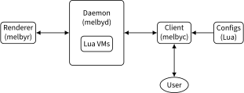

Developer Manual
- 1. Overview of this manual
- 2. Build System for Literate Programming
- 3. Build System for Packaging Melby
- 4. How to hack on this project
- 5. melbyc
- 6. melbyd
- 6.1. Purpose
- 6.2. Proto
- 6.3. Tech stack
- 6.4. Life of a request to render a shell prompt
- 6.5. Internals
- 6.5.1. Standard Resource Server
- 6.5.2. Shell Logger GenServer (SLG)
- 6.5.3. Current path (path shortening)
- 6.5.4. Colors
- 6.5.5. Entrypoint for client
- 6.5.6. gRPC services
- 6.5.7. Lua API
- 6.5.8. Purpose
- 6.5.9. Design by contract
- 6.5.10. Code overview
- 6.5.11. Business logic
- 6.5.12. Boilerplate
- 6.5.13. Build system
- 6.6. Installation
- 6.7. Build system
- 6.8. Tests
1. Overview of this manual
This manual covers several topics:
- The build system for Literate Programming (LP), which explains how LP is used in this project.
- The build system for packaging Melby, which explains how Melby can be packaged up using the Nix Package Manager. This is useful for developing Melby locally (setting up a development environment).
- The daemon and client programs that make up the Melby implementation.
Before we get into the details, let's take a quick look at the tech stack used and the architectural overview of how the different pieces fit together.
1.1. Tech stack
We use several programming languages: Elixir, Lua, Rust, and Haskell.
- Elixir: Elixir is the main language used in this project because of it leverages the famed Erlang runtime, known for its world-class reliability. Elixir is used for programming the base system, as well as testing all of the components together.
- Lua: Lua is used as our configuration language, because of its power (especially by integrating with Luerl, which allows us to interop with Elixir) and flexibility.
- Rust: Rust is used in some places where static typing and performance might come in handy. Typically it's used for smaller, pure (lacking side effects) functions as NIFs (Native Inline Functions) inside Elixir.
- Haskell: Haskell is used for the Melby client binary
melbyc, and also themelbyrrendering service. Haskell maximizes code maintainability and stability, and so it is the preferred language for building smaller independent components outside of the base (Elixir) system.
We also use Literate Programming (LP). To this end, we use Emacs Org mode
(*.org files) as the source of truth. These files are tangled into the above
languages for the application binaries. These same Org files are woven to
produce HTML files for documentation (what you are probably reading now). We use
several languages for weaving:
- Emacs Lisp: We use Emacs Lisp to tame Emacs Org mode for LP. Emacs Org mode is used for LP in this project because it is probably the most flexible and widely-used LP system out there. LaTeX + Noweb is another possibility, but it was not chosen because Org mode by default looks reasonable in plaintext.
- TikZ: PGF/TikZ is used for writing all of the diagrams and figures used for documentation. This is because TikZ is extremely stable, powerful, and flexible for creating diagrams of all sorts. SVG is the preferred file format.
- HTML/CSS: HTML and CSS power the documentation. Although PDF output can be very beautiful, HTML is simply more accessible and also does not require code listings to be broken across multiple pages.
1.2. Architectural overview of Melby components

Melby uses a client/server architecture. There are two main parts:
melbyd is the daemon, which acts as a server in the client/server
architecture. We call it a daemon because it is expected to have direct access
to the local machine which is relevant to the client. This is unlike typical web
servers where the local machine characteristics of such servers are irrelevant
to clients.
melbyd: The daemon (server), which itself is composed of two smaller pieces:a) The core application written in Elixir and Rust.
b) The renderer (
melbyr) written in Haskell. This is a separate child process controlled by the core app.melbyc: The client, written in Haskell.a)
melbyc-rustis an equivalent client written in Rust.
The pieces above work like this:
- User writes a Lua script to specify what pieces of information it wants, and how it should be presented.
melbycsends this script tomelbydfor processing.melbydgathers the necessary data (e.g., Git status or Kubernetes metadata) and sends itmelbyrfor generating the final view (an arbitrary string).- The view is sent back to
melbyc, which then prints it to STDOUT.
2. Build System for Literate Programming
2.1. Overview of how LP is used in this project
Melby uses Lilac, a literate programming tool.
2.2. Weaving (generating the docs)
Weaving is conceptually simpler than tangling because there is no extra step — the output is an HTML page and that is something that we can use directly (unlike program source code, which may require additional compilation into a binary, depending on the language). We also limit ourselves to only HTML for simplicity (in particular, we don't have to worry about page breaks).
Weaving for requires the following dependencies:
| Dependency | Why | How to install it |
| GNU Make | ? | |
| emacs | ||
| texlive | Diagrams | |
| pdf2svg | Diagrams | |
| inkscape | Diagrams | |
| html-beautify | Format HTML with indentation |
For Melby, we have a top-level Makefile so that we can run some make commands
on the command line (instead of needing to invoke emacs directly).
PROJ_ROOT := $(shell git rev-parse --show-toplevel) LILAC_ROOT := $(PROJ_ROOT)/deps/elisp/lilac PROCS := $(shell nproc) define run_emacs LILAC_ROOT=$(LILAC_ROOT) PROJ_ROOT=$(PROJ_ROOT) emacs $(2) \ --quick --batch --kill \ --load $(LILAC_ROOT)/lilac.el \ --load $(PROJ_ROOT)/melby.el \ --eval="$(1)" endef all: tangle weave all-build-tools: tangle-build-tools weave fresh-repl: make -C $(PROJ_ROOT) -j$(PROCS) tangle make -C $(PROJ_ROOT)/daemon repl Makefile-tangle weave: build-html build-images weave-quick: MELBY_LP_QUICK=1 make -C ${PROJ_ROOT} -j$(PROCS) build-html build-images .PHONY: weave-quick weave-profile: $(call run_emacs,(lilac-publish-profile),main.org) .PHONY: weave-profile weave-profile-inspect: emacs -Q --load $(LILAC_ROOT)/lilac.el \ --eval="(profiler-find-profile \"emacs-profile-weave.txt\"))" .PHONY: weave-profile-inspect build-images: image-org $(MAKE) -C image build-html: main.html image.html developer-manual.html user-manual.html main.html: developer-manual.html image.html main.org #$(call run_emacs,(lilac-gen-css-and-exit),main.org) $(call run_emacs,(lilac-publish),main.org) developer-manual.html: developer-manual.org $(call run_emacs,(lilac-publish),developer-manual.org) user-manual.html: user-manual.org developer-manual.html $(call run_emacs,(lilac-publish),user-manual.org) image.html: image.org $(call run_emacs,(lilac-publish),image.org) .PHONY: all all-build-tools weave # Enter development environment. shell: nix-shell --pure
2.2.1. Emacs customizations
Because Lilac does not come with built-in support for syntax highlighting for
all of the different programming languages we use, we have to import them here
manually. That way, when we run (lilac-publish) we'll get all of the syntax
highlighting that we need.
;; Built-in packages (distributed with Emacs). (require 'tex-mode) (require 'elisp-mode) (defun melby-load (path) (add-to-list 'load-path (concat (getenv "PROJ_ROOT") (concat "/deps/elisp/" path)))) ;; Third-party packages (checked in as Git submodules) (melby-load "dash.el") (require 'dash) ; required by magit (melby-load "compat.el") (require 'compat) ; required by magit (melby-load "haskell-mode") (require 'haskell-mode) (require 'haskell-cabal) (melby-load "magit/lisp") (require 'magit-section) ; required by nix-mode (melby-load "nix-mode") (require 'nix-mode) (melby-load "rust-mode") (require 'rust-mode) (melby-load "emacs-elixir") (require 'elixir-mode) (melby-load "lua-mode") (require 'lua-mode) (melby-load "protobuf/editors") (require 'protobuf-mode) (melby-load "yaml-mode") (require 'yaml-mode) (setq org-latex-compiler "lualatex")
2.2.2. Diagrams
The code used to generate the diagrams used in this doc is here. We don't discuss that code in this doc because it would make this doc even more verbose.
2.2.3. Ignore woven HTML from git diff
Typically we only need to look at the rendered HTML output in a web browser as
the raw HTML diff output is extremely difficult to parse as a human. So by
default we ask Git to exclude it from git diff by treating them as binary
data.
* -diff **/*.json diff **/*.org diff **/.gitattributes diff **/.gitmodules diff **/.gitignore diff
In order to still show the HTML textual diff, we can run git diff --text.
2.2.3.1. git add -p
Note that the above setting to treat HTML files as binary data prevents them
from being considered for git add -p. In order to add them, use git add -u
instead.
2.3. Tangling (generating the source code)
Tangling is simply the act of collecting the #+begin_src ... #+end_src blocks
and arranging them into the various target (source code) files. Every source
code block is given a unique name.
We simply tangle all major *.org files in the top-level Makefile.
tangle-build-tools: build-tools tangle-sources tangle-generated # Duplicate some files. This way we avoid symlinking, because symlinks can # break when we section off parts of the codebase into separate sandboxes # for building things, such as when building Haskell packages. cp -f LICENSE client/LICENSE cp -f melby_client.proto client/lib/MelbyClient/melby_client.proto cp -f melby_client.proto client-rust/proto/melby_client.proto cp -f melby_renderer.proto daemon/lib/melbyd/renderer/lib/MelbyRenderer/melby_renderer.proto .PHONY: tangle-build-tools # Same as tangle-build-tools, but does not rebuild build tools (ptu). do-tangle: tangle-sources tangle-generated cp -f LICENSE client/LICENSE cp -f melby_client.proto client/lib/MelbyClient/melby_client.proto cp -f melby_client.proto client-rust/proto/melby_client.proto cp -f melby_renderer.proto daemon/lib/melbyd/renderer/lib/MelbyRenderer/melby_renderer.proto .PHONY: do-tangle # Currently we don't have any optimizations for tangling, but we still set # MELBY_LP_QUICK=1 anyway to align with what we do for weave-quick. tangle: MELBY_LP_QUICK=1 make -C $(PROJ_ROOT) -j$(PROCS) do-tangle @$(PROJ_ROOT)/audit.sh .PHONY: tangle tangle-profile: $(call run_emacs,(melby-tangle-profile),developer-manual.org) .PHONY: tangle-profile tangle-profile-inspect: emacs -Q --load $(LILAC_ROOT)/lilac.el \ --eval="(profiler-find-profile \"emacs-profile-tangle.txt\"))" .PHONY: tangle-profile-inspect tangle-generated: # Generate generated source code. $(MAKE) -C daemon all .PHONY: tangle-generated # Generate source code. tangle-sources: developer-manual-org \ user-manual-org \ image-org image-org: image.org $(call run_emacs,(org-babel-tangle),image.org) # The developer manual generates the toplevel Makefile (this file) and # image/Makefile (overwriting them if necessary) to bootstrap the whole # literate-programming pipeline. Note that these LP-related Makefiles are # different than the ones used to compile the tangled source code. developer-manual-org: $(call run_emacs,(org-babel-tangle),developer-manual.org) user-manual-org: developer-manual-org $(call run_emacs,(org-babel-tangle),user-manual.org) .PHONY: tangle-sources .PHONY: developer-manual-org .PHONY: user-manual-org .PHONY: image-org
2.3.1. Copyright headers
We used to use a utility called ptu ("post-tangle utility") to prepend
copyright headers to all tangled files, but this resulted in a few problems:
- no support for copyright year ranges (e.g., 2020-2024),
- no support for checking when each tangled part was actually modified in the Org source file.
Because of these issues, the utility has been removed.
2.3.2. .gitignore
# Cache directory used by the .envrc file. .direnv # Apple file system metadata. .DS_Store # Haskell "stack" tooling metadata. .stack-work # This folder holds dependencies we bring into this project via Git submodules. # Ignore them here so that we don't search into them when we invoke ripgrep to # perform text searches. deps/ # By the same token, ignore all HTML files because we don't want ripgrep to # search them either. *.html # Temporary files related to image generation. image/*.aux image/*.log image/*.pdf image/*uncropped*
2.3.3. Post-tangled phase
Here we discuss the various programming languages and their required build environments.
2.3.3.1. Elixir
We use Elixir 1.13.4+.
2.3.3.2. Rust
2.3.3.3. Haskell
We use stack for reproducibility, although we should probably also think of moving to Nix.
We're stuck on GHC 8.10.7 because of mu-haskell which currently does not build with GHC 9+. We'll move to Grapesy when that library becomes ready for use.
2.3.3.4. Lua
We use luerl, which uses Lua 5.2 with some 5.3 support.
2.3.4. Audit of what's tangled
Some files in this project are not tangled for convenience. Below is a script that asks Git for a list of all tracked files, and compares it against what's tangled from Org files.
The script also takes into account a list of known non-tangled tracked files which acts as an allowlist.
set -euo pipefail SCRIPT_ROOT="$(dirname "$(realpath "$0")")" # Files which are tracked outside of our tangling step, but for legitimate # reasons (generated code, symlinks to dependencies, or LICENSE files, # typically). known_not_tangled=( # Generated by Git itself. .gitmodules # Legalese. LICENSE # Build system metadata. client-rust/Cargo.lock # Copied over from toplevel proto in Makefile. client-rust/proto/melby_client.proto # Generated by client-rust/build.rs. client-rust/src/grpc_generated/melby_client.rs # Legalese, same as toplevel (copied over in Makefile). client/LICENSE # Copied over from toplevel proto in Makefile. client/lib/MelbyClient/melby_client.proto # Needed for Haskell+Stack integration. client/stack.nix # Build system metadata. client/stack.yaml.lock # Generated gRPC stubs (Elixir). daemon/lib/generated/melby.pb.ex daemon/lib/generated/melby_client.pb.ex daemon/lib/generated/melby_daemon.pb.ex daemon/lib/generated/melby_renderer.pb.ex # Build system metadata. daemon/lib/melbyd/nifs/Cargo.lock # Legalese. daemon/lib/melbyd/renderer/LICENSE # Copied over from toplevel proto in Makefile. daemon/lib/melbyd/renderer/lib/MelbyRenderer/melby_renderer.proto # Needed for Haskell+Stack integration. daemon/lib/melbyd/renderer/stack.nix # Build system metadata. daemon/lib/melbyd/renderer/stack.yaml.lock # Build system metadata. daemon/mix.lock # Generated by mix2nix. daemon/mix.nix # Generated SVG output (TikZ->PDF->SVG). image/architecture-overall.svg # Symlinks to Lilac. lilac.css lilac.js lilac.theme # Generated by Niv. package/nix/sources.json package/nix/sources.nix # Symlink to Lilac. syntax-highlighting.css ) # List all files we explicitly tangle from Org files. tangled_files() { git -C "${SCRIPT_ROOT}" grep -P '^#\+begin_\w+ .+? :tangle' -- '*.org' \ | sed 's/^.\+:tangle \(\S\+\).*$/\1/' \ | sort } # List all files checked into version control. tracked_files() { git -C "${SCRIPT_ROOT}" ls-tree -r HEAD \ | awk '{print $2,$4}' \ | grep '^blob' \ | grep -v '\.\(html\|org\)$' \ | awk '{print $2}' } main() { >&2 echo -n "$0: checking tangled vs tracked files... " # Combine tangled files and those which are tracked but not tangled. This # list should match the sum of all tangled files (modulo HTML and Org # files). if diff -u \ <(printf '%s\n' "$(tangled_files)" "${known_not_tangled[@]}" | sort) \ <(tracked_files); then >&2 echo "OK" else >&2 echo "$0: failed" fi } main "$@"
2.4. Glossary
- Melby component: a modular piece of software used to deliver the Melby user experience.
3. Build System for Packaging Melby
3.1. Introduction
We use Nix for the build system. Nix allows us to package up Melby into an installable software unit, or package, as well as provide us a development environment capable of building Melby from scratch.
3.1.1. What we must build
There are several pieces of software we need to build (compile from source):
- melbyc (Haskell)
- melbyr (Haskell)
- melbyd (Elixir)
- melbyd Nifs (Rust)
3.2. Development environment
Developing is intimately tied to releasing. And of course, development must come first before we can release. And so we discuss the development environment here.
We use Nixpkgs (aka "Nix") to set up the environment, because it is the largest package repository that's available on both Mac (via nix-darwin) and Linux. So it makes developing software that spans across multiple different programming language ecosystems that much easier.
3.2.1. nix-direnv
The direnv tool looks for .envrc files in folders; then you can configure your
shell so that it picks up project-specific settings whenever your shell moves
in/out of such a folder. We invoke use nix so that it picks up the environment
defined inside shell.nix (see 3.2.2 below).
use nix
There are a number of similar projects that make the above use nix invocation
faster. We recommend using nix-direnv. On nix-darwin, installing nix-direnv also
installs direnv for us on the system.
3.2.2. Nix shell
This is taken from here, and it's what direnv will use when we enter the
top-level directory in the shell.
If direnv is not available, then we have to manually run the equivalent of the
use nix line in .envrc, which would be nix-shell --pure. You can also do
this by running make shell.
This is the main development shell and brings in all of our dependencies to build all of our code. It's great for development and testing things out (e.g., running unit tests) for all of the various languages we use.
let # Nixpkgs snapshot. sources = import ./package/nix/sources.nix; # Overlays oxalica-rust-overlay = import sources.rust-overlay; # Build rust crates. naersk = final: prev: { naersk = pkgs.callPackage sources.naersk { inherit sources; }; }; # The final "pkgs" attribute with all the bells and whistles of our overlays. pkgs = import sources.nixpkgs { overlays = [ oxalica-rust-overlay naersk ]; }; # Wrap Stack to configure Nix integration and target the correct Stack-Nix # file # # - nix: Enable Nix support (use Stack's built-in Nix integration; this makes # Stack populate the "ghc" variable in our nix/stack.nix file with the GHC # version found in the stack.yaml file; this way we don't have to specify a # GHC version in Nix (when we already define it transitively through # specifying Stack's LTS version in stack.yaml)). This also makes it so that # ghci is not available in the nix-shell; rather it can only be accessed # through "stack exec -- ghci". # # - nix-pure: Do not pass environment variables, like `NIX_PATH` # # - nix-shell-file: Specify the Nix file to use (otherwise it uses `shell.nix` # by default) # # Vanilla (unwrapped) stack is available as `.stack-wrapped`, courtesy of # pkgs.symlinkJoin. stack-wrapped = pkgs.symlinkJoin { name = "stack"; paths = [ pkgs.stack ]; buildInputs = [ pkgs.makeWrapper ]; postBuild = '' wrapProgram $out/bin/stack \ --add-flags "\ --nix \ --nix-pure \ --system-ghc \ --no-install-ghc \ --nix-shell-file=./stack.nix \ " ''; }; protoc-gen-elixir = pkgs.callPackage ./package/protoc-gen-elixir.nix {}; darwin-cargo-build-rustflags = pkgs.lib.attrsets.optionalAttrs pkgs.stdenv.isDarwin { CARGO_BUILD_RUSTFLAGS = "-C link-arg=-undefined -C link-arg=dynamic_lookup"; }; macOS-security = # Make `/usr/bin/security` available in `PATH`, which is needed for stack # on darwin which calls this binary to find certificates. See # https://github.com/tweag/rules_haskell/commit/31171a520f49f263895112678ac93c7ed958ead1. pkgs.writeScriptBin "security" ''exec /usr/bin/security "$@"''; # See https://nixos.wiki/wiki/TexLive for customizing texlive packages # (picking only those packages we need as in here). tex = (pkgs.texlive.combine { inherit (pkgs.texlive) scheme-basic dvisvgm fontspec luatex85 pgf sourcesanspro standalone xkeyval; }); in # This is our development shell. pkgs.mkShell ({ buildInputs = [ # Haskell stack-wrapped # Let stack use Nix with the Nix we version here. pkgs.nix # Rust pkgs.rust-bin.stable.latest.default pkgs.rust-analyzer # Elixir pkgs.beam.packages.erlangR26.elixir pkgs.beam.packages.erlangR26.erlang # erl, escript pkgs.mix2nix # gRPC and Protocol Buffers pkgs.protobuf # Needed for running Elixir plugin for protoc. E.g., "protoc # --elixir_out=plugins=grpc:. foo.proto". We need to install # protoc-gen-elixir. protoc-gen-elixir # Tangling and weaving for Literate Programming. pkgs.emacs29-nox tex # For updating Nix dependencies. pkgs.niv # Misc pkgs.git pkgs.less ] # For file_system on Linux. ++ pkgs.lib.optional pkgs.stdenv.isLinux pkgs.inotify-tools # For file_system on macOS. See # https://elixirforum.com/t/could-not-compile-file-system-watcher-for-mac/17432/10 # for a discussion about getting a file system watcher working on Mac. ++ pkgs.lib.optionals pkgs.stdenv.isDarwin (with pkgs.darwin.apple_sdk.frameworks; [ CoreFoundation CoreServices Security ]) ++ pkgs.lib.optionals pkgs.stdenv.isDarwin [ # This allows mix2nix to be able to download hex packages using HTTPS, in a # `nix-shell --pure` environment. See # https://github.com/NixOS/nixpkgs/issues/66716#issuecomment-883399373. pkgs.cacert macOS-security ]; # FIXME: how to get the git version into the environment...???? The setting # below for MELBY_PROJECT_ROOT only works for the dev env, not the release env shellHook = '' # Prefer to use melbyr and melbyc from the local development tree path. export PATH=$PWD/daemon/test:$PWD/daemon/lib/melbyd/renderer:$PWD/client:$PATH export KUBECONFIG=$PWD/daemon/test/fake_kube_config export MELBY_DIR=$PWD/daemon/test/sample export MELBY_PROJECT_ROOT=$PWD export MELBYR_PATH=$PWD/daemon/lib/melbyd/renderer/melbyr export LUA_PATH="$PWD/daemon/test/sample/?.lua" ''; # Configure the Nix path to our own `pkgs`, to ensure Stack-with-Nix uses the # correct one rather than the global <nixpkgs> when looking for the right # `ghc` argument to pass in `nix/stack.nix` # # See https://nixos.org/nixos/nix-pills/nix-search-paths.html for more # information. NIX_PATH = "nixpkgs=" + pkgs.path; # Make Elixir not complain about using "latin1" encoding. LANG = "en_US.UTF-8"; LOCALE_ARCHIVE = pkgs.lib.optional pkgs.stdenv.isLinux "${pkgs.glibcLocales}/lib/locale/locale-archive"; } // darwin-cargo-build-rustflags)
3.2.2.1. Make Stack understand Nix
let sources = import ./sources.nix; pkgs = import sources.nixpkgs { }; in # See https://docs.haskellstack.org/en/stable/nix_integration/#using-a-custom-shellnix-file # # But basically this tells stack to figure out the GHC version by looking at # stack.yaml (we have to have this file in $PWD from the current nix-shell # session). # # This is really great because this means we can technically have different # tools use different versions of GHC. So maybe one of the smaller, simpler # tools can use the latest GHC with useful features and have that as a role # model for the other Haskell binaries that are lagging behind on older GHC # versions due to dependencies that have not yet upgraded to the newer version. { ghc }: pkgs.haskell.lib.buildStackProject { inherit ghc; name = "melby"; # System dependencies needed at compilation time buildInputs = [ pkgs.zlib ]; }
3.3. Packaging
3.3.1. Releasing
We use Nix to package everything up. The main thing to note here is that we
reuse the shell environment's sources (in nix/sources.nix) to make sure that
the development environment's dependencies exactly match what we'll end up
shipping.
let sources = import ./nix/sources.nix; pkgs = import sources.nixpkgs {}; # We have to explicitly choose GHC 8.10.7 because 9.0.2 is the default for # nixos-22.11 (which we don't want because the Stack version we use, LTS # 18.28, uses 8.10.7). hpg8107 = pkgs.haskell.packages.ghc8107; hpg96 = pkgs.haskell.packages.ghc96; melby-client = hpg8107.callPackage ../client/melby-client.nix {}; melby-client-rust = pkgs.callPackage ../client-rust/melby-client-rust.nix {}; # FIXME: We need to pass in a "version" attribute to all Haskell packages # because the default buildStackProject helper does not provide a version. # This means we need to start creating version strings, probably in the format # "YY.MM.DD-<sha>" to make it incremental. #melby-client-2 = (import melby-client-1) {}; #melby-client-3 = pkgs.haskell.lib.addBuildTool melby-client-2 fakeGit; melby-renderer = hpg8107.callPackage ../daemon/lib/melbyd/renderer/melby-renderer.nix {}; melby-daemon = pkgs.callPackage ../daemon/melby-daemon.nix {}; melby-nifs = pkgs.callPackage ../daemon/lib/melbyd/nifs/melby-nifs.nix {}; in { inherit melby-client melby-client-rust melby-renderer melby-daemon melby-nifs; }
We can now install everything above with nix-env -if ./release.nix. Be sure to
run systemctl --user daemon-reload to load the systemd definition that comes
with melby.service, and run systemctl --user start melby.service to actually
start it.
let sources = import ./nix/sources.nix; pkgs = import sources.nixpkgs {}; melby = import ./build.nix; in pkgs.symlinkJoin { name = "melby"; paths = with melby; [ melby-client melby-client-rust melby-renderer melby-daemon ]; # If users have already installed individual packages already, make the ones # we bundle here act as a fallback. Default priority is 5, and so by setting # it to 10, makes Nix treat the files of this derivation as a fallback if # there is a conflict. meta.priority = 10; }
Additional steps:
Create a ~/.melby/systemd/env file with the contents
FIXME: Add in "prod" settings here for MELBYR_PATH, MELBYR_PORT, and so on so as to not conflict with the dev environment. Even better, add these settings in our Elixir code so that the user does not (normally) have to configure them.
RELEASE_COOKIE=path/to/cookie
Then populate path/to/cookie with a random text string like this:
$ cd ~/.melby $ openssl rand -base64 48 > cookie $ chmod 600 cookie
3.3.2. Makefile
FIXME: reduce repetition by using a build rule (akin to run_emacs)
define run_build
nix-build build.nix --option sandbox relaxed --show-trace \
-A $(1) --out-link $(1)
endef
build:
nix-build build.nix --option sandbox relaxed --show-trace
build-melby-client:
$(call run_build,melby-client)
build-melby-client-rust:
$(call run_build,melby-client-rust)
build-melby-daemon:
$(call run_build,melby-daemon)
build-melby-nifs:
$(call run_build,melby-nifs)
build-melby-renderer:
$(call run_build,melby-renderer)
shell:
nix-shell --pure
# Update nix/ folder to pin dependencies to nixos-24.05.
update-nix:
niv update nixpkgs --branch nixos-24.05
.PHONY: build
.PHONY: build-melby-client
.PHONY: build-melby-client-rust
.PHONY: build-melby-renderer
.PHONY: build-melby-daemon
.PHONY: build-melby-nifs
.PHONY: shell
.PHONY: update-nix
3.3.3. .gitignore
# These links can get created if we build individual targets. melby-client melby-client-rust melby-nifs melby-renderer melby-daemon # These result-NUMBER links get created automatically by Nix. result*
4. How to hack on this project
First realize that this project uses literate programming. Because of this, you
must ensure that you can edit the Org files and make sure that those changes (to
the source code) can get tangled into source code locations for the various
compilers (ghc, elixir, etc) can consume.
The next most important thing is making sure that the shell.nix file at the
project root works (such that running make shell works). Run make shell to
enter the development environment.
You then need to stand up each individual Melby component.
4.1. Building each component
4.1.1. melbyr (renderer; required by daemon)
cd daemon/lib/melbyd/renderer; make
4.1.2. melbyd (daemon)
cd daemon && make
And then to run the daemon, do
cd daemon && make run_dev
There is also a run-prod rule but this won't work if you are already running a
packaged version of melbyd in your system, because they will both try to use
the same TCP port. So in that case you have to first stop the packaged version
you are running.
4.2. melbyc (client)
cd client; make
For invoking melbyc after building it, the simplest thing to do is to use the
provided preview.sh script in daemon/test/preview.sh. This script sets up
all necessary environment variables.
Note that currently the script uses a fake kubectl, because we don't want to
bother standing up a real Kubernetes instance in order to just test how
the real kubectl would behave. The script hardcodes the path to melbyc so
that it refers to the one that has been compiled inside the development
environment.
4.3. Testing local changes
FIXME: How to do testing? What about integration tests? How to invoke tests? mix test?
4.4. Common scenarios
4.4.1. Hacking on the Lua config
Make sure to use fakes, and to add validation tests. FIXME show examples.
5. melbyc
We first examine the client to get a sense of how things work from the
perspective of the human user, who is expected to invoke melbyc somewhere in
their shell prompt generation logic. We then look at the pieces in the daemon to
see how it all works.
5.1. Purpose
melby-client is a client for Melby. It allows users to interact with melby (the
daemon).
5.2. Design by contract
We would like our client to observe the following behaviors.
- Allow users to talk to the daemon.
- Run very quickly (the synchronous call to the daemon should finish in under 500 milliseconds).
- Have basic command-line argument handling.
These points are the main things (or problems) that our program has to worry about. We look at each of these requirements below.
5.2.1. Talking to the daemon
We talk to melbyd using gRPC. This is rather straightforward as it just involves a single unary (that is, non-streaming) gRPC call.
5.2.1.1. Lua
The more interesting thing here is that we send melbyd some Lua code to give the user the flexibility of determining exactly how to construct the prompt. This way, the user is not stuck with only the default "look" of the pieces of the prompt (the user can do more than just rearrange these pieces — they can customizes the pieces themselves). To this
5.2.1.2. Proto
For concreteness, this is the actual protobuf file we use to define melbyc's behavior when it talks to the daemon.
This is the protobuf definition that we need to generate the Haskell client stub. We also use it to generate the Elixir server stubs (used by the daemon). FIXME: add link to where it's used in Elixir.
syntax = "proto3"; package melby_client; // melbyc <-> melbyd communication service View { rpc GetView (ViewRequest) returns (ViewResponse); } message ViewRequest { // Path to Lua configuration. Delegates reading the config to the daemon. string config_path = 1; // Lua configuration that is given directly. Currently unusued by the daemon. string config = 2; // Environment variables ((name, value) pairs) of interest. map<string, string> env_vars = 3; // Process ID number of the running (interactive) shell program. (FIXME: move // this to env var) string shell_pid = 4; } message ViewResponse { // Status of this response message. ViewStatus status = 1; // String result of running Lua script. string view = 2; // Error message from melbyd, if any. string error = 3; } enum ViewStatus { VIEW_STATUS_UNSPECIFIED = 0; VIEW_STATUS_ERROR = 1; VIEW_STATUS_OK = 2; }
5.2.2. Running very quickly
We don't want the client to block too long, because it is expected to be called
as often as every second (or even more often if Zsh ever offers sub-1-second
delay with the TMOUT variable).
The basic way we ensure this is that we make melbyd return whatever it has without waiting for any of its internal calculations to finish.
Because this is a daemon-side concern, there isn't much for us to do here.
5.2.3. Command line argument handling
This is somewhat "boring" and we actually don't have much to design here. Much of the choices here depend heavily on the command line argument parsing library that we will be using.
5.3. Code overview
This walk-through is written for the future maintainers of this codebase.
5.3.1. Overall structure
All of the business logic lies in the melby-client.hs file, which has the
following structure:
melbyc_pragmas module Main where melbyc_imports melbyc_business_logic melbyc_option_handling melbyc_main
The more interesting bits are in the <<business-logic>> section, which
actually performs the gRPC call to melbyd. Everything else is mostly boilerplate
code.
We'll look at the business logic first, and then all of the other boilerplate code.
5.4. Business logic
Recall in section FIXME that we said we wanted to pass in some Lua code. So
that's basically what we do here — we pass in a gRPC connection and a filepath
to the Lua script we want to send to melbyd. We do this in the getView
function.
Now let's construct the getView function.
getView :: GRpcConnection View 'MsgProtoBuf -> FilePath -> T.Text -> Int -> IO () getView conn configPath' config' shell_pid' = do melbyc_getView_construct_payload melbyc_getView_call_melbyd melbyc_getView_handle_payload
Below we construct a gRPC message payload (request) for melbyd.
env_vars_str <- getEnvironment let env_vars' = M.fromList $ map (\(k, v) -> (T.pack k, T.pack v)) env_vars_str req = toSchema $ MViewRequest { config_path = T.pack configPath' , config = config' , env_vars = env_vars' , shell_pid = T.pack $ show shell_pid' }
We then make the remote procedure call. There's some lens magic here, but the
important thing is that we call the GetView method by passing it the req as
an argument. We use the capitalized GetView instead of getView because the
capitalized version is the suggested style for protocol buffers according to
https://developers.google.com/protocol-buffers/docs/style#services.
Unfortunately, we cannot use #GetVrompt (just like we would use #getVrompt,
the non-capitalized version) and so must instead do fromLabel @"GetView"
because capitalized words have a special meaning in Haskell. See
https://github.com/higherkindness/mu-haskell/issues/337#issuecomment-1243874126.
response <- conn ^. fromLabel @"GetView" $ req
For now we don't really care if the call to melbyd did not succeed and crash if
the response was not successfully completed. That's why we only pattern match
against GRpcOk.
term here is a mu-haskell type that can be converted into a Haskell type, as
below. However, the term itself is useful because we can use various "optics"
functions, such as ^..
Lastly we need to render the view to the user from the response.
let term = case response of GRpcOk a -> Right a x -> Left $ T.pack ("unrecognized daemon response: " <> (show x)) case term of Left err -> do T.hPutStrLn stderr err exitFailure Right a -> do let viewResponse = fromSchema a :: MViewResponse case status viewResponse of VIEW_STATUS_UNSPECIFIED -> do T.hPutStrLn stderr ("VIEW_STATUS_UNSPECIFIED") exitFailure VIEW_STATUS_ERROR -> do T.hPutStrLn stderr ("encountered error: " <> getField @"error" viewResponse) exitFailure VIEW_STATUS_OK -> do T.putStrLn $ getField @"view" viewResponse
That's it! We are done printing to STDOUT and the shell program (or whatever
else) that is calling us can make use of this information. A primary use case is
making getView output a shell script itself (such as variable assignments)
that can be sourced by the shell. This way all that the shell has to do is
something like:
source "$(melbyc view PATH_TO_LUA_CONFIG)"
5.5. Boilerplate
5.5.1. Option handling
The types here are what we read in from the command line.
data Opts = Opts { subcommand :: Subcommand , oMelbydPort :: PortNumber } data Subcommand = View ViewOpts | Ping | Shutdown data ViewOpts = ViewOpts { oConfigPath :: FilePath , oConfig :: T.Text , oShellPid :: Int }
The parsers here determine how the types we defined above are accepted on the command line. For the user, this is the help message they see so that they know how to provide the right arguments to ensure that we get the correct types.
optionsP :: Parser Opts optionsP = Opts <$> subcommandP <*> (option auto (long "melbyd-port" <> help "port for melbyd (e.g., 50052 for dev environmont))" <> showDefault <> value 50051 <> metavar "PORT")) subcommandP :: Parser Subcommand subcommandP = hsubparser ( command "view" (info (View <$> viewOptsP) (progDesc "get prompt information with Lua")) <> command "ping" (info (pure Ping) (progDesc "Check melbyd connectivity")) <> command "shutdown" (info (pure Shutdown) (progDesc "Shut down melbyd instance")) <> metavar "SUBCOMMAND" ) viewOptsP :: Parser ViewOpts viewOptsP = ViewOpts <$> (argument str (metavar "FILEPATH")) <*> (option auto (long "config" <> help "raw Lua string" <> showDefault <> value "" <> metavar "LUA_CONFIG_RAW")) <*> (option auto (long "shell-pid" <> help "PID of invoking shell (in most shells this is '$$')" <> showDefault <> value 0 <> metavar "PID"))
Lastly, optsHandler is where we send the types that we've constructed (after a
successful parse of command line arguments) to the business logic.
optsHandler :: Opts -> IO () optsHandler (Opts subcommand' oMelbydPort') = do -- FIXME: configure the domain and port to be configurable through TOML or -- yaml in a shared location with the daemon. The daemon should configure its -- port with it. The precedence of settings (where later mechanisms override -- earlier ones) is: (1) the configuration file (in TOML) converted to a -- native Haskell type (with sane defaults) with tomland -- (https://kowainik.github.io/posts/2019-01-14-tomland), (2) command-line -- options that are passed in at runtime. Right viewClient <- initGRpc (grpcClientConfigSimple "127.0.0.1" oMelbydPort' False) msgProtoBuf --home <- T.pack <$> getEnv "HOME" case subcommand' of View o -> do getView viewClient (oConfigPath o) (oConfig o) (oShellPid o) Ping -> putStrLn "not implemented" Shutdown -> putStrLn "not implemented"
5.5.2. Main
main :: IO () main = do opts <- customExecParser (prefs showHelpOnEmpty) optsP optsHandler opts where optsP = info parserProgramOptions infoMod parserProgramOptions = helper <*> versionOption <*> optionsP infoMod = fullDesc <> header "melbyc - CLI for interacting with the melby daemon (melbyd)" melbyc_gitVersion
5.5.3. gRPC schema
This is the code that helps melbyc understand how to encode and decode the raw
bytes that are used for communication with melbyd (an Elixir application). This
is usually autogenerated when you're using a gRPC stack (via built-in language
support from the protoc binary, a.k.a. the protobuf compiler). However the
Haskell library we use asks us to define these types, so we do that here. This
isn't that much work, and although it reads like autogenerated code, it is easy
enough to understand (thanks to how terse Haskell can be).
We define this in a separate file so that it can be reused by other programs,
namely the melbyd-lens Haskell service that runs as part of melbyd.
FIXME: break this up into smaller chunks
{-# language CPP #-} {-# language DataKinds #-} {-# language DeriveAnyClass #-} {-# language DeriveGeneric #-} {-# language DerivingVia #-} {-# language DuplicateRecordFields #-} {-# language FlexibleContexts #-} {-# language FlexibleInstances #-} {-# language MultiParamTypeClasses #-} {-# language OverloadedLabels #-} {-# language PolyKinds #-} {-# language TemplateHaskell #-} {-# language TypeFamilies #-} {-# language TypeOperators #-} module MelbyClient.Schema where import qualified Data.Text as T import qualified Data.Map.Strict as M import GHC.Generics import Mu.Quasi.GRpc import Mu.Schema grpc "MelbyClientSchema" id "lib/MelbyClient/melby_client.proto" -- The "M" prefix for the types here is for "Message" as in a gRPC "message" -- type. data MViewRequest = MViewRequest { config_path :: T.Text , config :: T.Text , env_vars :: M.Map T.Text T.Text , shell_pid :: T.Text } deriving (Eq, Show, Ord, Generic , ToSchema MelbyClientSchema "ViewRequest" , FromSchema MelbyClientSchema "ViewRequest") data MViewResponse = MViewResponse { status :: MViewStatus , view :: T.Text , error :: T.Text } deriving (Eq, Ord, Show, Generic , ToSchema MelbyClientSchema "ViewResponse" , FromSchema MelbyClientSchema "ViewResponse") data MViewStatus = VIEW_STATUS_UNSPECIFIED | VIEW_STATUS_ERROR | VIEW_STATUS_OK deriving (Eq, Ord, Show, Generic , ToSchema MelbyClientSchema "ViewStatus" , FromSchema MelbyClientSchema "ViewStatus")
5.5.4. Other
5.5.4.1. Pragmas
The language pragmas are not that interesting, as their purpose is to basically turn on the various GHC extensions that allow us to use the libraries we use.
{-# language DataKinds #-} {-# language OverloadedLabels #-} {-# language OverloadedStrings #-} {-# language ScopedTypeVariables #-} {-# language TemplateHaskell #-} {-# language TypeApplications #-}
5.5.4.2. Imports
import Data.Map.Strict qualified as M import Data.Text qualified as T import Data.Text.IO qualified as T import Data.Version (showVersion) import GHC.OverloadedLabels (fromLabel) import GHC.Records (getField) import Mu.GRpc.Client.Optics import Mu.Schema (fromSchema, toSchema) import Network.Socket (PortNumber) import Options.Applicative import System.Environment (getEnvironment) import System.Exit (exitFailure) import System.IO (stderr) import Paths_melby_client (version) import MelbyClient.GitVersion import MelbyClient.Schema
5.5.4.3. Git versioning
We want to store the git hash of the project into the melbyc binary itself (this
is just good practice). The part we do the storing in the binary is done below,
as part of the <<main>> block of code:
versionOption = infoOption (concat [showVersion version, "-g", $(gitVersion)]) (long "version" <> short 'v' <> help "Show version")
The underlying plumbing that handles this is done in FIXME path:
module MelbyClient.GitVersion ( gitVersion ) where import Data.Time.LocalTime import Language.Haskell.TH import System.Environment import System.Process -- Adapted from -- https://stackoverflow.com/questions/5713418/templatehaskell-and-io#comment7962237_5713551 -- and https://stackoverflow.com/a/20871010/437583. gitVersion :: Q Exp gitVersion = stringE =<< runIO getCombinedInfo getCombinedInfo :: IO String getCombinedInfo = do gi <- getGitInfo ti <- getTimeInfo pure $ concat [gi, " (", ti, ")"] getGitInfo :: IO String getGitInfo = do -- We can't use the convenient "tGitInfoCwd" function from the GitHash package -- because it uses the current directory (and if we are built by cabal, we're -- not in the actual source directory but a copy of it in a sandboxed folder). -- The "tGitInfo" function is parameterized to take arbitrary paths, but it's -- difficult to customize its behavior. Because of this we just invoke git -- with our own flags, because it's pretty easy to do so. -- -- Anyway, the point of MELBY_PROJECT_ROOT is so that we can set this -- environment variable when we invoke cabal, so that we can read it back out -- here. This way we can pass in environment variables to Template Haskell -- (compile-time code). maybeProjectRoot <- lookupEnv "MELBY_PROJECT_ROOT" case maybeProjectRoot of Just projectRoot -> readProcess "git" [ "-C" , projectRoot , "describe" , "--abbrev=10" , "--always" , "--dirty" ] "" Nothing -> pure "-unknown" getTimeInfo :: IO String getTimeInfo = show <$> getZonedTime
5.6. Build system
5.6.1. Makefile
# NOTE: Below is an installation rule for a Nix + Cabal workflow. It may be # useful to do this in case stack doesn't work for some reason. Originally we # wanted to use this workflow instead but ran up against a Nix + MacOS breakage # (https://github.com/NixOS/nixpkgs/pull/149942). Currently only stack works, so # that's what we use. It may be the case though that we end up using stack # long-term, because of its stability guarantees. # # MELBY_PROJECT_ROOT=$(PWD) cabal install --overwrite-policy=always # Let stack be aware of NixOS's non-standard library paths. This is an # alternative to specifying the `nix:` field in stack.yaml directly (we just # want to use a plain stack.yaml that is not aware of NixOS so that we can use # the same stack.yaml file on non-NixOS distributions including MacOS). ZLIB_SO_DIR=$(shell pkg-config --libs-only-L zlib) ZLIB_H_DIR=$(shell pkg-config --cflags-only-I zlib) all: melbyc melbyc: MELBY_PROJECT_ROOT=$(PWD) stack build \ --copy-bins \ --local-bin-path $(PWD) \ --no-nix-pure \ --extra-lib-dirs=$(ZLIB_SO_DIR:-L%=%) \ --extra-include-dirs=$(ZLIB_H_DIR:-I%=%) .PHONY: melbyc ghci: stack exec -- ghci .PHONY: ghci
It's OK if MELBY_PROJECT_ROOT isn't actually the Melby project root directory,
because Git will still figure out how to run git describe. We just use
MELBY_PROJECT_ROOT here to be consistent with the Makefile (FIXME: link) for
melby-renderer.
5.6.2. Cabal
name: melby-client version: 1.0.0.0 author: Linus Arver maintainer: linusa@google.com category: Utility build-type: Simple cabal-version: >=1.10 license: Apache-2.0 license-file: LICENSE data-files: lib/MelbyClient/melby_client.proto executable melbyc main-is: melby-client.hs default-language: Haskell2010 other-modules: Paths_melby_client default-extensions: DisambiguateRecordFields DuplicateRecordFields ImportQualifiedPost LambdaCase MultiWayIf NoDoAndIfThenElse NoNondecreasingIndentation OverloadedStrings ghc-options: -O2 -Werror -threaded -fno-warn-tabs -Wall -Wcompat -Widentities -Wincomplete-uni-patterns -Wincomplete-record-updates -Wredundant-constraints -fhide-source-paths -Wpartial-fields -fforce-recomp build-depends: base >= 4.8 , melby-client , aeson , bytestring , conduit >= 1.3.2 && <2 , containers , http-client , mu-grpc-client >=0.3.0.0 , mu-optics >=0.3.0.0 , mu-protobuf >= 0.4.0 , mu-rpc >= 0.4.0 , mu-schema >= 0.3.0 , optparse-applicative >= 0.16.1.0 , network >= 3.1.1.1 , swagger2 , text >=1.2 && <2 , unordered-containers >= 0.2.16.0 library default-language: Haskell2010 exposed-modules: MelbyClient.GitVersion MelbyClient.Schema hs-source-dirs: lib default-extensions: DisambiguateRecordFields DuplicateRecordFields ImportQualifiedPost LambdaCase MultiWayIf NoDoAndIfThenElse NoNondecreasingIndentation OverloadedStrings ghc-options: -O2 -Werror -fno-warn-tabs -Wall -Wcompat -Widentities -Wincomplete-uni-patterns -Wincomplete-record-updates -Wredundant-constraints -fhide-source-paths -Wpartial-fields -fforce-recomp build-depends: base >= 4.8 , aeson , bytestring , containers , mu-protobuf >= 0.4.0 , mu-schema >= 0.3.0 , process , template-haskell , text >=1.2 && <2 , time
executable-stripping: True packages: ./melby-client.cabal
5.6.3. melbyc.nix
We use Stack for building our Haskell binaries. The biggest reason we do this is simply because Stack's LTS snapshots stay frozen, whereas Nix keeps evolving to support the latest and greatest packages.
let sources = import ../package/nix/sources.nix; pkgs = import sources.nixpkgs { }; # Nix never copies the .git directory as input to generate a derivation, # because Git's .git directory is not deterministic. So we never have a Git # directory, which means any "use git to derive the version" command will # fail. One way around this is to fetch a previous version of this repo (using # fetchGit) and then use the revision there as an output here using string # interpolation. We then make this fake Git script take precedence over the # vanilla git binary, tricking our version generation code. See # https://jeancharles.quillet.org/posts/2022-04-22-Embed-the-git-hash-into-a-binary-with-nix.html # and # https://discourse.nixos.org/t/accessing-git-directory-in-flake-with-local-source/17370/7. fakeGit = pkgs.writeShellScriptBin "git" '' echo -unknown ''; files = [ ./LICENSE ./cabal.project ./lib ./lib/MelbyClient ./lib/MelbyClient/GitVersion.hs ./lib/MelbyClient/melby_client.proto ./lib/MelbyClient/Schema.hs ./melby-client.cabal ./melby-client.hs ./melby-client.nix ./stack.yaml ./stack.yaml.lock ]; macOS-security = # Make `/usr/bin/security` available in `PATH`, which is needed for stack # on darwin which calls this binary to find certificates. See # https://github.com/tweag/rules_haskell/commit/31171a520f49f263895112678ac93c7ed958ead1. pkgs.writeScriptBin "security" ''exec /usr/bin/security "$@"''; in # When we tell See https://docs.haskellstack.org/en/stable/nix_integration/#using-a-custom-shellnix-file. { ghc }: pkgs.haskell.lib.buildStackProject { inherit ghc; name = "melby-client"; src = builtins.path { name = "melby-client"; path = ./.; filter = path: type: builtins.elem (/. + path) files; }; # System dependencies needed at compilation time. buildInputs = [ pkgs.zlib fakeGit ] # See # https://www.reddit.com/r/haskell/comments/rjm0x8/help_wanted_for_llvm_config_for_haskell_on_mac/ # about needing a version of LLVM < 13 on Mac. ++ pkgs.lib.optionals pkgs.stdenv.isDarwin [pkgs.llvm_12 macOS-security]; }
5.6.4. Stack
resolver: lts-18.28 allow-newer: true packages: - . extra-deps: - compendium-client-0.2.1.1@sha256:cd477438d507273b34b82581ade333921ae997c1618b48af0c1da2a4968623e0,1203 - graphql-1.0.3.0 - http2-2.0.6 - http2-client-0.10.0.0 - http2-client-grpc-0.8.0.0 - http2-grpc-proto3-wire-0.1.0.0 - http2-grpc-types-0.5.0.0 - hw-kafka-conduit-2.7.0 - mu-avro-0.4.0.4@sha256:10e317c633c5152a26e89becba749456b76f70eb640d1c0b2ccdc0e45a7ef5da,2096 - mu-grpc-client-0.4.0.2@sha256:cc98a09601b9634531772b270fa9509503048946f27fa47ef140bb8cccb544f2,2006 - mu-grpc-common-0.4.0.0@sha256:568b5879cd67c0bc0e956d53fb87552bb6d9a6287c5d1b09e2284ed5b04de418,1394 - mu-optics-0.3.0.1@sha256:c3494c71c6300e6a0dcb77c9782481150956e912c1b47fccd69cbb795e461d52,1068 - mu-protobuf-0.4.2.0@sha256:4787a2688abdda107e150736433b61448acdf0b71eb0c174232239b4c143f78b,2119 - mu-rpc-0.5.0.2@sha256:470f5bc372de1b212f625f9e7310cdf82b7fa41ddea03e092fccff0cd9e19db1,1430 - mu-schema-0.3.1.2@sha256:c05e58de29d50376638d19dd3357cd3644d39f984664484f3568d5305b3034d9,1933 - stm-containers-1.2 - stm-hamt-1.2.0.7 - tracing-0.0.7.2 - tracing-control-0.0.7.3 - warp-3.3.14 - warp-grpc-0.4.0.1
5.6.5. .gitignore
melbyc .stack-work
5.7. Rust client
5.7.1. Code overview
While the Haskell client above does work, the mu-haskell library it depends on
appears to be abandoned. So we need a backup plan in case that library does turn
out to be abandoned forever.
Here we use Rust to build an equivalent client. We start with Cargo.toml for
defining dependencies.
See more keys and their definitions at https://doc.rust-lang.org/cargo/reference/manifest.html.
[package] name = "melbyc-rust" description = "melby client, written in Rust" version = "0.1.0" edition = "2021" [dependencies] tonic = "0.11" tokio = { version = "1.0", features = ["macros", "rt-multi-thread"] } prost = "0.12" clap = { version = "4.5.4", features = ["derive"]} config = { version = "0.14", features = ["yaml"]} [build-dependencies] tonic-build = "0.11" [[bin]] name = "melbyc-rust" path = "src/main.rs" [profile.release] # Strip all symbols. strip = true
And here's the .gitignore for this client.
target
Here's the Makefile for building and testing.
build_dev: cargo build .PHONY: build_dev build_prod: cargo build --release .PHONY: build_prod test: cargo test .PHONY: test
Here's the file for protobuf code generation. The build.rs name is a special
name that Cargo recognizes automatically.
use std::error::Error; fn main() -> Result<(), Box<dyn Error>> { tonic_build::compile_protos("proto/melby_client.proto")?; tonic_build::configure() .build_server(false) .out_dir("src/grpc_generated") // you can change the generated code's location .compile( &["proto/melby_client.proto"], &["proto"], // specify the root location to search proto dependencies ).unwrap(); Ok(()) }
The code above generates src/grpc_generated/melby_client.rs. In order to
import it as a module, we have to export it as part of the grpc_generated
package. We do that below.
pub mod melby_client;
5.7.1.1. Main function
Basic imports.
use std::collections::HashMap; use std::error::Error; use std::path::PathBuf; use clap::{Parser, Subcommand};
Import generated gRPC code. These are built by build.rs.
pub mod grpc_generated; use grpc_generated::melby_client::view_client::ViewClient; use grpc_generated::melby_client::ViewRequest;
Global options.
#[derive(Parser)] #[command(version, about, long_about = None)] /// Global options (applies to all subcommands). struct Cli { /// Config file path. #[arg(short, long, value_name = "LUA_CONFIG_FILE", default_value = "~/.melby/melby.lua")] config: PathBuf, /// Inline Lua config if you want to test out small(er) snippets of code /// directly without having to write a LUA_CONFIG_FILE on disk somewhere. /// Currently ignored by the daemon. #[arg(short = 'r', long, value_name = "RAW_INLINE_LUA_CONFIG", default_value = "")] config_raw: String, /// Port of melbyd (presumed to be running on localhost). #[arg(short, long, default_value_t = 50051)] melbyd_port: u16, /// Subcommands. #[command(subcommand)] command: Option<Commands>, }
Subcommands. There's only 1 right now, but we'll have more in the future.
/// Subcommands and their options. #[derive(Subcommand)] enum Commands { View { #[arg(short, long, default_value_t = 0)] shell_pid: u32, }, }
Entrypoint.
#[tokio::main] async fn main() -> Result<(), Box<dyn Error>> { let cli = Cli::parse(); match &cli.command { Some(Commands::View { shell_pid }) => { view(&cli, *shell_pid).await?; } None => { () } } Ok(()) }
View the output of running the Lua configuration inside melbyd.
async fn view(cli: &Cli, shell_pid: u32) -> Result<(), Box<dyn Error>> { let url = format!("http://127.0.0.1:{0}", cli.melbyd_port); let mut client = ViewClient::connect(url).await?; // FIXME: Instead of slurping up everything, only slurp up // an "allowlist" of known ENV vars we want to feed into the daemon. This // allowlist could be defined in settings.yml or even as an additive list of // flags. We could do the additive list of flags first and then move to // settings.yml in the future if there are just too many flags. let mut env_vars: HashMap<String, String> = HashMap::new(); for (k, v) in std::env::vars() { env_vars.insert(k, v); } let req = ViewRequest { config_path: cli.config.display().to_string(), config: cli.config_raw.to_string(), env_vars: env_vars, shell_pid: shell_pid.to_string(), }; let request = tonic::Request::new(req); let response = client.get_view(request).await?; println!("{}", response.get_ref().view); Ok(()) }
5.7.2. Packaging
{ sources ? import ../package/nix/sources.nix }:
let
# Overlays
oxalica-rust-overlay = import sources.rust-overlay;
# Build rust crates.
naersk = pkgs.callPackage sources.naersk {
cargo = pkgs.rust-bin.stable.latest.minimal;
rustc = pkgs.rust-bin.stable.latest.minimal;
};
# The final "pkgs" attribute with all the bells and whistles of our overlays.
pkgs = import sources.nixpkgs {
overlays = [
oxalica-rust-overlay
];
};
in
naersk.buildPackage {
src = ./.;
copyBins = true;
copyTarget = false;
# See https://pyo3.rs/v0.14.2/building_and_distribution.html#macos (by way
# of https://github.com/PyO3/pyo3/issues/1800#issuecomment-1071890916).
CARGO_BUILD_RUSTFLAGS = pkgs.lib.optional
pkgs.stdenv.isDarwin
"-C link-arg=-undefined -C link-arg=dynamic_lookup";
buildInputs = [
pkgs.protobuf
];
}
6. melbyd
6.1. Purpose
melbyd is the daemon for Melby. It is written in Elixir and serves requests to
melbyc (the client). The daemon is the heart of the project because it's where
most of the interesting things happen.
6.2. Proto
syntax = "proto3"; package melby; // Client communication. import "melby_client.proto"; import "melby_daemon.proto"; import "melby_renderer.proto";
6.3. Tech stack
The configuration language for shell prompts (the interface to using Melby for end users) is Lua. This Lua configuration is used to set up Luerl VMs inside Elixir, where one VM corresponds to one shell PID's prompt.
Elixir is the heart of the stack. There is a bit of Rust (as NIFs in Elixir), as well as some Haskell for the renderer (melbyr). We use gRPC for all communication across services.
The client (melbyc) communicates with the Elixir daemon (melbyd). Currently there are two implementations of the client, one in Haskell and another in Rust. As the client is rather thin, the choice of language doesn't matter so much here.
6.4. Life of a request to render a shell prompt
Keep in mind that in order to create a request, the user must first define Lua configuration that describes what sort of data we want in the prompt, as well as how to present it (colors, padding, etc). We have sample configuration that the user can use in our test folder.
With that out of the way, let's look at the flow of a request:
GetViewgRPC method called by melbyc (client): The client sends the path to the main Lua configuration file on disk.- Melbyd (daemon) reads the Lua configuration and interprets it. The Lua code contains calls to the Melby SDK. That is, the Lua code is allowed to call into melbyd (Elixir) to generate data (melbyd), as well as format/render that data (ultimately through melbyr).
- The formatted data is returned as a
ViewResponse. Currently the response is just inline shell code which can be sourced directly by the shell. The inline code assigns values to certain shell variables, and these shell variables are meant to be combined into the user'sPS1shell variable.
6.5. Internals
6.5.1. Standard Resource Server
This section describes the implementation of the Standard Resource Server, a
generic GenServer that is designed to store arbitrary state from the output of
shell commands, all configured via Lua by the user. SRS is designed to be
generic enough to solve 80% of the problem of defining easily-tracked resources
which can be cached (stored in GenServer state) and retrieved for consumption,
typically for building shell prompts and/or status information.
The use of the cache is important because SRS will only execute the shell command(s) needed to generate a new state if it detects possible staleness of the existing data. Then, the new state (only if it is meaningfully different than the existing one) will be used to compare against the previously-stored state. Then a diffing function will run to compare these states, and store a new message in the message inbox for this SRS if there is some interesting difference worth noting.
In summary (FIXME: add diagram), we store 2 things:
- the history of states (has at least the 2 most recent "readings"), and
- a message box to store notable changes to the state history.
We keep track of a standard resource, where the state for this resource is generated via shell commands and parsed via Lua configuration. This is a general-purpose module designed for use with various shell commands.
If no clients request information from us for some TTL period of time, we shut down this process.
6.5.1.1. Proto
syntax = "proto3"; package melby_daemon; message StandardResource { StandardResourceStatus status = 1; map<string, string> kvs = 2; } enum StandardResourceStatus { STANDARD_RESOURCE_STATUS_UNSPECIFIED = 0; // Denotes that the basic resource was not able to be retrieved because it was // invoked wrongly (e.g., a non-git-repo given to a git command). STANDARD_RESOURCE_STATUS_NOT_APPLICABLE = 1; STANDARD_RESOURCE_STATUS_LOADING = 2; STANDARD_RESOURCE_STATUS_LOADED = 3; }
6.5.1.2. Implementation
defmodule Melbyd.StandardResource do # If a Standard Resource Service process dies, don't restart it, because it # will be restarted on the next use (when a client requests info for it). use GenServer, restart: :temporary require Logger # 1 second. This is how quickly we can call the various reader functions # (which can be expensive). If we detect some possibility of staleness, we # re-execute the reader functions to retrieve the new state. If no staleness # is detected, then nothing happens in this tick. # # In the case where staleness is detected, we run the "read" function which # re-reads state. After this function complete, we run tick() again. So the # "busiest" we can be is tick() -> read() -> tick() -> read(), and so on. Or, # more realistically, it will be tick() -> tick() -> tick() -> read() -> # tick(), where there are multiple (possibly tens or hundreds) of ticks before # we need to call read(). @tick_interval 1000 # This function is called to initiate a brand new process. The most important # part here is the id, which is passed into via_tuple/1 to generate a tuple # that can be used to look up this process in a globally unique way. This way # we can send messages to *existing* processes and work with them. # Note that we pass the args_for_init tuple as the second argument to # GenServer.start_link/3, which in turn runs the init/1 callback by passing in # this same second argument. # An SRS instance is started by a gRPC call from melbyc, because only melbyc # knows which repo_id path to use (using "git"-flavored SRS as an example). # Because melbyc is the entrypoint, we should store all Lua config for SRS in # the same config used by the user for prompt generation and widget rendering. def start_link( %{ id: {_resource_type, _resource_id} = id, resource: _resource, resource_opts: _resource_opts, ttl: _ttl, notify_on_exit_pid: _notify_on_exit_pid } = args_for_init ) do GenServer.start_link(__MODULE__, args_for_init, name: via_tuple(id)) end # Used to identify this process uniquely in the entire Elixir system. We use # the gproc library for this. defp via_tuple(id) do key = {:n, :l, {__MODULE__, id}} {:via, :gproc, key} end @impl true def init( %{ id: id, resource: resource, resource_opts: resource_opts, ttl: ttl, notify_on_exit_pid: notify_on_exit_pid } = _args ) do # Trap exits so that we can terminate gracefully (such as not logging an # error due to an intentional shutdown). # # Note that this will result in receiving all exits from all other linked # processes --- in our case this happens rather frequently from our use of # System.cmd/3 when the shell processes we start exit normally after # finishing execution (with a ":normal" reason). Process.flag(:trap_exit, true) Logger.info("Starting SRS #{inspect(id)}; ttl=#{inspect(ttl)}") # We have to subscribe to the fake_* topic ASAP (in init/1 here, not in # handle_continue/2), because it may be the case that handle_continue/2 will # not finish running by the time we broadcast the message to shut down this # GenServer on this fake_* topic. if resource_opts["fake"] do Logger.debug("#{inspect(id)}: subscribing to fake_" <> resource_opts["vm_fingerprint"]) # Listen to the topic dedicated for all fakes created for a particular # vm_fingerprint. Then later when we're done with using this fake # (validation phase is over), we can delete all fakes by sending a message # here. Phoenix.PubSub.subscribe(Melbyd.PubSub, "fake_" <> resource_opts["vm_fingerprint"]) end initial_state = %{ id: id, resource: resource, resource_opts: resource_opts, state_hist: [], # This is stale because we haven't read any information yet. stale: true, ttl: ttl, ttl_max: ttl, notify_on_exit_pid: notify_on_exit_pid, reads: 0 } # Return quickly, so that we don't block the creation of this GenServer. We # handle additional setup in the handle_continue/2 below. {:ok, initial_state, {:continue, :initial_read}} end @impl true def handle_continue( :initial_read, %{ id: id, resource: resource, resource_opts: resource_opts, ttl: ttl, ttl_max: ttl, notify_on_exit_pid: notify_on_exit_pid, reads: reads } = state ) do {resource_type, resource_id} = id # Do an initial read to populate state. Note that this assumes that melbyd is # running on the same machine as the client. t1 = Timex.local() state_current = run_readers(resource, resource_opts, reads) t2 = Timex.local() # Give diagnostic report about how long it took to run all the commands to # generate the initial state. seconds_float = DateTime.diff(t2, t1, 10) / 10 message = %{ topic: "srs_#{resource_type}", from: "#{resource_id}", payload: %{ level: "info", time: Calendar.strftime(t2, "%H:%M:%S"), text: "Initial read took #{seconds_float}s." } } Phoenix.PubSub.broadcast(Melbyd.PubSub, "srs_" <> resource_type, message) # History of states to store. This could be 1 or 100, depending on how much # recency data we want to retain. It may be that we want to store 100 # (unique) states because we want to keep short-term-memory that we want to # retrieve, such as "what are the names of all git branches I have checked # out in the current session?" to be able to switch to them easily without # having to remember the exact names. Another example is providing users a # list of all unique SHAs that were visited in the current session. state_hist = [state_current] new_state = %{ state | state_hist: state_hist, stale: false, reads: reads + 1 } # Activate staleness detectors. For the FileSystem, we set up an # fs_event_handler. # # For fake resources, we skip setting up filesystem-based staleness # detection because we want to stop SRS from reading state on its own # initiative. Instead for fake resources, their states should only be # refreshed when the caller calls read(). new_state = if resource_opts["fake"] do # For "fake" resources, skip filesystem flaggers because we could be # working with fake filesystem folders that don't actually exist. In # exchange, it's up to the rest of the fake handling code to understand # how to make up for this (make the user send in fake filesystem events # that SRS can still react to). new_state else # FIXME: Move all of this to a "setup_staleness_flaggers" function. [staleness_flaggers_luerl_array] = resource["staleness_flaggers"].([resource_id]) staleness_flaggers_luerl_tables = Melbyd.LuerlUtil.array_to_native_list(staleness_flaggers_luerl_array) staleness_flaggers = staleness_flaggers_luerl_tables |> Enum.map(&Melbyd.LuerlUtil.table_to_native_map/1) Enum.reduce(staleness_flaggers, new_state, &setup_staleness_flagger/2) end # Start up the tick process to detect staleness and subsequent re-reading of # state. Only do this if we are a real resource. if not resource_opts["fake"] do tick(ttl, notify_on_exit_pid) end {:noreply, new_state} end defp run_readers(resource, resource_opts, reads) do [readers_luerl_array] = resource["readers"].([resource_opts]) readers = Melbyd.LuerlUtil.array_to_native_list(readers_luerl_array) kvs = if resource_opts["fake"] do # Run the fake readers instead of the real ones. # For the time_idx, we can use a new "reads" field in the state that # starts at 0 and is incremented by 1 every time that run_readers() # completes. We don't care about overflows because Elixir uses arbitrary # precision integers (and btw it'll take billions of years of continuous # incrementation until we need to use more than 64 bits so even if # Elixir did not use arbitrary precision, we would virtually never # overflow). time_idx = reads # The fake readers generate data. We still need the regular readers # because we need to know which readers need which parsers. [fake_readers_luerl_table] = resource["fake"]["readers"].([resource_opts, time_idx]) fake_readers = Melbyd.LuerlUtil.table_to_native_map(fake_readers_luerl_table) case read_fakes(readers, resource, resource_opts, fake_readers, time_idx) do {[], kvs} -> kvs {errors, _kvs} -> Logger.warning("got #{Kernel.length(errors)} errors reading fake readers") errors |> Enum.map(fn e -> Logger.warning(e) end) # Still return those kvs that were successfully parsed as expected. # FIXME: Or should we not crash here? raise "failed validation" end else # FIXME: Optionally run the readers concurrently for cases where we do # want the concurrency (e.g., we're hitting N different IP targets over # the network). E.g., for kubernetes contexts, most likely we should run # them all in parallel because they are talking to different clusters # with different IPs. # # We should by default read serially because it is "safer". E.g., for # git we definitely do not want to run everything in parallel because # each git command could block on a global lockfile located in the .git # folder of a repo. if resource_opts["read_parallel"] do read_parallel(readers, resource) else read_serial(readers, resource) end end %MelbyDaemon.StandardResource{status: :STANDARD_RESOURCE_STATUS_LOADED, kvs: kvs} end # For fake readers, check that the parser's output matches the expected output # in the fake. defp read_fakes(readers, resource, resource_opts, fake_readers, time_idx) do Enum.reduce(readers, {[], %{}}, fn reader_table, {errors, kvs} -> reader = Melbyd.LuerlUtil.table_to_native_map(reader_table) fake_reader_table = fake_readers[reader["parser"]] fake_reader = Melbyd.LuerlUtil.table_to_native_map(fake_reader_table) parser_func = resource["parser"][reader["parser"]] src = fake_reader["input"] kvs_subset = parser_func.([src]) |> Kernel.hd() |> Melbyd.LuerlUtil.table_to_native_map() # If the output does not match what we actually parsed, raise an error. expected = fake_reader["output"] |> Melbyd.LuerlUtil.table_to_native_map() errors = if kvs_subset != expected do # FIXME: Maybe use a map diffing library, like # https://hexdocs.pm/map_diff/MapDiff.html to get a shorter "diff" of # any key/value differences. ["resource type #{resource["type"]}: " <> "resource_opts #{inspect(resource_opts)}: " <> "time_idx #{time_idx}: " <> "expected #{inspect(expected)}, got #{inspect(kvs_subset)}" | errors] else errors end # Merge the data we've collected into acc. {errors, Map.merge(kvs, kvs_subset)} end) end defp read_single(reader_table, resource) do reader = Melbyd.LuerlUtil.table_to_native_map(reader_table) invocation = Melbyd.LuerlUtil.array_to_native_list(reader["invocation"]) cmd_head = Kernel.hd(invocation) cmd_args = Enum.drop(invocation, 1) cd = reader["cd"] cmd_opts_cd = if cd != nil do [cd: cd] else [] end cmd_opts_env = if reader["env"] != nil do env = Melbyd.LuerlUtil.table_to_native_map(reader["env"]) |> Enum.map(fn {k, v} -> {k, v} end) [env: env] else [] end cmd_opts = cmd_opts_cd ++ cmd_opts_env parser_func_name = reader["parser"] parser_func = resource["parser"][parser_func_name] src = try do case System.cmd(cmd_head, cmd_args, cmd_opts) do {stdout, 0} -> stdout {_stdout, error_code} -> Logger.warning("Command #{inspect(invocation)} failed with error code #{error_code}") # Return empty string. Parsers should know how to deal with the # empty string (and accept that no output means that we should # return a default value). "" end rescue e -> Logger.warning("Command #{inspect(invocation)} failed: #{Exception.message(e)}") "" end Logger.debug("Running parser_func #{inspect(parser_func_name)}") # Now parse the output with the custom function to generate some keys and # values (a map). For simplicity both the keys and values here should not be # a collection type (map, array, etc) and instead be a primitive like a # string or number. parser_func.([src]) |> Kernel.hd() |> Melbyd.LuerlUtil.table_to_native_map() end defp read_serial(readers, resource) do Enum.reduce(readers, %{}, fn reader_table, acc -> kvs_subset = read_single(reader_table, resource) # Merge the data we've collected into acc. Map.merge(acc, kvs_subset) end) end # async tasks can crash the caller (and vice versa) # https://hexdocs.pm/elixir/1.14.2/Task.html#module-async-and-await. Also, # note that this function may take minutes, or even hours, to return. But it's # OK because we're not blocking anyone else. defp read_parallel(readers, resource) do tasks = Enum.reduce(readers, [], fn reader_table, acc -> task = Task.async(fn -> read_single(reader_table, resource) end) # Collect this task. [task | acc] end) # Each task returns a map. We need to merge all of these maps into each # other. maps = Task.await_many(tasks, :infinity) Enum.reduce(maps, &Map.merge/2) end # FIXME: put this inside the callbacks section for handle_call. @impl true def handle_call( :read, _from, %{state_hist: state_hist, ttl: ttl, ttl_max: ttl_max} = state ) do response = case state_hist do [] -> %MelbyDaemon.StandardResource{status: :STANDARD_RESOURCE_STATUS_LOADING} [current | _] -> current end # If ttl is < 1, then this means that either the ttl naturally expired (ttl # == 0) or that we set this ttl manually to -1 because the fs watcher died. # In either case, do not change the ttl. # # Otherwise, reset the ttl because a client actually needed this # information. ttl_new = if ttl < 1 do ttl else ttl_max end { :reply, # Response to the caller. response, # New state of this GenServer. %{state | ttl: ttl_new} } end # GenServer callbacks. melbyd_srs_handle_call melbyd_srs_handle_cast melbyd_srs_handle_info # Tick melbyd_srs_tick # Mark staleness melbyd_srs_staleness melbyd_srs_staleness_detector_setup # Filesystem-based staleness __NREF__melbyd_srs_staleness_filesystem_boilerplate melbyd_srs_staleness_filesystem_helpers # Client interface melbyd_srs_client_interface end # Supervisor. melbyd_srs_supervisor
6.5.1.3. Tick
# Send a "tick" message to our GenServer in 1 second. See # https://stackoverflow.com/a/32097971/437583. defp tick(ttl, notify_on_exit_pid) do case ttl do n when n in -1..0 -> if n == 0 do Logger.info("TTL expired; shutting down this GenServer due to client neglect") else Logger.info( "TTL expired manually; shutting down this GenServer" ) end # Used for testing, where we assert that we can receive this # ":shutting_down" message after the ttl expires. if notify_on_exit_pid do send(notify_on_exit_pid, :shutting_down) end Process.exit(self(), :ttl_deadline_exceeded) _ -> # Send after 1 second. We could alternatively use :timer.send_interval # (Erlang function) in init/1 and avoid calling this function manually in # handle_info/2, but then that would send the tick at a constant rate, # regardless of how long it takes to process the tick. This runs the risk of # growing the message queue at a faster rate than it can be processed # (unbounded growth). Process.send_after(self(), :tick, @tick_interval) end end
# Process tick. The tick must handle the true and false cases for the "stale" # key of the state. First we handle the case where stale is true (we must # re-read data). melbyd_srs_tick_do_work @impl true def handle_info( :tick, %{ttl: ttl, notify_on_exit_pid: notify_on_exit_pid} = state ) do new_state = maybe_refresh_state_and_notify(state) # Continue ticking for the future. But optionally die if ttl is too low. tick(ttl, notify_on_exit_pid) {:noreply, new_state} end
defp maybe_refresh_state_and_notify( %{ id: id, resource: resource, resource_opts: resource_opts, state_hist: state_hist, stale: stale, ttl: ttl, reads: reads } = state ) do if stale do Logger.info("Re-reading state for #{inspect(id)}") new = run_readers(resource, resource_opts, reads) Logger.info("Finished re-reading state for #{inspect(id)}") new_state_hist = case state_hist do # This list is always populated with at least 1 element because we # populate it as a singleton list in init/1. [old | _] -> if old == new do # NOP because there is no change between the currnt reading and the # last reading we did. Logger.info("skipping addition of new state; NOP") state_hist else # Generate any new messages for any diff between the old and new # states. Logger.info("checking for any new messages to broadcast") {_, resource_id} = id resource["notify"].([resource_id, old, new]) # Drop oldest state from state_hist if adding (prepending) to it # would exceed our history size. [new | state_hist] |> Enum.take(resource["history_size"]) end end %{state | state_hist: new_state_hist, stale: false, ttl: ttl - 1, reads: reads + 1} else # Now handle the case where staleness is false (no need to read new data). # In this case the only thing that happens is the ttl age getting older (1 # unit closer to 0). %{state | ttl: ttl - 1} end end
@impl true def handle_call( :tick, _from, state ) do new_state = maybe_refresh_state_and_notify(state) # Unlike for the handle_info version, we do not tick again on our own, because # this is meant to be used only as a way for fake resources to get updated # manually in a synchronized fashion. If we were to tick ourselves now, then # we would essentially start updating our state asynchronously, missing the # point. {:reply, :ok, new_state} end
6.5.1.4. Marking staleness
If we mark an SRS GenServer as stale, this forces the re-reading of state such
that it is loaded as the newest element in the state_hist queue.
defp mark_stale(id) do GenServer.cast(via_tuple(id), :mark_stale) end
For production, we don't care about being synchronous. We also can't use
self() because we might have to mark other SRS GenServers as stale (e.g., for
filesystem-based staleness flaggers that walk up the filesystem tree and mark
everyone there as stale).
In our GenServer callback handle_cast(:mark_stale, ...) below, we also set
status of the current (head) element in state_hist to
:STANDARD_RESOURCE_STATUS_LOADING. This is so that any client reads of our
state between now and the next tick() will know that we've recognized the need
to refresh the state on the next tick().
@impl true def handle_cast(:mark_stale, %{stale: _, state_hist: [current | rest]} = state) do {:noreply, %{ state | stale: true, state_hist: [%{current | status: :STANDARD_RESOURCE_STATUS_LOADING} | rest] }} end
For fake resources, we want to make this function block with a call so that we
can be more precise with how its state is updated with a followup coordinated
:tick message (also a call).
@impl true def handle_call(:mark_stale, _from, %{stale: _, state_hist: [current | rest]} = state) do {:reply, :ok, %{ state | stale: true, state_hist: [%{current | status: :STANDARD_RESOURCE_STATUS_LOADING} | rest] }} end
6.5.1.4.1. Filesystem-based staleness
We want to be able to automatically mark for staleness based on filesystem
events. This is the reason for this section. Note that this notion of
filesystem-based staleness is completely optional — if an SRS GenServer is
configured so that it doesn't "register" for filesystem-based staleness, none of
the code here will get used (because no one will send the {:file_event, ...}
tuple to us).
Regarding implementation, the key here is to forward filesystem events (detected
as {path, events} tuples) to the Lua function that the user defines. It's up
to that function to return a True or False boolean. If it returns True, then we
mark the current SRS GenServer as stale, as well as all parent SRS GenServers
as stale (if any), by calling mark_all_stale_from/1.
The original reason why we mark all parents as stale is for the case where we have Git submodules and we delete/edit some files in the submodule. In this scenario it could be that the superproject Git repo needs to update its information, and so we need to mark it as stale as well. And because submodules can technically be nested, we need to go all the way up to the filesystem root.
Conceivably, other SRS GenServers that rely on filesystem staleness probably
want the same mark_all_stale_from/1 behavior.
@impl true def handle_info( {:file_event, _watcher_pid, {path, events}}, %{ id: id, fs_event_handler: fs_event_handler, stale: false } = state ) do {resource_type, _resource_id} = id # Now translate our path and events arguments to send into the Lua function, # and call it. [should_mark_stale] = fs_event_handler.([path, events]) if should_mark_stale do # Invalidate the cache entry for all current and parent SRS GenServers # between / and path. This includes us (our particular SRS GenServer # instance) as well. mark_all_paths_stale_from({resource_type, path}) else Logger.debug( "ignoring Git index path #{path}; events:#{inspect(events)}" ) end {:noreply, state} end
- Boilerplate (FIXME: rename this heading and avoid "boilerplate" because it means nothing)
This section captures universally-applicable filesystem events which are independent of what the user specifies in their Lua configuration.
First, if the filesystem watcher dies, we set the time-to-live (TTL) value for our GenServer to -1 so that it will exit itself on the next tick. Setting this to -1 is important because it signals to the other
handle_callcallback which accepts the:readatom that it should not reset the TTL back up tottl_max.melbyd_srs_handle_info(3/7) 🔗@impl true def handle_info( {:file_event, watcher_pid, :stop}, %{ id: id } = state ) do Logger.info("SRS id #{inspect(id)}, fs watcher #{inspect(watcher_pid)}: FileSystem monitor stopped") # FIXME: Use {:stop, reason, new_state} here to stop the process instead of # (ab)using ttl. See pages 174-175 of Elixir In Action. {:noreply, %{state | ttl: -1}} end
The second is to ignore all filesystem events if the GenServer state has already been marked as stale. This is because the only thing that a filesystem event can do is to flag for staleness; if we're already stale, then any additional filesystem event is redundant as far as staleness is concerned. On the next tick, when we see that we're in a stale state, we will regenerate the state and mark ourselves as being fresh (
stale: false) again.melbyd_srs_handle_info(4/7) 🔗@impl true def handle_info( {:file_event, _watcher_pid, {_path, _events}}, %{ stale: true } = state ) do Logger.debug("Ignoring filesystem event because state is already stale") {:noreply, state} end
- Setup
Setting up a filesystem-based staleness detector requires calling out to the
FileSystemlibrary, so that we can subscribe to filesystem events in the first place. We do this if we see that the resource has a configuration specified for it.When the user specifies a directory to watch, we watch it and all of it subdirectories for changes.
defp setup_staleness_flagger( %{"type" => "filesystem", "watch_paths" => watch_paths_lua_array, "fs_event_handler" => fs_event_handler} = _staleness_flagger, initial_state ) do watch_paths = Melbyd.LuerlUtil.array_to_native_list(watch_paths_lua_array) Logger.info("Watching filesystem directory #{inspect(watch_paths)}") {:ok, watcher_pid} = FileSystem.start_link(dirs: watch_paths) FileSystem.subscribe(watcher_pid) # We need to save this info about fs, because we need to run the fs event # handler (we can do the full lookup using get_resources but this is slightly # cheaper). Map.put(initial_state, :fs_event_handler, fs_event_handler) end
- Setup
- Helpers
Here are some helper functions. The main workhorse here is
mark_all_stale_from/1, which marks all SRS GenServers from the given path to the root directory (/) as stale.# Mark the given path as stale, as well as all other SRS GenServers whose id's # are of the form "{resource_type, path}" where "path" is a parent path. defp mark_all_paths_stale_from({resource_type, path}) do get_all_parents(path) |> Enum.map(fn p -> mark_stale({resource_type, p}) end) end # Given "/a/b/c", return ["/", "/a", "/a/b", "/a/b/c"] defp get_all_parents(path) do parts = Path.split(path) parts_len = length(parts) 1..parts_len |> Enum.map(&(Enum.take(parts, &1) |> Path.join())) end
6.5.1.4.2. Duration-based staleness (polling)
Some resources should be re-read every few seconds or so. One example is
whenever we want to scrape information from another service, which may or may
not have changed state. For these things, we can use a duration-based staleness
flagger. It is very simple — whenever some duration of time has passed, we
mark the resource as stale, and repeat again after the same duration, forever.
This is also known as polling. One common, basic example in the Kubernetes world
is when users invoke watch kubectl get ... to poll Kubernetes state every 2
seconds.
Compared to filesystem-based staleness, duration-based staleness does not require an event handling function (to detect whether to accept or reject the event) to be implemented in Lua. This is because an elapsed duration of time is a universal truth (for all intents and purposes) and does not require additional checking.
See https://elixirforum.com/t/multiple-intervals-for-genserver/6026 for a discussion about timers and durations. There they mention https://hex.pm/packages/quantum which is basically cron but for Elixir.
@impl true def handle_info( :duration_event, %{ id: id, stale: false } = state ) do {resource_type, _resource_id} = id mark_stale({resource_type, id}) {:noreply, state} end
Similar to filesystem-based staleness, we ignore the :duration_event if our
state has already been marked stale (because it is redundant).
@impl true def handle_info( :duration_event, %{ stale: true } = state ) do Logger.debug("Ignoring duration event because state is already stale") {:noreply, state} end
Finally, we need to set up a timer to generate these :duration_event atoms to
send them to our SRS GenServer. Thankfully, Erlang ships with a :timer module
which has everything we need. The duration must be set using ISO 8601 notation,
and is only precise to 1 whole second (sub-second durations are ignored).
defp setup_staleness_flagger( %{"type" => "duration", "duration" => duration} = _staleness_flagger, initial_state ) do Logger.info("Setting up duration-based staleness flagger, with duration #{duration}") :timer.send_interval(:timer.seconds(duration_to_seconds(duration)), self(), :duration_event) Map.put(initial_state, :duration, duration) end defp duration_to_seconds(s) do case Elixir.Timex.Parse.Duration.Parsers.ISO8601Parser.parse(s) do {:ok, d} -> seconds = Timex.Duration.to_seconds(d, truncate: true) if seconds == 0 do Logger.warning("duration #{s} was parsed as 0 seconds; using 2 seconds as fallback") 2 else seconds end {:error, err} -> Logger.warning("failed to parse duration #{s}: #{inspect(err)}; using 2 seconds as fallback") 2 end end
6.5.1.5. Graceful shutdown
@impl true def handle_info( {:EXIT, from_pid, reason}, %{ id: id } = state ) do Logger.debug("SRS #{inspect(id)}: Got exit reason #{inspect(reason)} from pid #{inspect(from_pid)}") case reason do :normal -> # This can happen if, e.g., a System.cmd/3 finishes running successfully. {:noreply, state} # This is when we are asked to shut down immediately (e.g., for a fake SRS # that is no longer needed). :release_fake_resource -> {:stop, :normal, state} :ttl_deadline_exceeded -> # Invoke our terminate/2 callback by returning with the ":stop" atom. {:stop, :normal, state} _ -> {:stop, reason, state} end end @impl true def terminate( reason, %{ id: id } = _state ) do Logger.info("SRS #{inspect(id)}: Got exit reason #{inspect(reason)}; shutting down") end
6.5.1.6. Client interface
The client interface is rather simple: there is just read/2 which either
retrieves the current state from the SRS GenServer, or creates a new one if it
doesn't exist and returns an empty state. Note that read/2 itself has no idea
how to actually generate the state from scratch — instead it can only read
whatever is already in the GenServer's state (if any). The job of actually
generating the state from scratch, based on the Lua configuration, is left to
the run_readers/2 private method.
def read(resource, resource_opts) do # At this point we have all the information we need in order to instantiate a # new SRS GenServer. We need to start it up (if necessary) and get information # out of it. This optional startup can be handled by the DynamicSupervisor, # which can do a call into gproc (process registry) to determine if the # GenServer of the type and options exists. resource_id = cond do resource_opts["fake"] -> resource["fake"]["resource_id_func"].([resource_opts]) |> Kernel.hd() resource["resource_id_command"] != nil -> run_resource_id_command(resource, resource_opts) resource["resource_id_func"] != nil -> resource["resource_id_func"].([resource_opts]) |> Kernel.hd() true -> "" end if resource_id == "" do Logger.warning( "resource_id cannot be empty: failed to generate srs_id for resource " <> "#{inspect({resource, resource_opts})} --- if this is a fake, then " <> "it means that your resource_id_func could be returning an empty string" ) %MelbyDaemon.StandardResource{status: :STANDARD_RESOURCE_STATUS_NOT_APPLICABLE} else # Warn users about misbehaving resource_ids for non-fake resources. if String.starts_with?(resource_id, "fake->") && !resource_opts["fake"] do Logger.warning( "resource_id starts with 'fake->' but 'fake' key is not set in" <> "resource_opts: #{inspect({resource, resource_opts})}" ) %MelbyDaemon.StandardResource{status: :STANDARD_RESOURCE_STATUS_NOT_APPLICABLE} else # Prepend "fake->" to the resource_id so that it is in a different # "namespace" and does not clash with real resource ids. It could be the # case that the real resource's id command or function would also output a # leading "fake->" string, but this is very unlikely. resource_id = if resource_opts["fake"] do "fake->#{resource_id}" else resource_id end # We need to encode the resource type as well into the id because it may # be the case that other resource types also end up generating the same # id, such as when both resource types depend on the same filesystem # path. srs_id = {resource["type"], resource_id} case :gproc.lookup_pids({:n, :l, {Melbyd.StandardResource, srs_id}}) do [pid] -> # This StandardResource with the given id already exists. Logger.info("Found existing pid for #{inspect(srs_id)}: #{inspect(pid)}") # If it's a fake resource, we manually mark it stale first, then force # a read (with a tick). if resource_opts["fake"] do GenServer.call(pid, :mark_stale) GenServer.call(pid, :tick) end GenServer.call(pid, :read) _ -> # Start the StandardResource with the given id. This is idempotent and # will not spawn a new GenServer if one already exists with the given # id. # # Because we wrap the start_watcher() call inside a Task, it also runs # asynchronously (so that we don't block until the startup is finished # before returning the "LOADING" status below). Task.Supervisor.start_child(Melbyd.TaskSupervisor, fn -> Melbyd.StandardResourceSupervisor.start_srs(srs_id, resource, resource_opts) end) # We started the watcher just above asynchronously. For now return a # blank struct with the "LOADING" status so that the caller can know # that the given repo is indeed a Git repo but that we just don't have # any data yet. %MelbyDaemon.StandardResource{status: :STANDARD_RESOURCE_STATUS_LOADING} end end end end # Return a resource_id by running the given command. Also return the appropriate # StandardResourceStatus atom. def run_resource_id_command(resource, resource_opts) do # When we call a luerl-decoded function, we have to pass in arguments as a # list, as in [resource_opts] below. [resource_id_command_luerl_table] = resource["resource_id_command"].([resource_opts]) resource_id_command = Melbyd.LuerlUtil.table_to_native_map(resource_id_command_luerl_table) invocation = resource_id_command["invocation"] |> Melbyd.LuerlUtil.array_to_native_list() cmd_head = Kernel.hd(invocation) cmd_args = Enum.drop(invocation, 1) cd = resource_id_command["cd"] cmd_opts = if cd != nil do [cd: cd] else [] end # If the resource id command requirse some additional processing (the command # itself does not return a unique, simple string), we can construct our final # format with the help of the parser. parser_func_name = resource_id_command["parser"] parser_func = resource["parser"][parser_func_name] || (&Function.identity/1) case System.cmd(cmd_head, cmd_args, cmd_opts) do {stdout, 0} -> # For example, "git rev-parse ..." can output a trailing newline, which we # need to remove. stdout_trimmed = String.trim_trailing(stdout) resource_id = stdout_trimmed if resource_id == "" do Logger.warning( "command returned successfully, but had no output: failed to " <> "generate srs_id for resource #{inspect({resource, resource_opts})}" ) end # If we have an associated parser function, use it to help construct the # final ID format. Otherwise (or if it errors out due to an invalid # input), just use the output we got from above. parsed_resource_id = if parser_func != nil do parser_func.([stdout_trimmed]) |> Kernel.hd() end resource_id = if parsed_resource_id != nil && String.trim(parsed_resource_id) != "" do parsed_resource_id end resource_id {_stdout, error_code} -> Logger.warning( "resource_id_command failed with error code #{error_code}: failed to " <> "generate srs_id for resource #{inspect({resource, resource_opts})}" ) "" end end
6.5.1.7. Supervisor
Note that Melbyd.StandardResource.read/4, the standard client function, is the
one that reaches out to Melbyd.StandardResourceSupervisor to start the
Melbyd.StandardResource GenServer under a Supervisor. That is,
Melbyd.StandardResource knows how to supervise itself.
defmodule Melbyd.StandardResourceSupervisor do @moduledoc """ StandardResource GenServers are created dynamically during runtime. This module supervises these servers so that they are restarted if they fail unexpectedly. """ # This automatically defines child_spec/1 use DynamicSupervisor require Logger def start_link(init_arg) do Logger.info("Starting SRS dynamic supervisor") DynamicSupervisor.start_link(__MODULE__, init_arg, name: __MODULE__) end @impl true def init(_init_arg) do DynamicSupervisor.init(strategy: :one_for_one) end def start_srs(srs_id, resource, resource_opts) do case start_child(srs_id, resource, resource_opts) do {:ok, pid} -> pid {:error, {:already_started, pid}} -> pid unknown -> Logger.warning("start_srs failed: #{inspect(unknown)}") end end defp start_child(srs_id, resource, resource_opts) do ttl = Application.get_env(:melbyd, :melbyd_srs_ttl) # We pass in the srs_id ({resource_type, resource_id}) and ttl as an # argument to the start_link/1 function of Melbyd.StandardResource. # # IOW, start_child() invokes the start_link() function of # Melbyd.StandardResource. DynamicSupervisor.start_child( __MODULE__, {Melbyd.StandardResource, %{id: srs_id, resource: resource, resource_opts: resource_opts, ttl: ttl, notify_on_exit_pid: nil}} ) end end
6.5.2. Shell Logger GenServer (SLG)
The purpose of the Shell Logger GenServer (SLG) is to subscribe to various PubSub topics. That is, this is the consumer and the SRS GenServers are the producers.
The idea is to let SRS GenServers publish messages to topics that they control whenever anything interesting happens (where the determination of "interesting" is up to the user's Lua configuration). And then it's up to SLGs to subscribe to these topics and display these messages to the user.
defmodule Melbyd.ShellLogger do use GenServer, restart: :temporary require Logger @tick_interval 1000 def start_link( %{ shell_pid: shell_pid, topic_handlers: _topic_handlers, env_vars: _env_vars, ttl: _ttl, notify_on_exit_pid: _notify_on_exit_pid } = args_for_init ) do GenServer.start_link(__MODULE__, args_for_init, name: via_tuple(shell_pid)) end defp via_tuple(shell_pid) do key = {:n, :l, {__MODULE__, shell_pid}} {:via, :gproc, key} end @impl true def init( %{ shell_pid: shell_pid, topic_handlers: topic_handlers, env_vars: env_vars, ttl: ttl, notify_on_exit_pid: notify_on_exit_pid } = _args ) do Process.flag(:trap_exit, true) Logger.info("Starting Shell Logger #{inspect(shell_pid)}; ttl=#{inspect(ttl)}") # Subscribe to topics. topics = Enum.map(topic_handlers, fn {topic, _handler} -> topic end) Enum.map(topics, fn topic -> Phoenix.PubSub.subscribe(Melbyd.PubSub, topic) end) Logger.info("Subscribed to these topics: #{inspect(topics)}") initial_state = %{ shell_pid: shell_pid, messages: [], topic_handlers: topic_handlers, topics: topics, env_vars: env_vars, ttl: ttl, ttl_max: ttl, notify_on_exit_pid: notify_on_exit_pid } # Start up the tick process to detect TTL deadlines. tick(ttl, notify_on_exit_pid) {:ok, initial_state} end @impl true def handle_call( {:get_messages, topic_handlers}, _from, %{shell_pid: shell_pid, messages: messages, topics: already_subscribed_topics, ttl_max: ttl_max} = state ) do # If there are topics of interest that have not yet been subscribed to, # subscribe to them as well. But also unsubscribe from topics that we don't # care about any more. # # FIXME: In practice, because our Lua config is essentially immutable, we # never unsubscribe from topics because the topics list never changes. topics = Enum.map(topic_handlers, fn {topic, _handler} -> topic end) topics_new = topics -- already_subscribed_topics Enum.map(topics_new, fn topic -> Phoenix.PubSub.subscribe(Melbyd.PubSub, topic) end) topics_obsolete = already_subscribed_topics -- topics Enum.map(topics_obsolete, fn topic -> Phoenix.PubSub.unsubscribe(Melbyd.PubSub, topic) end) if length(messages) > 0 do Logger.info("Shell Logger #{shell_pid}: sending messages to client: #{inspect(messages)}") end { :reply, # Reverse the messages, because we store the newest one first. Enum.reverse(messages), # Erase messages buffer because we've just dumped it to the client. %{state | messages: [], ttl: ttl_max} } end @impl true def handle_call( {:update_env_vars, env_vars_new}, _from, %{shell_pid: shell_pid, env_vars: env_vars_old} = state ) do if env_vars_new != env_vars_old do Logger.info("Shell Logger #{shell_pid}: updating env_vars from #{inspect(env_vars_old)} " <> "to #{inspect(env_vars_new)}") end { :reply, nil, %{state | env_vars: env_vars_new} } end # GenServer callbacks. melbyd_sps_handle_info # Tick melbyd_sps_tick # Client interface melbyd_sps_client_interface end melbyd_sps_supervisor
6.5.2.1. Tick
This is modeled after Melbyd.StandardResource.tick/2.
# FIXME: This code is identical to the one in Melbyd.StandardResource.tick/2. Can # we make it DRY somehow? defp tick(ttl, notify_on_exit_pid) do case ttl do n when n in -1..0 -> if n == 0 do Logger.info("TTL expired; shutting down this GenServer due to client neglect") else Logger.info( "TTL expired manually; shutting down this GenServer" ) end # Used for testing, where we assert that we can receive this # ":shutting_down" message after the ttl expires. if notify_on_exit_pid do send(notify_on_exit_pid, :shutting_down) end Process.exit(self(), :ttl_deadline_exceeded) _ -> Process.send_after(self(), :tick, @tick_interval) end end
@impl true def handle_info( :tick, %{ ttl: ttl, notify_on_exit_pid: notify_on_exit_pid } = state ) do # Continue ticking for the future. But optionally die if ttl is too low. tick(ttl, notify_on_exit_pid) {:noreply, %{state | ttl: ttl - 1}} end
6.5.2.2. Handle PubSub messages
We filter out messages that don't apply to us. For example, if the message is
about a Git repo at /a/b/c where c is the repo root, but we (the shell
process) is currently located at /a/b, then we need to discard this message.
@impl true def handle_info( %{topic: topic, from: _from, payload: _payload} = message, %{ shell_pid: shell_pid, messages: messages, topic_handlers: topic_handlers, env_vars: env_vars } = state ) do Logger.info("Shell Logger #{shell_pid}: Handling PubSub message: #{inspect(message)}") keep_message = if Map.has_key?(topic_handlers, topic) do should_keep_message = topic_handlers[topic] should_keep_message.([message, env_vars]) |> Kernel.hd() else # If we can't find an associated filter function for this topic, discard it # but log a warning. Logger.warning("could not find filter function for PubSub message #{inspect(message)}") false end if keep_message do Logger.info("Shell Logger #{shell_pid}: Keeping message #{inspect(message)}") {:noreply, %{state | messages: [message | messages]}} else Logger.info("Shell Logger #{shell_pid}: Dropping message #{inspect(message)}") {:noreply, state} end end
6.5.2.3. Graceful shutdown
This is identical to the graceful shutdown logic for SRS.
FIXME: Can we make it DRY? Maybe use a macro, or some new utility functions? Or a behaviour or protocol…?
@impl true def handle_info( {:EXIT, from_pid, reason}, %{shell_pid: shell_pid} = state ) do Logger.debug("Shell Logger #{shell_pid}: Got exit reason #{inspect(reason)} from pid #{inspect(from_pid)}; exiting") case reason do :normal -> # This can happen if, e.g., a System.cmd/3 finishes running successfully. {:noreply, state} :ttl_deadline_exceeded -> # Invoke our terminate/2 callback by returning with the ":stop" atom. {:stop, :normal, state} _ -> {:stop, reason, state} end end @impl true def terminate( reason, %{shell_pid: shell_pid} = _state ) do Logger.info("Shell Logger #{shell_pid}: Got exit reason #{inspect(reason)}; shutting down") end
6.5.2.4. Client interface
The get_messages/2 function either retrieves all messages from this SLG's
messages field, or if there isn't a GenServer that has started
yet, just creates one.
The internals here mirror the design in Melbyd.StandardResource.read/2.
def get_messages(shell_pid, topic_handlers, env_vars) do case :gproc.lookup_pids({:n, :l, {Melbyd.ShellLogger, shell_pid}}) do [pid] -> Logger.info("Found existing pid for #{inspect(shell_pid)}: #{inspect(pid)}") # We update the env_vars in the GenServer state, because otherwise it will # always keep the same env_vars that it was created with. GenServer.call(pid, {:update_env_vars, env_vars}) GenServer.call(pid, {:get_messages, topic_handlers}) _ -> Task.Supervisor.start_child(Melbyd.TaskSupervisor, fn -> Melbyd.ShellLoggerSupervisor.start_sps(shell_pid, topic_handlers, env_vars) end) # Return empty list (no messages) for now. [] end end
6.5.2.5. Supervisor
defmodule Melbyd.ShellLoggerSupervisor do use DynamicSupervisor require Logger def start_link(init_arg) do Logger.info("Starting SLG dynamic supervisor") DynamicSupervisor.start_link(__MODULE__, init_arg, name: __MODULE__) end @impl true def init(_init_arg) do DynamicSupervisor.init(strategy: :one_for_one) end def start_sps(shell_pid, topic_handlers, env_vars) do case start_child(shell_pid, topic_handlers, env_vars) do {:ok, pid} -> pid {:error, {:already_started, pid}} -> pid unknown -> Logger.warning("start_sps failed: #{inspect(unknown)}") end end defp start_child(shell_pid, topic_handlers, env_vars) do ttl = Application.get_env(:melbyd, :melbyd_sps_ttl) DynamicSupervisor.start_child( __MODULE__, {Melbyd.ShellLogger, %{shell_pid: shell_pid, topic_handlers: topic_handlers, env_vars: env_vars, ttl: ttl, notify_on_exit_pid: nil}} ) end end
6.5.3. Current path (path shortening)
6.5.3.1. Path
defmodule Melbyd.Path do @moduledoc """ Caching wrapper around path shortening function. """ require Logger def get_path_pretty(path, aliases, env_vars, shorten_threshold) do # The aliases and env_vars are lists. We leave them as such for acting as # keys to Cachex entries. But we do a conversion to a Map before calling the # Rust NIF, because the Rust functions expect a HashMap. {status, path_pretty} = Cachex.get( :path_pretty_cache, {path, aliases, env_vars}) if status == :error || path_pretty == nil do # FIXME: Optionally colorize path depth. Maybe take in something like # keyword args...? Ideally user should be able to define a list of colors # to use for each directory depth (using modulo for cyclicness), as well # as the color of the slash and leading tilde (aliases). path_pretty = Melbyd.Nifs.path_shorten( path, aliases, env_vars, shorten_threshold ) Cachex.put(:path_pretty_cache, {path, aliases, env_vars}, path_pretty) Logger.info(%{msg: "cache miss", path: path}) path_pretty else path_pretty end end end
use envsubst; use std::collections::HashMap; #[cfg_attr(feature = "elixir_support", rustler::nif)] pub fn path_shorten( path: &str, aliases: HashMap<String, String>, env_vars: HashMap<String, String>, shorten_threshold: u8, ) -> String { let path_canonical = make_canonical_path(path, &aliases, &env_vars); _path_shorten(&path_canonical, shorten_threshold) } fn _path_shorten(path_canonical: &str, shorten_threshold: u8) -> String { // Don't shorten if the shorten_threshold is disabled. if shorten_threshold == 0 { return path_canonical.to_string(); } // Don't shorten paths that are `shorten_threshold` characters or less in // length. if path_canonical.chars().count() <= shorten_threshold.into() { return path_canonical.to_string(); } // Don't bother shortening anything if there is only 1 directory. let parts_count = path_canonical.split("/").count(); if parts_count == 1 { return path_canonical.to_string(); } let first_char = path_canonical.chars().next().unwrap(); if first_char == '/' && parts_count == 2 { return path_canonical.to_string(); } // Determine overall "search" area of possible directories within the path // to shorten to 1 character. We exclude from the search the very first and // last directories. let (j, shortenable_dirs) = match first_char { // Do not shorten leading directories that start with '~', and also do // not consider the root directory '/'. '/' | '~' => (1, 1..(parts_count - 1)), _ => (0, 0..(parts_count - 1)), }; // Construct a set of ranges, using shortenable_dirs. E.g., if // shortenable_dirs is (1..3), then construct: // (1..2) // (1..3) // (1..4). // We use these ranges to denote directories that should be shortened. As // these ranges include more and more numbers, we shorten more and more // directories until we are satisified with how much we've shortened // path_canonical. let mut ranges: Vec<std::ops::Range<usize>> = Vec::new(); for i in shortenable_dirs { ranges.push(j..i + 1); } let mut candidate_best: Option<String> = None; for range in ranges { // Construct shortened path candidate with all directories in the range // shortened. let mut candidate: Vec<String> = Vec::new(); for (part_idx, part) in path_canonical.split("/").enumerate() { if range.contains(&part_idx) { // Add shortened version. candidate.push(part.chars().next().unwrap().to_string()); } else { // Add as-is. candidate.push(part.to_string()); } } let shortened = candidate.join("/"); // If a better (shorter) candidate is found, prefer it over the previous // candidate. if candidate_best.is_none() || shortened.chars().count() < candidate_best.as_ref().unwrap().chars().count() { candidate_best = Some(shortened); }; // If a candidate is already under 30 characters, stop searching. if candidate_best.is_some() && candidate_best.as_ref().unwrap().chars().count() <= 30 { break; } } if candidate_best.is_none() { path_canonical.to_string() } else { candidate_best.unwrap().to_string() } } fn make_canonical_path( path: &str, aliases: &HashMap<String, String>, env_vars: &HashMap<String, String>, ) -> String { // For every aliased path, replace all matching environment variable // references in the path with their actual runtime values. For example, if // aliases has an entry like "${HOME}/foo/bar" and "${HOME}" is set to // "/home/alice", then replace the name entry with // "/home/alice/foo/bar". let mut aliases_expanded: HashMap<String, String> = HashMap::new(); // Remove env vars that have invalid values, because otherwise the envsubst // library chokes (even if we aren't trying to use the invalid values). let mut env_vars_cleaned: HashMap<String, String> = HashMap::new(); for (k, v) in env_vars { let mut context: HashMap<String, String> = HashMap::new(); context.insert(k.to_string(), v.to_string()); if envsubst::validate_vars(&context).is_ok() { env_vars_cleaned.insert(k.to_string(), v.to_string()); } } for (path_maybe_has_env_vars, name) in aliases.into_iter() { let expanded_path = envsubst::substitute(path_maybe_has_env_vars, &env_vars_cleaned).unwrap(); aliases_expanded.insert(expanded_path, name.to_string()); } // Encode the shell's "~" character as a special case of our "name" idiom. // This way, even if no aliases match, we can replace "/home/foo" with "~". // FIXME: This requires HOME to be set. Otherwise we'll panic when we // unwrap() below. let home_value = env_vars.get(&"HOME".to_string()).unwrap(); // Don't replace $HOME with "~" becausewe we already prepend every name // match with a "~". So defining the value here with a tilde would result in // a "~~". aliases_expanded.insert(home_value.to_string(), "".to_string()); let path_canonical = match get_matching_name(path, &aliases_expanded) { // Find the longest matching expanded path in the path aliases. If there // is a match, then we use "~ALIAS" (the leading "~" does not mean $HOME // and just signifies that the word that immediately follows it is a // path alias). This is a Zsh-ism. Some((expanded_path, name)) => { let aliased_path = path.replacen(&expanded_path, &name, 1); format!("~{}", aliased_path) } // If there is no match, return the path as-is. None => path.to_string(), }; path_canonical } fn get_matching_name(path: &str, aliases: &HashMap<String, String>) -> Option<(String, String)> { let mut aliased_paths = aliases.keys().collect::<Vec<_>>(); aliased_paths.sort(); aliased_paths.reverse(); for aliased_path in aliased_paths { if path.starts_with(aliased_path) { let name = aliases.get(aliased_path).unwrap(); return Some((aliased_path.to_string(), name.to_string())); } } None } #[cfg(test)] mod test { use super::*; #[test] fn test_make_canonical_path() { let mut aliases: HashMap<String, String> = HashMap::new(); aliases.insert("${HOME}/bar".to_string(), "b".to_string()); aliases.insert( "${HOME}/bar/baz/xxxxxxxxxxxxxxxxxxxxxxxxxxxxxxxxxxxxxxxxxx/c".to_string(), "c".to_string(), ); aliases.insert("${MYPROJECT_DIR}".to_string(), "p".to_string()); // Handle aliases composed of multiple environment variables. aliases.insert( "${MYPROJECT_DIR}/${KOALA_SIZE}".to_string(), "pk".to_string(), ); let mut env_vars: HashMap<String, String> = HashMap::new(); env_vars.insert("HOME".to_string(), "/home/foo".to_string()); env_vars.insert( "MYPROJECT_DIR".to_string(), "/home/foo/myproject".to_string(), ); env_vars.insert("KOALA_SIZE".to_string(), "big".to_string()); assert_eq!(make_canonical_path("", &aliases, &env_vars), ""); assert_eq!(make_canonical_path("/", &aliases, &env_vars), "/"); assert_eq!( make_canonical_path("/unrecognized/path", &aliases, &env_vars), "/unrecognized/path" ); assert_eq!(make_canonical_path("/home/foo", &aliases, &env_vars), "~"); assert_eq!( make_canonical_path("/home/foo/bar", &aliases, &env_vars), "~b" ); assert_eq!( make_canonical_path( "/home/foo/bar/baz/xxxxxxxxxxxxxxxxxxxxxxxxxxxxxxxxxxxxxxxxxx/c", &aliases, &env_vars, ), "~c" ); assert_eq!( make_canonical_path("/home/foo/myproject", &aliases, &env_vars), "~p" ); assert_eq!( make_canonical_path("/home/foo/myproject/big", &aliases, &env_vars), "~pk" ); } #[test] fn test_path_shorten() { assert_eq!(_path_shorten("", 30), ""); assert_eq!(_path_shorten("~", 30), "~"); assert_eq!(_path_shorten("/", 30), "/"); assert_eq!(_path_shorten("/a", 30), "/a"); assert_eq!(_path_shorten("/a/b/c", 30), "/a/b/c"); assert_eq!(_path_shorten("a", 30), "a"); assert_eq!(_path_shorten("a/b/c", 30), "a/b/c"); // If the path is exactly 30 characters, we should not shorten anything. assert_eq!( _path_shorten("/a23456789/b23456789/c23456789", 30), "/a23456789/b23456789/c23456789" ); // If the path is just over 30 characters, we should shorten the first // directory. assert_eq!( _path_shorten("/a23456789/b23456789/c23456789d", 30), "/a/b23456789/c23456789d" ); // Some longer directories. assert_eq!( _path_shorten("/a23456789/b23456789/c23456789/d23456789", 30), "/a/b/c23456789/d23456789" ); assert_eq!( _path_shorten("a23456789/b23456789/c23456789/d23456789", 30), "a/b/c23456789/d23456789" ); // Shortening of aliases (directories with "~") in them are forbidden. assert_eq!( _path_shorten("~a23456789/b23456789/c23456789/d23456789", 30), "~a23456789/b/c/d23456789" ); // Realistic example (last directory remains untouched). assert_eq!( _path_shorten("~/prog/foreign/git/contrib/thunderbird-patch-inline", 30), "~/p/f/g/c/thunderbird-patch-inline" ); // Extreme cases. assert_eq!( _path_shorten( "~/aaaaaaaaaaaaaaaaaaaa/bbbbbbbbbbbbbbbbbbbbbb/cccccccccccccccccccccc/hello", 30 ), "~/a/b/c/hello" ); // Unusual case of just 2 directories, where both are very long. assert_eq!( _path_shorten( "aaaaaaaaaaaaaaaaaaaaaaaaaaaaaaa/bbbbbbbbbbbbbbbbbbbbbbbbbbbbbbbbbbbbbbbbbbbbbbb", 30 ), "a/bbbbbbbbbbbbbbbbbbbbbbbbbbbbbbbbbbbbbbbbbbbbbbb" ); // Non-ASCII (exactly 30 characters). assert_eq!( _path_shorten( "/일이삼사오육칠팔구/일이삼사오육칠팔구/일이삼사오육칠팔구", 30 ), "/일이삼사오육칠팔구/일이삼사오육칠팔구/일이삼사오육칠팔구" ); assert_eq!( _path_shorten( "일이삼사오육칠팔구/일이삼사오육칠팔구/일이삼사오육칠팔구a", 30 ), "일이삼사오육칠팔구/일이삼사오육칠팔구/일이삼사오육칠팔구a" ); assert_eq!( _path_shorten( "~일이삼사오육칠팔구/일이삼사오육칠팔구/일이삼사오육칠팔구", 30 ), "~일이삼사오육칠팔구/일이삼사오육칠팔구/일이삼사오육칠팔구" ); // Non-ASCII (over 30 characters). assert_eq!( _path_shorten( "/일이삼사오육칠팔구/일이삼사오육칠팔구/일이삼사오육칠팔구/a", 30 ), "/일/일이삼사오육칠팔구/일이삼사오육칠팔구/a" ); let longstr = concat!( "~/일일일일일일일일일일일일일일일일일일일일", "/이이이이이이이이이이이이이이이이이이이이", "/삼삼삼삼삼삼삼삼삼삼삼삼삼삼삼삼삼삼삼삼", "/hello" ); assert_eq!(_path_shorten(longstr, 30), "~/일/이/삼/hello"); // Shorten threshold is disabled, so don't shorten at all. assert_eq!(_path_shorten(longstr, 0), longstr); } }
6.5.3.2. Caching
We use caching for the path shortening logic. We avoid re-shortening a given path if we've seen the same inputs before.
We only keep a cache size of 256 because in practice we only move around a handful of directories during a typical computing session.
defmodule Melbyd.Cache.PathShorten do @moduledoc """ path-shorten Cache """ @cache_id :path_pretty_cache def child_spec(_init_arg) do %{ id: @cache_id, type: :supervisor, start: {Cachex, :start_link, [ @cache_id, [ limit: 256 ] ]} } end end
6.5.4. Colors
We use csscolorparser to parse a wide variety of ways to represent colors. The
point of using a NIF here isn't so much about speed, but more about the
convenience of being able to use this library.
use csscolorparser::Color; #[derive(Default, Debug, PartialEq, Eq)] #[cfg_attr(feature = "elixir_support", derive(rustler::NifTuple))] pub struct Color24BitRust { pub red: u8, pub green: u8, pub blue: u8, pub alpha: u8, } #[cfg_attr(feature = "elixir_support", rustler::nif)] pub fn parse_color(color_str: &str) -> Color24BitRust { let vals = match color_str.parse::<Color>() { Ok(color) => color.to_rgba8(), Err(e) => { eprintln!("{:?} {:?}", e, color_str); [127, 127, 127, 255] } }; Color24BitRust { red: vals[0], green: vals[1], blue: vals[2], alpha: vals[3], } } fn _parse_color(color_str: &str) -> [u8; 4] { match color_str.parse::<Color>() { Ok(color) => color.to_rgba8(), Err(e) => { eprintln!("{:?} {:?}", e, color_str); [127, 127, 127, 255] } } } #[cfg(test)] mod test { use super::*; #[test] fn test_parse_color() { assert_eq!(_parse_color("#ff0000"), [255, 0, 0, 255]); // Invalid strings get parsed as grey. assert_eq!(_parse_color(""), [127, 127, 127, 255]); assert_eq!(_parse_color("?"), [127, 127, 127, 255]); assert_eq!(_parse_color("hello world"), [127, 127, 127, 255]); } }
defmodule Melbyd.Color do @moduledoc """ Color parsing. """ require Logger def parse(color_str) do {r, g, b, _a} = Melbyd.Nifs.parse_color(color_str) {r, g, b} end end
6.5.5. Entrypoint for client
This is where we start the Elixir program. There are lots of bits in here, but
the main thing we should care about for now is the Melbyd.GRPC module, which
acts as the entrypoint for clients using gRPC. The REST API is deprecated and
will be deleted in the future (to be replaced entirely with gRPC calls).
defmodule Melbyd.Application do # See https://hexdocs.pm/elixir/Application.html # for more information on OTP Applications @moduledoc false use Application require Logger @impl true def start(_type, _args) do # Make sure the ~/.melby/tzdata directory exists. File.mkdir_p!(Path.expand("~/.melby/tzdata")) children = [ # (model) # # Equivalent to {Melbyd.Cache.PathShorten, []} --- and now this module must # define its own child_spec(arg) function. Melbyd.Cache.PathShorten, # Equivalent to {Task.Supervisor, [name: Melbyd.TaskSupervisor]} {Task.Supervisor, name: Melbyd.TaskSupervisor}, Melbyd.StandardResourceSupervisor, Melbyd.ShellLoggerSupervisor, # Lua config validation cache Melbyd.LuaConfigValidation, # PubSub messaging system. The "Melbyd.PubSub" here is just an atom, not an # actual Elixir Module. The sole purpose of it is to be a unique name, # from Phoenix.PubSub's perspective. {Phoenix.PubSub, name: Melbyd.PubSub}, # gRPC service. (controller) {GRPC.Server.Supervisor, endpoint: Melbyd.GRPC, port: Application.get_env(:melbyd, :melbyd_port), start_server: true}, # Haskell "melbyr" service. (view) melbyr_muontrap ] # See https://hexdocs.pm/elixir/Supervisor.html # for other strategies and supported options opts = [strategy: :one_for_one, name: Melby.Supervisor] announce() Supervisor.start_link(children, opts) end # FIXME: Add ASCII-art here. defp announce() do Logger.info("Starting application in #{Application.fetch_env!(:melbyd, :env)} environment") end end
6.5.5.1. melbyr dependency
Interacting with the view requires us to call into melbyr (Haskell server) from Elixir. We need to
- run the melbyr server, and
- call its gRPC methods to interact with it.
The first part is guaranteed by using the MuonTrap library which handles running OS processes reliably (restarting them if they crash). The second part is handled by the Melbyd Lua SDK, where the call path goes from the user-provided Lua, to Elixir, then finally to melbyr (Haskell) via gRPC.
The stderr_to_stdout: true redirects the stderr messages (which the Haskell
binary uses for printing logs) to stdout, and the log_output: :debug forwards
all stdout to the Logger. The disadvantage is that this forwarding to Logger
is done piecemeal in 256-byte chunks at a time (probably for performance
reasons), so any logs longer than 256 characters get chopped up into multiple
Logger messages. But the advantage is that we can control the log output
behavior of the Haskell binary during integration tests (to silence all Logger
output for passing tests, as per
https://hashrocket.com/blog/posts/silence-logger-messages-in-exunit).
{MuonTrap.Daemon,
[Application.get_env(:melbyd, :melbyr_path),
["serve", "#{Application.get_env(:melbyd, :melbyr_port)}"],
# FIXME: Make this more verbose output an environment variable option.
#[stderr_to_stdout: true, log_output: :debug]]},
[stderr_to_stdout: false]]},
6.5.6. gRPC services
The most important way of interaction between the client and melbyd is the
GetView RPC method (FIXME: add link). This method takes in a Lua script, which
will be responsible for both collecting the necessary data and arranging it to
generate the view. So we let the client decide what to collect and display.
We serve clients through gRPC services. If you look at the proto file (FIXME: add link), there is a single View service.
The View service is shown below.
defmodule Melbyd.GRPC do use GRPC.Endpoint intercept GRPC.Server.Interceptors.Logger, level: :info run Melbyd.View.Service end defmodule Melbyd.View.Service do use GRPC.Server, service: MelbyClient.View.Service, compressors: [GRPC.Compressor.Gzip] @moduledoc """ Legacy. """ @doc """ Retrieves the prompt. """ @spec get_view(MelbyClient.ViewRequest.t(), GRPC.Server.Stream.t()) :: MelbyClient.ViewResponse.t() def get_view(req, _stream) do Melbyd.View.generate(req) end end
Notice that we define the top-level Melbyd.Endpont module, which contains the
View service.
6.5.6.1. View (melbyr interface)
Below is melby-client's ViewRequest that we handle. As part of handling this,
we will need to call out to the melbyr Haskell server over gRPC.
defmodule Melbyd.View do @moduledoc """ Module to generate an arbitrary view (string). """ require Logger def generate(req) do config_path = req.config_path env_vars = req.env_vars shell_pid = req.shell_pid Logger.info("interpreting config #{inspect(config_path)}") Logger.info("MELBY_DIR is #{inspect(env_vars["MELBY_DIR"])}") with :ok <- validate(config_path, env_vars, shell_pid), {:ok, view_params_types} <- Melbyd.LuaConfigValidation.validate(config_path), {:ok, env_vars_reduced} <- Melbyd.LuaConfigValidation.enforce_view_params_types(view_params_types, env_vars), {:ok, val} when is_list(val) and val != [] and is_binary(hd(val)) <- Melbyd.LuaInterop.run(config_path, ["Config", "view"], [env_vars_reduced, shell_pid]) do [view] = val %MelbyClient.ViewResponse{ status: :VIEW_STATUS_OK, view: view } else {:error, reason} -> %MelbyClient.ViewResponse{ status: :VIEW_STATUS_ERROR, error: IO.inspect(reason) } unrecognized -> %MelbyClient.ViewResponse{ status: :VIEW_STATUS_ERROR, error: "backend returned an unrecognized response: #{inspect(unrecognized)}" } end end # Perform some rudimentary validation. # FIXME: Is this even worth it? def validate(config_path, _env_vars, shell_pid) do cond do !File.exists?(config_path) -> {:error, "file #{config_path} does not exist"} String.length(shell_pid) == 0 -> {:error, "shell_pid cannot be an empty string"} !String.match?(shell_pid, ~r/^[[:digit:]]+$/) -> {:error, "shell_pid '#{shell_pid}' has non-digit characters in it"} true -> :ok end end end
6.5.6.2. Standard Resource Service
The Standard Resource Service (SRS) is a general-purpose Elixir GenServer with a notion of history of previous states. The two main selling points are:
- it can be used to implement the Kubernetes controller pattern (FIXME: insert link); and
- unlike typical Elixir GenServers, it can be configured at runtime with Lua.
SRS was designed to solve the problem of long-running shell commands that are long enough to be annoying but short enough that little effort has gone into making the command run any faster, and where the output of the command doesn't change that frequently. A good example is a "git status" command that takes 2 or 3 seconds or longer for large repositories. Another example might be calculating the disk space usage of a particularly large folder with many files in it. SRS allows users to encode these expensive shell commands into an Elixir GenServer (a long-lived, lightweight thread that stores state), such that the output is cached and only invalidated (and recomputed) based on user-defined conditions. These user-defined conditions can be arbitrary, but SRS comes with some standard ones such as file modification events. Other event producers are possible, such as ones over the network (e.g., email inbox, pub-sub events, etc).
6.5.6.2.1. Motivation
The original motivation behind SRS was the realization that most of the
functionality of the GitWatcher system was not unique to it and could be
generalized beyond just git.
A secondary motivation is that this enables using melbyc to create other
SRS-backed Resources at runtime (just like kubectl apply -f ...), and also
naturally lends itself to more introspection (we should be able to do melbyc get
RESOURCE foo just like how we can do kubectl get RESOURCE).
6.5.7. Lua API
We provide a Lua API for melbyc (our users) because we want to make it easy to
configure advanced functionality for generating the prompt. There are 3 modules
here:
Melbyd.LuaInterop- Expose Lua capability to the rest of melbyd
Melbyd.LuaSdk- Autoloaded "Melbyd Lua SDK"
Melbyd.LuaSdkAutoload- Boilerplate to make
Melbyd.LuaSdkeasier to write. Defines a behaviour that can be implemented by any other Elixir module that wants to be exposed to the Lua environment.
6.5.7.1. Melbyd.LuaInterop
This module extends Melbyd with Lua. It is able to read and execute Lua (5.2)
scripts. The Melbyd "API" is exposed to the script with the def_lua_func macro,
where we define an Elixir function to expose to the Lua code. The Elixir
functions are much more powerful than the Lua functions that the user can
define, because they have full access to all of the rest of Melbyd. All of the
Elixir functions are exposed under the "melbyd" Lua table (see run_file/1).
Practically speaking, this module is meant to allow users to configure the output of melbyc. That is, users pass in a Lua script location to melbyc, and that script gets executed here, and finally the result of that script is returned to melbyc.
defmodule Melbyd.LuaInterop do @moduledoc false def run(lua_file, func_path, func_args) do with {:ok, _, st} <- run_file(lua_file), {res, _st} <- Luerl.call_function(st, func_path, func_args) do # Now that we have the Lua state with all custom callback functions loaded # inside it (as well as calls to our Elixir Melbyd SDK), we can piece # together what the user wants. {:ok, res} else reason -> {:error, "#{inspect(reason)}"} end end def run_file(lua_file) do with st0 <- Luerl.init(), # Expose Melbyd API functions (everything inside Melbyd.LuaSdk). st1 <- Luerl.load_module(st0, ["melbyd"], Melbyd.LuaSdk), # We must run "dofile" because otherwise nothing is loaded. That is, if # the Lua file has "function ... end" definitions and nothing else, the # only way to load these functions is to run Luerl.dofile/1 here. If we # use Luerl.loadfile/1 instead, the custom Lua functions are not loaded # into the state. {res, st2} <- Luerl.dofile(st1, String.to_charlist(lua_file)) do {:ok, res, st2} else reason -> {:error, "#{inspect(reason)}"} end end end melbyd_lua_config_validation melbyd_luasdkhelper melbyd_luasdk melbyd_luerl_util
6.5.7.1.1. Validation
Validation of a user's Lua configuration involves running the bulk of the given configuration, but through a special, modified Lua SDK environment where all inputs to the configuration are controlled.
The steps involved are roughly:
- Modify the SRS reader functions to read the "fake" fixture data that are part of each SRS's definition
- Run the "Config.view" function, using a set of fake environment variables
- Check that the result from step 2 contains some substrings we expect to get (also defined in the Lua config).
- Repeat steps 2 and 3 for each "Config.view_tests" entry defined in the Lua config.
When the above steps are being executed, purely for validation, we don't expect any of the resulting side effects to interfere with the real side effects of interpreting the Lua configuration for production. This is important because as a matter of principle, the test and production environments should never have any overlap.
import Cachex.Spec defmodule Melbyd.LuaConfigValidation do require Logger # FIXME: Add Cachex lookup to see if this config was validated previously. We # should add this lookup after we've implemented the validation functionality # completely. # # FIXME: (For caching) We should require env vars (which we use) to be # declared ahead of time, and hash the *names* of these env vars (not their # contents) as required inputs (you can think of them as types) to a function # (this Lua config). And then if the config does not declare this list of env # vars, we can refuse to validate it. This way we capture the exact "function # definition", so to speak, of the Lua config by precisely describing its # definition. def validate(lua_file) do with st0 <- Luerl.init(), st1 <- Luerl.load_module(st0, ["melbyd"], Melbyd.LuaSdk), # Overwrite "read_standard_resource" with the fake version. Note that # this __handle_lua_call__... function is defined by the def_lua_func # macro for the "read_standard_resource_fake" function. We have to use # Luerl.set_table1/3 (with the tuple form of {:erl_func, func_ref}) and # not Luerl.set_table/3 (which we can use with just the func_ref alone # as the 3rd argument --- this passes compilation), because we already # perform encoding back for Luerl inside all __handle_lua_call__... # functions. Otherwise we would be encoding twice. st2 <- Luerl.set_table1( st1, ["melbyd", "read_standard_resource"], {:erl_func, &Melbyd.LuaSdk.__handle_lua_call__read_standard_resource_fake/2} ), # Overwrite the "get_path_aliases" function to use the contents of the # variable directly (instead of doing I/O to read the given path). st3 <- Luerl.set_table1( st2, ["melbyd", "get_path_aliases"], {:erl_func, &Melbyd.LuaSdk.__handle_lua_call__get_path_aliases_fake/2} ), {_, st4} <- Luerl.dofile(st3, String.to_charlist(lua_file)), vm_fingerprint <- get_vm_fingerprint(st4), {res, view_params_types} <- Cachex.fetch(:lua_config_validation_cache, {lua_file, vm_fingerprint}) do case res do :ok -> {:ok, view_params_types} :commit -> {:ok, view_params_types} :ignore -> {:error, "failed cache key validation"} :error -> {:error, "failed cache key validation2"} end else e -> {:error, e} end end # Return the blank state of the initial Lua VM state meant for validation # purposes only. # # FIXME: Add a fake for SLG also? And also delete it when we're done with # validation? def preloaded_fake_lua_vm() do Luerl.init() |> Luerl.load_module(["melbyd"], Melbyd.LuaSdk) # Overwrite "read_standard_resource" with the fake version. Note that this # __handle_lua_call__... function is defined by the def_lua_func macro for # the "read_standard_resource_fake" function. We have to use # Luerl.set_table1/3 (with the tuple form of {:erl_func, func_ref}) and not # Luerl.set_table/3 (which we can use with just the func_ref alone as the # 3rd argument --- this passes compilation), because we already perform # encoding back for Luerl inside all __handle_lua_call__... functions. # Otherwise we would be encoding twice. |> Luerl.set_table1( ["melbyd", "read_standard_resource"], {:erl_func, &Melbyd.LuaSdk.__handle_lua_call__read_standard_resource_fake/2} ) # Overwrite the "get_path_aliases" function to use the contents of the # variable directly (instead of doing I/O to read the given path). |> Luerl.set_table1( ["melbyd", "get_path_aliases"], {:erl_func, &Melbyd.LuaSdk.__handle_lua_call__get_path_aliases_fake/2} ) end def validate_key({lua_file, vm_fingerprint}, preloaded_fake_lua_vm) do # We already declare the env var names we want to use in # our config, so we don't actually need the env_vars at all to be part of # the cache key..! So just # reading the lua_file (which itself declares the exact env vars we need) is # enough. # For deletion of the side effects (SRS, etc) generated via validation, the # strategy is to use the vm_fingerprint. We store the fingerprint inside the # Lua VM state. Then when the fake versions of read_standard_resource are # called, they save this vm_fingerprint as part of their ID. Then we call a # "cleanup side effects" function directly right here with the # vm_fingerprint. Then this cleanup function broadcasts a shutdown message # to all resources with this vm_fingerprint. We have to only delete the # fakes that were generated as part of validing this particular # vm_fingerprint, because otherwise we would be deleting other resources # that might be in the middle of validating a different Lua config. with {_, st1} <- Luerl.dofile(preloaded_fake_lua_vm, String.to_charlist(lua_file)), view_params_types <- get_view_params_types(st1), :ok <- assert_expected_views(st1, view_params_types, vm_fingerprint) do # FIXME: Maybe store some more useful metrics beyond just # "view_params_types". E.g., the number of test cases executed, how long # it took to run it (at what time), etc. {:commit, view_params_types} else # If there's any error, abort and return nil. err -> Logger.warning("got error: #{inspect(err)}") {:ignore, nil} end end # This checks the types of the actual env_vars from the real environment. def get_view_params_types(st0) do {view_params_types_tuples, _st} = Luerl.get_table(st0, ["Config", "view_params_types"]) view_params_types = view_params_types_tuples |> Melbyd.LuerlUtil.table_to_native_map() Map.put( view_params_types, "env", view_params_types["env"] |> Melbyd.LuerlUtil.table_to_native_map() ) end def enforce_view_params_types(view_params_types, env_vars) do errors = Enum.reduce(view_params_types["env"], [], fn {name, type_array}, errors -> [req_or_opt, type] = type_array |> Melbyd.LuerlUtil.array_to_native_list() required = req_or_opt == "required" # Check vals of real env_vars. case assert_env_var_type(env_vars, name, required, type) do :ok -> errors {:error, reason} -> ["#{name}: " <> reason | errors] end end) if errors == [] do # Reduce the env_vars map to only include the env_vars listed in view_params_types. env_vars_reduced = Enum.reduce(env_vars, %{}, fn {k, _}, env_vars_reduced -> val = Map.fetch!(env_vars, k) Map.put(env_vars_reduced, k, val) end) {:ok, env_vars_reduced} else {:error, Enum.join(errors, "\n")} end end def assert_env_var_type(env_vars, name, required, type) do with {:ok, val} <- Map.fetch(env_vars, name), :ok <- assert_maybe_required(name, val, required) do case type do "path" -> assert_type_path(val) "paths" -> assert_type_paths(val) # The contents of a file can be anything (any sequence of bytes), so # it's always well-formed. "pathblob" -> :ok "int" -> assert_type_int(val, false) "uint" -> assert_type_int(val, true) # Expect the string to be composed of at least 1 non-whitespace character. "string" -> if String.trim(val) == "" do {:error, "string must have at least 1 non-whitespace character"} else :ok end t -> {:error, "unrecognized type #{t}"} end else err -> case err do :error -> if required do {:error, "env var #{name} required but does not exist"} else :ok end e -> {:error, "urecognized error #{inspect(e)}"} end end end def assert_maybe_required(name, val, required) do if required do if String.length(val) == 0 do {:error, "env var #{name} is required, but it is set to the empty string"} else :ok end else :ok end end def assert_type_int(maybe_int, unsigned) do try do int = String.to_integer(maybe_int) if unsigned do if int < 0 do {:error, "not a uint: #{maybe_int} is negative"} else :ok end else :ok end rescue e -> {:error, "not an integer: #{maybe_int}: #{Exception.message(e)}"} end end def assert_type_path(path) do # FIXME: use haskell parsec to do a full parse # Use a basic heuristic. Assert that the first character starts with a slash # "/", that the last character is not a slash, and that there are no runs of # consecutive slashes. No null bytes. Last character cannot be "." (this # includes the case where the last 2 characters are "."). cond do String.length(path) == 0 -> {:error, "cannot be empty"} String.first(path) != "/" -> {:error, "first character must be a slash"} String.last(path) == "/" -> {:error, "last character cannot be a slash"} String.last(path) == "." -> {:error, "last character cannot be a dot"} String.contains?(path, "//") -> {:error, "consecutive slashes are forbidden"} String.contains?(path, "\0") -> {:error, "cannot contain a null byte"} true -> :ok end end def assert_type_paths(paths) do # FIXME: use haskell parsec to do a full parse # Use a basic heuristic. Assert that the first character starts with a slash # "/", that the last character is not a slash, and that there are no runs of # consecutive slashes. No null bytes. Last character cannot be "." (this # includes the case where the last 2 characters are "."). error_reasons = String.split(paths, ":") |> Enum.reduce([], fn path, error_reasons -> case assert_type_path(path) do {:error, reason} -> [reason | error_reasons] _ -> error_reasons end end) if error_reasons == [] do :ok else {:error, error_reasons} end end # FIXME: Each of the SRS models have a "fake" field with faked readers in it # (which return plausible, well-formatted data). We just have to use them # somehow. # # We can make this fake tick runner just run the ["Config", "view"] function # in the Lua state, wait 1 second, check the result and compare it to the # expectation, and repeat. The expectations can come from the config file # itself (add it under another key path). The behind the scenes the # StandardResource should behave almost like in prod, but with the difference # that it'll run the fake readers instead of the actual readers, as well as # provision the SRS GenServer in a different namespace so as not to clash with # the production resources. # The config should tell us how many "ticks" and corresponding expectations to # run. We could enforce a minimum of 3 rounds from our side (i.e., fail # validation if the user has not configured at lesat 3 rounds of # expectations). # # Each iteration should be: # # 1. Execute ["Config", "view"] function in the Lua VM state (time_idx is 1). # # 2. Expectation: check expected return value of the above versus what we # actually got (got vs want). # # 3. Increment time_idx by 1, and re-run step 1. Continue until time_idx # == 10 or some other number. def assert_expected_views(st0, view_params_types, vm_fingerprint) do # Set the vm_fingerprint inside the Lua VM, so that the fake Lua SDK # functions can use them to pass them on to Elixir. st1 = Luerl.set_table1(st0, ["melbyd", "vm_fingerprint"], vm_fingerprint) # 'expectations' is a list of list of substrings we need to match after # calling ["Config", "view"]. {view_tests_tuples, _st} = Luerl.get_table(st1, ["Config", "view_tests"]) view_tests = view_tests_tuples |> Melbyd.LuerlUtil.array_to_native_list() |> Enum.map(&Melbyd.LuerlUtil.table_to_native_map/1) # For each expectation in the expectations, run the Config.view() function. # Because we are running fake resources, the read() call will be synchronous # and force a re-read, incrementing the :read field in every SRS each time. errors = Enum.reduce(view_tests, [], fn view_test, errors -> # Check vals of fake env_vars in view_tests. env_vars_fake = view_test["env"] |> Melbyd.LuerlUtil.table_to_native_map() # FIXME: dedupe this logic (copied from enforce_view_params_types) type_errors = Enum.reduce(view_params_types["env"], [], fn {name, type_array}, errors -> [req_or_opt, type] = type_array |> Melbyd.LuerlUtil.array_to_native_list() required = req_or_opt == "required" # Check vals of real env_vars. case assert_env_var_type(env_vars_fake, name, required, type) do :ok -> errors {:error, reason} -> ["#{name} (view_test): " <> reason | errors] end end) if type_errors == [] do case assert_expected_view(st1, view_test, env_vars_fake) do :ok -> errors {:error, errs} -> [errs | errors] end else type_errors ++ errors end end) # Send message to delete all fake SRS GenServers, because we're done using # them. We won't need them until we need to run this function again, which # will only happen when the cache entry for this vm_fingerprint expires # (which should technically only happen when melbyd restarts). Phoenix.PubSub.broadcast( Melbyd.PubSub, "fake_" <> vm_fingerprint, {:EXIT, self(), :release_fake_resource} ) if Kernel.length(errors) > 0 do Logger.warning("got #{Kernel.length(errors)} errors reading fake readers") errors |> Enum.map(fn e -> Logger.warning(e) end) "failed validation" else :ok end end defp assert_expected_view(st0, view_test, env_vars_fake) do substrings = view_test["expected_substrings"] |> Melbyd.LuerlUtil.array_to_native_list() {[got], _st} = Luerl.call_function(st0, ["Config", "view"], [env_vars_fake, "000"]) errors = Enum.reduce(substrings, [], fn substring, errors -> if String.contains?(got, substring) do errors else ["could not find #{inspect(substring)} inside #{inspect(got)}" | errors] end end) if errors == [] do :ok else {:error, errors} end end def get_vm_fingerprint({a, b, c, d, e, f, g, h, i, _j, _k, l, m}) do {a, b, c, d, e, f, g, h, i, l, m} |> Kernel.inspect( limit: :infinity, printable_limit: :infinity, width: :infinity ) |> (&:crypto.hash(:sha, &1)).() # Make this fingerprint easier to debug. |> Base.encode16() end # Cache for storing a boolean of whether this config has already been # validated or not. @cache_id :lua_config_validation_cache def child_spec(_init_arg) do %{ id: @cache_id, type: :supervisor, start: {Cachex, :start_link, [ @cache_id, [ limit: 16, fallback: fallback(default: &validate_key/2, state: preloaded_fake_lua_vm()) ] ]} } end end
6.5.7.2. Auto-loaded Elixir module exposed to Lua (Melbyd.LuaSdk)
The code here is inspired by
https://github.com/ConnorRigby/lou/blob/master/lib/lou/lua/discord.ex. But
basically the idea is that we can write a single Elixir module (Melbyd.LuaSdk)
which will get loaded into Lua. Theoretically we could have multiple such
auto-loaded modules, but currently there is no need.
There are basically 2 categories of functions we expose to Lua:
- functions to fetch data (Git data, etc), and
- functions to format the data for saving into the shell's
$PS1prompt variable.
The Elixir functions must all take 2 arguments: the first argument is a list
which captures the function arguments sent from the Lua side, and the second
argument is always the state of the Lua VM instance. This is demonstrated in the
hello_names function (see section 6.8).
defmodule Melbyd.LuaSdk do @moduledoc """ An Elixir module that can be accessed from Lua (via luerl). """ # This declaration just prevents programmer errors where we forget to define # install/1. @behaviour Melbyd.LuaSdkLoadable # Autogenerate some boilerplate to avoid having to manually define # autoloaded_functions_table(). Specifically it defines the install/1 and # loaded_functions_table/0 for us automatically. use Melbyd.LuaSdkLoadable require Logger @newlines ["\n", "\r", "\r\n", "\n\r"] def get_melbyr_addr() do "localhost:#{Application.get_env(:melbyd, :melbyr_port)}" end melbyd_luasdk_render melbyd_luasdk_get_path_pretty melbyd_luasdk_get_colorized_sha melbyd_luasdk_get_time melbyd_luasdk_to_shell_script melbyd_luasdk_srs melbyd_luasdk_srs_fake melbyd_luasdk_srs_helpers melbyd_luasdk_pubsub melbyd_luasdk_sps melbyd_luasdk_misc end
6.5.7.2.1. Render widgets (convert string "objects" into strings with ANSI escape codes)
def_lua_func render([widgets_list_ref, delimiter_ref], st0) do delimiter_tuples = Luerl.decode(st0, delimiter_ref) delimiter = widget_from_tuples(delimiter_tuples) # Retrieve render_options from the Config table in the Lua state. render_options = get_render_options(st0) widgets = Luerl.decode(st0, widgets_list_ref) |> Enum.map(fn {_idx, widget_tuples} -> widget_from_tuples(widget_tuples) end) req = %MelbyRenderer.RenderWidgetsRequest{} req = Map.put(req, :widgets, widgets) req = Map.put(req, :delimiter, delimiter) req = Map.put(req, :render_options, render_options) # Call out to melbyr over gRPC. addr = get_melbyr_addr() with {:ok, channel} <- GRPC.Stub.connect(addr, adapter_opts: [retry_timeout: 5]), {:ok, reply} <- MelbyRenderer.Renderer.Stub.render_widgets(channel, req, timeout: 200) do GRPC.Stub.disconnect(channel) {:ok, reply.widgets_rendered, st0} else err -> raise "could not parse response from melbyr: #{inspect(err)}" end end def get_render_options(st0) do {render_options_tuples, _st1} = Luerl.get_table(st0, ["Config", "render_options"]) render_options_map = Map.new( render_options_tuples |> Enum.map(fn {k, v} -> {String.to_atom(k), String.to_atom(v)} end) ) render_options = %MelbyRenderer.RenderOptions{} Map.merge(render_options, render_options_map) end def widget_from_tuples(widget_tuples) do {widget, tp} = Enum.reduce( widget_tuples, {%MelbyRenderer.Widget{}, %MelbyRenderer.TextProperty{}}, fn {k, v}, acc -> {acc_w, acc_tp} = acc # We only recognize certain keywords. case k do "str" -> {Map.put(acc_w, :str, v), acc_tp} "fg" -> {acc_w, Map.put(acc_tp, :fg, color_from_str(v))} "bg" -> {acc_w, Map.put(acc_tp, :bg, color_from_str(v))} "styles" -> styles = Enum.map(v, fn {_idx, s} -> style_from_str(s) end) {acc_w, Map.put(acc_tp, :styles, styles)} # Skip over any unrecognized key. "drop_delim_left" -> {Map.put(acc_w, :drop_delim_left, v), acc_tp} "drop_delim_right" -> {Map.put(acc_w, :drop_delim_right, v), acc_tp} _ -> acc end end ) Map.put(widget, :prop, tp) end def color_from_str(s) do {r, g, b} = Melbyd.Color.parse(s) c24bit = %MelbyRenderer.Color24Bit{red: r, green: g, blue: b} %MelbyRenderer.Color{color_oneof: {:color_24_bit, c24bit}} end def style_from_str(s) do case s do "bold" -> :TEXT_STYLE_BOLD # FIXME: skip over unrecogized values _ -> :TEXT_STYLE_BOLD end end
6.5.7.2.2. Pretty paths
def_lua_func get_path_pretty([path, options_ref], st0) do options = Luerl.decode(st0, options_ref) options_map = Map.new(options) aliases = options_map["aliases"] |> Melbyd.LuerlUtil.table_to_native_map() env = options_map["env"] |> Melbyd.LuerlUtil.table_to_native_map() # Create a subset of env vars. This is because we only care about the ones # used by the keys in aliases. {aliases_filtered, env_filtered} = Enum.reduce(aliases, {%{}, %{}}, fn {k, v}, {aliases_filtered, env_filtered} -> vars = Regex.scan(~r/\$\{(.+?)\}/, k) |> Enum.map(fn [_entire_match, group] -> group end) # Check if every variable is found in env. env_subset = Map.take(env, vars) if length(vars) == Enum.count(env_subset) do # Only keep aliases if we can find all of its environment variable references. {Map.put(aliases_filtered, k, v), Map.merge(env_filtered, env_subset)} else {aliases_filtered, env_filtered} end end) # If we were unable to parse the aliases (e.g., we are given no aliases to # begin with because we failed to parse the path aliases file), then just use # a map with the HOME variable. This is because the Rust NIF always # expects at least the "HOME" env var to exist. env_filtered_final = if env_filtered == %{} do if env["HOME"] == nil do Logger.warning( "HOME environment variable is not defined; using useless default \"/home/foo\"" ) end Map.new([{"HOME", env["HOME"] || "/home/foo"}]) else env_filtered end # Default value is 0 (no shortening). shorten_threshold = Map.get(options_map, "shorten_threshold", 0) prettified = Melbyd.Path.get_path_pretty(path, aliases_filtered, env_filtered_final, shorten_threshold) {:ok, prettified, st0} end def_lua_func get_path_aliases([path_aliases_file], st0) do if path_aliases_file == nil do Logger.warning("path_aliases_file is nil; defaulting to empty map") {:ok, Map.new(), st0} else with {:ok, path_aliases_raw} <- File.read(path_aliases_file) do get_path_aliases_helper(path_aliases_raw, st0) end end end # This is just like get_path_aliases, but expects the raw file contents instead # of the filename (path) to read out. def_lua_func get_path_aliases_fake([path_aliases_raw], st0) do get_path_aliases_helper(path_aliases_raw, st0) end def get_path_aliases_helper(path_aliases_raw, st0) do req = %MelbyRenderer.ParsePathAliasesRequest{} req = Map.put(req, :path_aliases_raw, path_aliases_raw) # Call out to melbyr over gRPC. addr = get_melbyr_addr() with {:ok, channel} <- GRPC.Stub.connect(addr, adapter_opts: [retry_timeout: 5]), {:ok, reply} <- MelbyRenderer.Renderer.Stub.parse_path_aliases( channel, req, timeout: 200) do GRPC.Stub.disconnect(channel) if reply.status == :PARSE_STATUS_ERROR do Logger.warning("parse failed: #{inspect(reply.error)}") end {:ok, reply.path_aliases, st0} else err -> raise "failed to successfully call melbyr: #{inspect(err)}" end end
6.5.7.2.3. Colorized Git SHA
def_lua_func get_colorized_sha([sha, sha_length, pad_left, pad_right], st0) do render_options = get_render_options(st0) req = %MelbyRenderer.ColorizedGitShaRequest{} req = Map.put(req, :sha, sha) req = Map.put(req, :sha_length, sha_length) req = Map.put(req, :pad_left, pad_left) req = Map.put(req, :pad_right, pad_right) req = Map.put(req, :render_options, render_options) Logger.debug("elixir req was: #{inspect(req)}") addr = get_melbyr_addr() with {:ok, channel} <- GRPC.Stub.connect(addr, adapter_opts: [retry_timeout: 5]), {:ok, reply} <- channel |> MelbyRenderer.Renderer.Stub.get_colorized_git_sha(req, timeout: 200) do GRPC.Stub.disconnect(channel) {:ok, reply.sha_colorized, st0} end end
6.5.7.2.4. Time
FIXME: Use Timex library here also to avoid making the user use the stupid
"America/Los_Angeles" timezone and instead the shorter names that the "%Z"
strftime uses, because then the user doesn't have to use timedatectl as well.
Construct the time string from the time format string, and optional time zone and UNIX seconds. We take in these optional parameters so that the test code can inject them (otherwise the tests will break as the values tested will no longer be constant).
def_lua_func get_time([format, unix_seconds, time_zone], st0) do # Use UTC by default. tz = cond do time_zone == "LOCAL" -> Timex.Timezone.local().full_name timezone_ok(time_zone) -> time_zone true -> "Etc/UTC" end # Use the current time if unix_seconds is not provided. sec = if unix_seconds do if is_binary(unix_seconds) do String.to_integer(unix_seconds) else unix_seconds end else with {:ok, t} <- DateTime.now(tz), do: DateTime.to_unix(t) end # Format the current time with the given format string. t = DateTime.from_unix!(sec) |> DateTime.shift_zone!(tz) {:ok, Calendar.strftime(t, format), st0} end def_lua_func get_unix_seconds(_, st0) do with {:ok, t} <- DateTime.now("Etc/UTC"), do: {:ok, DateTime.to_unix(t), st0} end def timezone_ok(tz) do case DateTime.now(tz) do {:ok, _} -> true _ -> Logger.warning("unrecognized timezone: '#{tz}'") false end end
6.5.7.2.5. Export to shell script
FIXME: This should be another NIF because the logic here is purely functional (independent of the Lua VM state).
The use of mapfile is from https://stackoverflow.com/a/47862096/437583. We use
it instead of running cat because it avoids spawning a separate OS process.
def_lua_func to_shell_script([exports_ref], st0) do exports_list = Luerl.decode(st0, exports_ref) |> Melbyd.LuerlUtil.array_to_native_list() exports = exports_list |> Enum.map(&Melbyd.LuerlUtil.table_to_native_map/1) Logger.debug("exports is #{inspect(exports)}") script = exports |> Enum.reduce("", fn export_map, acc -> acc <> export_shell_var(export_map) end) Logger.debug("script is #{inspect(script, limit: :infinity, binaries: :as_strings)}") {:ok, script, st0} end def export_shell_var(%{"name" => name, "val" => val, "type" => type}) do case type do "array" -> ret = """ declare -a #{name} #{name}=( """ ret = Melbyd.LuerlUtil.array_to_native_list(val) |> Enum.reduce(ret, fn item, acc -> acc <> "#{inspect(item)}" end) ret <> "\n)\n" _ -> # FIXME: Technically this is broken if "v" has a string "END_HEREDOC" on # its own line. There are ways around this but for now we don't care. # # It's doubly broken because "k" could have an invalid non-keyword # character in it. But again we don't care for now. """ #{name}=$(cat << 'END_HEREDOC' #{val} END_HEREDOC ) """ end end
6.5.7.2.6. Expected functions in the Lua file for SRS
We expect the Lua file to include a Config.view() function that will be used
to generate all the data to read and present as the final view back to the
client. The Lua configuration is free to call into Elixir with the provided
functions in the Melbyd.LuaSdk module (exposed through the melbyd Lua table).
- Functions for instantiating a SRS GenServer
def_lua_func read_standard_resource([resource_ref, resource_opts_ref], st0) do resource = resource_ref_to_native_map(resource_ref, st0) resource_opts = Luerl.decode(st0, resource_opts_ref) |> Melbyd.LuerlUtil.table_to_native_map() resource_opts = Map.put(resource_opts, "fake", false) # Now we just have to pass in this data into a SRS initializer function. This # initializer function is the Melbyd.StandardResource.get_state() function, # which does the work of calling out to the DynamicSupervisor if necessary # before retrieving the state. The interesting thing is that the # Melbyd.StandardResource module itself calls into the Lua config to determine # what kind of business logic it needs to run, especially for the control # loop. res = Melbyd.StandardResource.read(resource, resource_opts) {:ok, res, st0} end def resource_ref_to_native_map(resource_ref, st0) do resource_luerl = Luerl.decode(st0, resource_ref) resource = Melbyd.LuerlUtil.table_to_native_map(resource_luerl) parser = Melbyd.LuerlUtil.table_to_native_map(resource["parser"]) fake = Melbyd.LuerlUtil.table_to_native_map(resource["fake"]) resource = Map.put(resource, "parser", parser) Map.put(resource, "fake", fake) end
- Fake
This is like
read_standard_resource, but instead of reading things the regular way, we inject a special "fake" key in the resource_opts so that the reader knows that it is fake and understands it should execute the fake readers and also theresource_id_funcinstead of the resource_id_command. The good thing is that all of these bits should already be defined in the resource already by the user.FIXME: We must put all SRS and SLG resources in a separate
namespaceso as to not collide with actual production resources. E.g., we don't want to create an SRS or SLG GenServer instance whoseidwould collide with one for production. We need to create a unique token for a validation request and use that as part of the resource IDs so that multiple validation requests do not walk on each other. Hmm, actually, what we need is a concurrent non-blocking cache. We need to make it so that we hash the incoming code's contents to generate a deterministic key (md5sum), then use this key as the validation result, and cache this result. If there are any other requests coming into melbyd for the same config, they also will get hashed to the same key, and must wait for the first request's already-in-progress validation to succeed. We can use Cachex and its so-called "fallbacks" to get this concurrent non-blocking cache behavior.def_lua_func read_standard_resource_fake([resource_ref, resource_opts_ref], st0) do resource = resource_ref_to_native_map(resource_ref, st0) resource_opts = Luerl.decode(st0, resource_opts_ref) |> Melbyd.LuerlUtil.table_to_native_map() # Stamp this as being fake for all downstream code. resource_opts = Map.put(resource_opts, "fake", true) # Save vm_fingerprint so that it's accessible easily from the Elixir side. {vm_fingerprint, _} = Luerl.get_table1(st0, ["melbyd", "vm_fingerprint"]) resource_opts = Map.put(resource_opts, "vm_fingerprint", vm_fingerprint) res = Melbyd.StandardResource.read(resource, resource_opts) {:ok, res, st0} end
- Fake
- Functions to help with string handling
SRS lets users write UNIX commands that will be executed and parsed back. Oftentimes, users will want to reach for the same facilities, such as string whitespace trimming, to make parsing in Lua easier. We provide such functionality here. This way users don't have to write at a lower level too much in their Lua configuration.
get_lines_trimmed_nonempty
Convert an arbitrary string into an array of strings, splitting on newlines and trimming each line. Discards empty lines.
melbyd_luasdk_srs_helpers(1/11) 🔗def_lua_func get_lines_trimmed_nonempty([s], st0) do lines = s |> String.split(@newlines) |> Enum.take_while(fn x -> String.trim(x) |> String.length() > 0 end) {:ok, lines, st0} end
get_trimmed
melbyd_luasdk_srs_helpers(2/11) 🔗def_lua_func get_trimmed([s], st0) do {:ok, String.trim(s), st0} end
split
melbyd_luasdk_srs_helpers(3/11) 🔗def_lua_func split([s, delim], st0) do {:ok, String.split(s, delim, trim: true), st0} end
get_group_or_defaultandget_int_group
Given a regex pattern with a group, extract the given Nth group. If no such group is found (or the pattern doesn't even match), return the default string.
melbyd_luasdk_srs_helpers(4/11) 🔗def_lua_func get_group_or_default([s, pat, nth, default], st0) do regex = try do Regex.compile!(pat) rescue e in Regex.CompileError -> Logger.error(got: e, from_pat: pat) nil end case regex do nil -> {:ok, default, st0} _ -> captures = Regex.run(regex, s) res = if captures == nil do default else case Enum.at(captures, nth) do nil -> default g -> g end end {:ok, res, st0} end end # Equivalent to get_group_or_default([s, pat, 1, 0], st0) def_lua_func get_int_group([s, pat], st0) do {:ok, res, _st} = __internal__get_group_or_default([s, pat, 1, "0"], st0) {:ok, String.to_integer(res), st0} end
get_lines_matching_count
melbyd_luasdk_srs_helpers(5/11) 🔗def_lua_func get_lines_matching_count([s, pat], st0) do count = String.split(s, @newlines) |> Enum.count(fn x -> String.starts_with?(x, pat) end) {:ok, count, st0} end
get_kv_lines_as_map
Given lines of the format
"key,value", return a hashmap of keys with their values. Expects only 1 value for 1 key. If there is more than 1 instance of the delimiter on the line, this is an error.melbyd_luasdk_srs_helpers(6/11) 🔗def_lua_func get_kv_lines_as_map([s], st0) do {:ok, lines, _st} = __internal__get_lines_trimmed_nonempty([s], st0) kvs = Enum.map(lines, fn line -> [k, v] = String.split(line, ",") {k, v} end) {:ok, Map.new(kvs), st0} end
get_columnar_fields_zipped
Given a line like
"value1<WHITESPACE>value2", and a list of keys, return a map with the keys and their respective values. The number of keys and values must match.melbyd_luasdk_srs_helpers(7/11) 🔗def_lua_func get_columnar_fields_zipped([s, keys_ref], st0) do keys = Luerl.decode(st0, keys_ref) |> Melbyd.LuerlUtil.array_to_native_list() trimmed_line = String.trim(s) vals = String.split(trimmed_line) kvs = Enum.zip(keys, vals) {:ok, Map.new(kvs), st0} end
cast_values
Convert some fields in a Lua table into a value other than a string. Here,
tis the table of key/values we want to cast, andkeytypesis a table of key/types.melbyd_luasdk_srs_helpers(8/11) 🔗def_lua_func cast_values([t_ref, keytypes_ref], st0) do t = Luerl.decode(st0, t_ref) |> Melbyd.LuerlUtil.table_to_native_map() keytypes = Luerl.decode(st0, keytypes_ref) |> Melbyd.LuerlUtil.table_to_native_map() ret = Enum.reduce(t, %{}, fn {key, val}, acc -> if Map.has_key?(keytypes, key) do case keytypes[key] do "float" -> Map.put(acc, key, to_number(val, key)) "int" -> Map.put(acc, key, Kernel.trunc(to_number(val, key))) "bool" -> Map.put(acc, key, to_bool(val)) # If we can't figure out the type, log an error and use the uncasted value. type -> Logger.error("key #{inspect(key)}: unrecognized type #{inspect(type)}") Map.put(acc, key, val) end else Map.put(acc, key, val) end end) {:ok, ret, st0} end def to_number(s, field) when is_binary(s) do case Float.parse(s) do :error -> Logger.error("field #{inspect(field)}: could not convert #{inspect(s)} to float; defaulting to 0") 0 {f, _rem} -> f _ -> 0 end end def to_number(n, field) when is_number(n) do Logger.debug("field #{inspect(field)}: #{n} is already a number; using it as-is") n end def to_number(x, field) do Logger.error("field #{inspect(field)}: #{x} is not a number; defaulting to 0") 0 end def to_bool(s) do case s do str when str in ["", "n", "N", "no", "No", "NO", "nil", "Nil", "NIL", "false", "False", "FALSE"] -> false _ -> true end end
get_relative_age
Given a UNIX timestamp, return a relative age. E.g., "5s" for a time stamp 5 seconds in the past, or "5M" for 5 months ago.
melbyd_luasdk_srs_helpers(9/11) 🔗def_lua_func get_relative_age([unix_seconds_float], st0) do Logger.debug("unix_seconds: #{unix_seconds_float}") unix_seconds = Kernel.trunc(unix_seconds_float) t = Timex.from_unix(unix_seconds) {:ok, s} = Timex.format(t, "{relative}", :relative) {:ok, s, st0} end
get_relative_age_short
This is like
get_relative_age, but much shorter. It's also not localized. Below is a table of age ranges and how we display it, where N represents a number. We treat 1 month to be 4 weeks long.Age Output Truncation 0 - 59 seconds Ns 1 minute - 59 minutes and 59 seconds Nm Seconds 1 - 47 hours 59 minutes and 59 seconds Nh Minutes and seconds 2 days - 6 days, hours 59 minutes and 59 seconds Nd Hours, minutes and seconds 1 weeks - 3 weeks, 6 days, hours 59 minutes and 59 seconds Nw Days, hours, minutes and seconds 1 month - 11 months, 3 weeks, 6 days, hours 59 minutes and 59 seconds NM Weeks, days, hours, minutes and seconds 1 year and older NY Months, weeks, days, hours, minutes and seconds melbyd_luasdk_srs_helpers(10/11) 🔗def_lua_func get_relative_age_short([unix_seconds_float], st0) do Logger.debug("unix_seconds: #{unix_seconds_float}") t1 = Kernel.trunc(unix_seconds_float) # t1 = Timex.from_unix(unix_seconds) t2 = Timex.now() |> Timex.to_unix() age_seconds = t2 - t1 age = Timex.Duration.from_seconds(age_seconds) s = cond do Timex.Duration.to_minutes(age) < 1 -> "#{age_seconds}s" Timex.Duration.to_hours(age) < 1 -> minutes = Kernel.trunc(Timex.Duration.to_minutes(age)) "#{minutes}m" Timex.Duration.to_hours(age) < 48 -> hours = Kernel.trunc(Timex.Duration.to_hours(age)) "#{hours}h" Timex.Duration.to_days(age) < 14 -> days = Kernel.trunc(Timex.Duration.to_days(age)) "#{days}d" Timex.Duration.to_days(age) < 30 -> weeks = Kernel.trunc(Timex.Duration.to_days(age) / 7) "#{weeks}w" Timex.Duration.to_days(age) < 365 -> months = Kernel.trunc(Timex.Duration.to_days(age) / 30) "#{months}M" true -> years = Kernel.trunc(Timex.Duration.to_days(age) / 365) "#{years}Y" end {:ok, s, st0} end
get_truncated_personal_moniker
Given a first and last name, shorten it to the first name's initial and the last name, truncating the last name as necessary.
melbyd_luasdk_srs_helpers(11/11) 🔗def_lua_func get_truncated_personal_moniker([first_last_name, max], st0) do Logger.debug("first_last_name: #{first_last_name}") s = case String.split(first_last_name) do [] -> "?" [name] -> String.slice(name, 0..(max - 1)) [first_name, last_name] -> String.first(first_name) <> String.slice(last_name, 0..(max - 2)) names -> String.first(List.first(names)) <> String.slice(List.last(names), 0..(max - 2)) end {:ok, s, st0} end
6.5.7.2.7. Messaging
def_lua_func broadcast([topic, message_ref], st0) do message = Luerl.decode(st0, message_ref) |> Melbyd.LuerlUtil.table_to_native_map_atomic_keys() payload = Melbyd.LuerlUtil.table_to_native_map_atomic_keys(message.payload) payload = Map.put(payload, :time, Calendar.strftime(Timex.local(), "%H:%M:%S")) message = Map.put(message, :payload, payload) Phoenix.PubSub.broadcast(Melbyd.PubSub, topic, message) # There is nothing to return back to Lua. {:ok, nil, st0} end
- Functions for instantiating an SLG
Here,
topicsis a list of topic names (strings) which we want to subscribe to. The Lua config should know what topics to subscribe to.def_lua_func get_shell_messages([shell_pid, resources_ref, env_vars_ref], st0) do resource_luerl_tables = Luerl.decode(st0, resources_ref) |> Melbyd.LuerlUtil.array_to_native_list() env_vars = Luerl.decode(st0, env_vars_ref) |> Melbyd.LuerlUtil.table_to_native_map() # Topic handlers is a map where the key is the resource type (e.g., # "srs_Git"), and the handler is the Lua function named "should_keep_message" # for that resource. topic_handlers = resource_luerl_tables |> Enum.map(fn resource_luerl_table -> resource = Melbyd.LuerlUtil.table_to_native_map(resource_luerl_table) {"srs_" <> resource["type"], resource["should_keep_message"]} end) |> Map.new() messages = Melbyd.ShellLogger.get_messages(shell_pid, topic_handlers, env_vars) {:ok, messages, st0} end
6.5.7.2.8. Other
def_lua_func log([msg], st0) do case msg do # If msg is not a primitive (e.g., a string), then decode it first. This way # we can handle Lua tables. x when is_tuple(x) -> y = Luerl.decode(st0, x) Logger.debug("(Melbyd Lua SDK debug (string)): #{inspect(y, limit: :infinity, binaries: :as_strings)}") Logger.debug("(Melbyd Lua SDK debug (binary)): #{inspect(y, limit: :infinity, binaries: :as_binaries)}") x -> Logger.debug("(Melbyd Lua SDK debug (string)): #{inspect(x, limit: :infinity, binaries: :as_strings)}") Logger.debug("(Melbyd Lua SDK debug (binary)): #{inspect(x, limit: :infinity, binaries: :as_binaries)}") end {:ok, nil, st0} end
6.5.7.3. Boilerplate
defmodule Melbyd.LuaSdkLoadable do require Logger # This prevents programmer errors where we no longer autogenerate an install/1 # function. This will probably never happen, but because we don't have types # this is the best we can do. @callback install(Lua.t()) :: Lua.t() alias Melbyd.LuaSdkLoader, as: Loader defmacro __using__(_options \\ []) do quote do import unquote(__MODULE__) Module.register_attribute(__MODULE__, :loadable_functions, accumulate: true) @before_compile unquote(__MODULE__) end end # Maybe this macro should have been named "final_macro_expansion" or # something. But the point is that we run this after all other macros are # expanded, *just* before compilation to Erlang bytecode begins. defmacro __before_compile__(_env) do quote do # install/1 is called by Luerl's load_module() function. This is documented in # https://github.com/rvirding/luerl/blob/bc655178dc8f59f29199fd7df77a7c314c0f2e02/src/NOTES#L115. def install(st) do table = Loader.load(@loadable_functions, __MODULE__) :luerl_heap.alloc_table(table, st) end end end # Note that all Elixir expressions, when quoted (converted into an AST), have # the form of {atom, context, arguments}. # # Here we pattern match the arguments so that we only process those function # declarations that want 2 arguments, because that's what Luerl requires of # us. (First argument is a list of arguments passed in from the invocation of # this function from Lua, and the second argument is the Lua VM state.) # # We define 2 functions for every def_lua_func macro. The first is a private # function that actually captures the business logic. The second is a wrapper # that makes sure that the function behaves as a proper Luerl-compatible # function, in that it always returns things through the Loader.to_luerl/1 # helper function. We basically use this to force all functions to behave # properly. # # "dlf_block" means "def_lua_func block". defmacro def_lua_func({f_name, f_context, [_args_from_lua, _st] = f_args} = _elixir_expression, do: dlf_block ) do # If a user created a function named "foo", then create another Elixir # function named as "__handle_lua_call__foo". prefixed_f_name = String.to_atom("__handle_lua_call__" <> Atom.to_string(f_name)) prefixed_f_name_internal = String.to_atom("__internal__" <> Atom.to_string(f_name)) quote do # Register this function call (make a note of it) into the # @loadable_functions attribute. @loadable_functions unquote(prefixed_f_name) # This is the wrapper function that is publicly visible to Luerl. It runs # the business logic and makes sure to wrap the return values in a form # that Luerl expects by piping to Loader.to_luerl/1. def unquote(prefixed_f_name)(args_list_from_lua, lua_state) do unquote(prefixed_f_name_internal)(args_list_from_lua, lua_state) |> Loader.to_luerl end # This is the private function that actually houses the business logic. defp unquote({prefixed_f_name_internal, f_context, f_args}) do # Define the function body (written by the user in the "do ... end" # part) as-is. unquote(dlf_block) end end end end # The point of this module is so that we can minimize our use of macros. This # way, we minimize the amount of code we generate dynamically to only generate # the bare minimum to get things working. defmodule Melbyd.LuaSdkLoader do def load(elixir_funcs, module) do Enum.map(elixir_funcs, fn elixir_func -> # From the Lua side, we can call an Elixir function by its "short" name, # without the leading "__handle_lua_call__" prefix. lua_func_name = String.replace_prefix(Atom.to_string(elixir_func), "__handle_lua_call__", "") # The arity is fixed at 2, because (FIXME: add link). elixir_func_reference = Function.capture(module, elixir_func, 2) {lua_func_name, {:erl_func, elixir_func_reference}} end) end # Helper function for returning things back to Luerl (Lua VM) from an autoloaded Elixir # module. # # Through trial and error, it appears that the return value must be a tuple # where the first element is what's returned to Lua and the second element is # the new state of the Lua VM. # # The first element itself has to be a list of 2 elements, of the form # [lua_return_value, error]. If we don't do this we get a strange error from # Elixir. The error, if not nil, must be a string. # # For consistency with idiomatic Elixir, we make callers use the familiar # "{:ok, foo}" and "{:error, message}" patterns and translate them here to # make luerl happy. def to_luerl(val) do case val do {:ok, result, st} -> # We need to encode results before the Lua functions can use them. {result_encoded, st1} = Luerl.encode(st, result) {[result_encoded, nil], st1} {:error, msg, st} -> {[nil, msg], st} got -> raise "got #{got}, expected {:ok, result, st} or {:error, msg, st}" end end end
6.5.7.4. Luerl util
6.5.7.4.1. Reading from Lua tables returned by Luerl
Luerl returns Lua tables to Elixir as a list of tuples, where the first element
is the index and the second element is the value. This scheme is used to
represent both Lua arrays (where the keys are positive integers starting with
1) and tables (where the keys can be arbitrary string values).
What we want to do is to be able to read deeply nested values from such a table, by providing a list of keys to look up. For example, for a native Elixir map with nested maps, the syntax would look like this:
foo_map["a"]["b"]["c"]
and we want to do something similar to a table returned by Luerl. Something like this:
lookup(foo_table, ["a", "b", "c"])
The key (no pun intended) is to do a linear search of all tuples to find the right tuple, and to repeat this search on the resulting value as many times as necessary.
def table_lookup(_t, []) do raise ArgumentError, message: "lookup_keys cannot be empty" end def table_lookup(t, lookup_keys) do Enum.reduce(lookup_keys, t, fn lookup_key, val_so_far -> if not Kernel.is_list(val_so_far) do raise ArgumentError, message: "val_so_far '#{inspect(val_so_far)}' is not a list" end Enum.map(val_so_far, &verify_table_tuple/1) found = Enum.find(val_so_far, fn {t_key, _t_val} -> t_key == lookup_key end) if found == nil do raise ArgumentError, message: "lookup_key '#{lookup_key}' not found" else {_t_key, t_val} = found t_val end end) end def verify_table_tuple({k, _v}) when is_binary(k) do :ok end def verify_table_tuple(x) do raise ArgumentError, message: "element '#{inspect(x)}' is not a well-formed tuple" end
6.5.7.4.2. Array to native list
Luerl returns arrays as a list of tuples, with each element being of the form
{k, v} where k is the positive integer index and v is some other arbitrary
value.
Here we convert such a list of tuples into a plain list with all of the indices
removed. We expect the indices to be well-formed, meaning that the indices are
contiguous, ascending, and start from 1.
def array_to_native_list(a) do Enum.map(a, &verify_array_tuple/1) {_, native_list} = Enum.reduce(a, {0, []}, fn {k, v}, {i, native_list} -> if k == i + 1 do {k, [v | native_list]} else raise ArgumentError, message: "expected index #{i + 1} for element '#{inspect({k, v})}'" end end) Enum.reverse(native_list) end def verify_array_tuple({k, _v}) when is_integer(k) do :ok end def verify_array_tuple(x) do raise ArgumentError, message: "element '#{inspect(x)}' is not a well-formed tuple" end
6.5.7.4.3. Table to native map
def table_to_native_map(t) do Enum.map(t, &verify_table_tuple/1) Map.new(t) end
Below is a specialized version which also converts all keys to atoms. This should only be used for cases where the keys are known to be some subset, as atoms are never garbage-collected.
def table_to_native_map_atomic_keys(t) do Enum.map(t, &verify_table_tuple/1) Enum.map(t, fn {k, v} -> {String.to_atom(k), v} end) |> Map.new() end
6.5.7.4.4. Lua tables to Elixir maps
The reason why we don't convert from a Lua table to an Elixir Map or List
(recursively) is because we are not sure how to handle the empty table {} in
Lua — it can represent either an empty Map or List. See
https://github.com/rvirding/luerl/wiki/0.7-Data-representation.
6.5.7.5. Tests
We have a Lua smoke test to check that Lua/Elixir interop is working. This tests the sample Lua configuration to ensure that it is a fully working example.
import Config # Log everything during tests. We want to see all logs in case a test fails. config :logger, level: :debug
defmodule MelbydTest do use ExUnit.Case require Logger require WaitForIt setup_all do IO.puts("resetting fake_kube_config") content = "current-context=one\ncurrent-namespace=default\n" {:ok, mix_root} = File.cwd() path = mix_root <> "/test/fake_kube_config" File.write(path, content) :ok end # Generate a unique-looking 7-digit shell pid based on the module and test # name. This is important because each test must use a unique shell pid. The # alternative to using this helper function is to maually assign a unique # shell pid for each test case, which is error-prone. defp get_unique_shell_pid(module_name_atom, test_name_atom) do module_test_str = Atom.to_string(module_name_atom) <> Atom.to_string(test_name_atom) pid_length = 7 :crypto.hash(:md5, module_test_str) |> :binary.decode_unsigned() |> Integer.to_string() |> String.graphemes() |> Enum.drop_while(fn c -> c == "0" end) |> Enum.take(pid_length) |> Enum.join() |> String.pad_trailing(pid_length, "0") end defp run_git_script(path, shell_script) do preamble = """ set -euo pipefail clock_time="Thu, 07 Apr 2005 15:13:13 -0700" export GIT_AUTHOR_DATE="${clock_time}" export GIT_AUTHOR_NAME=a export GIT_AUTHOR_EMAIL=a@b.edu export GIT_COMMITTER_DATE="${clock_time}" export GIT_COMMITTER_NAME=d export GIT_COMMITTER_EMAIL=e@f.edu export GIT_CONFIG_GLOBAL=1 export GIT_CONFIG_NOSYSTEM=1 """ # Run shell script at the given path. The stderr_to_stdout is so that we # capture all results into the "output" variable, to be sent to the # Logger.debug. Otherwise, the stderr output is not captured and always # displayed, going against the intent of `import ExUnit.CaptureLog` above. {output, ret} = System.cmd("bash", ["-c", preamble <> shell_script], cd: path, stderr_to_stdout: true) Logger.debug("got bash output: #{inspect(output)}") assert ret == 0 end defp mk_tmp_dir(prefix) do Temp.track!() {:ok, dir_path} = Temp.mkdir(prefix) # On Darwin, /tmp is symlinked to /private/tmp. Temp.mkdir() (and even # Elixir's System.temp_dir()) uses "/tmp" as the temp directory. However, # this doesn't stop other Elixir libraries or even our own code (shelling # out to external commands) from using the non-symlinked version # "/private/tmp". So, make ourselves also use the dereferenced # (non-symlinked) path for consistency. Logger.warning("dir_path #{dir_path}") if :os.type() == {:unix, :darwin} do "/private" <> dir_path else dir_path end end # Initialize state (AGENT) defp init_lua_reader() do Agent.start_link(fn -> "" end) end # Read state (CONSUMER) defp get_lua_reader_state(pid) do Agent.get(pid, & &1) end # Update state (PRODUCER) defp update_lua_reader_state(pid, shell_pid, lua_script, env_vars, ansi_escapes_allowed) do case Melbyd.LuaInterop.run(lua_script, ["Config", "view"], [env_vars, shell_pid]) do {:ok, [got]} -> Agent.update(pid, fn _ -> if ansi_escapes_allowed do got else strip_ansi(got) end end) x -> Logger.error("failed to run lua script: #{x}") end end defp expect(want, pid, shell_pid, lua_script, env_vars, ansi_escapes_allowed) do update_lua_reader_state(pid, shell_pid, lua_script, env_vars, ansi_escapes_allowed) get_lua_reader_state(pid) =~ want end # FIXME: Change argument order to match assert_output_substrings. defp assert_output_string(want, shell_pid, lua_script, env_vars, ansi_escapes_allowed) do {:ok, pid} = init_lua_reader() # Wait up to 5 seconds (5 poll events) to see if we can get some output that # has our =want= substring in it. WaitForIt.wait( expect(want, pid, shell_pid, lua_script, env_vars, ansi_escapes_allowed), frequency: 1000, timeout: 5_000 ) got = get_lua_reader_state(pid) Agent.stop(pid) assert got =~ want end defp strip_ansi(s) do # This is a terrible regex, but performs adequately because our ANSI codes # are well-formed. Regex.replace(~r/\e\[([0-9;])*m/, s, "") end defp assert_output_substrings( want_substrs, shell_pid, lua_script, env_vars, ansi_escapes_allowed ) do {:ok, pid} = init_lua_reader() # Wait for the last substring to appear. WaitForIt.wait( expect(List.last(want_substrs), pid, shell_pid, lua_script, env_vars, ansi_escapes_allowed), frequency: 1000, timeout: 5_000 ) # Alternate: wait for all substrings to appear. But actually, this is broken # because we run the lua script too many times (once for each substring); so # then our backend will purge any already-broadcasted shell message. The # right approach is to wait up to 5 seconds, and during that time do fetches # 1x per second, and for each fetch we should check how many of the # substrings have matched, and NOT re-check those already-matched substrings # in the next iteration. That is, we should match as much as possible each # time we run the lua script and fetch (this way different parts of the # output string can match what we want overall). #WaitForIt.wait( # Enum.map( # want_substrs, # fn s -> expect(s, pid, shell_pid, lua_script, env_vars, ansi_escapes_allowed) # end) |> Enum.all?(), # frequency: 1000, # timeout: 5_000 #) # Run the Lua script to simulate invoking melbyc. got = get_lua_reader_state(pid) Agent.stop(pid) # Check every substring, not just the last one. # FIXME: Make this stricter by consuming the input in order (the substrings # must be found in order). Enum.each(want_substrs, fn substr -> assert String.contains?(got, substr) end) end # This tag lets us do "mix test --only basic" to only run this test. @tag basic: true test "basic smoke test (no git repo)", %{test: test_name} do shell_pid = get_unique_shell_pid(__MODULE__, test_name) {:ok, mix_root} = File.cwd() lua_script = mix_root <> "/test/sample/melby.lua" env_vars = %{ KUBECONFIG: mix_root <> "/test/fake_kube_config", HOME: mix_root, # This path doesn't exist, but it doesn't really matter for purposes of # testing the path shortening logic. PWD: mix_root <> "/go/src/k8s.io/kubernetes", USER: "foo", HOST: "laptop", MELBY_UNIX_SECONDS: "1234567890", MELBY_TIME_ZONE: "America/Los_Angeles", MELBY_ZSH_KEYMAP_INDICATOR: "N", MELBY_PATH_ALIASES_FILE: mix_root <> "/test/sample/path-aliases", MELBY_DIR: mix_root <> "/test/sample" } assert_output_substrings( [ "MELBY_PS1_LINE1", "\e[38;2;0;0;0;48;2;255;215;0;1m", "02-13 金 15:31:30 PST", "\e[38;2;0;0;0;48;2;255;192;203;1m", "02-13 金 23:31:30 UTC", "\e[0m\e[38;2;0;0;0;48;2;135;206;250;1m", "<N>", "foo@laptop", "\e[38;2;0;255;255;1m", "~kk", "MELBY_PS1_LINE2", "declare -a MELBY_SHELL_MESSAGES" ], shell_pid, lua_script, env_vars, true ) end @tag ttl: true test "SRS ttl: exit when ttl reaches 0" do path_local = mk_tmp_dir("repo_local") run_git_script(path_local, """ git init echo world > hello git add hello git commit -m 'initial import' """) {:ok, mix_root} = File.cwd() # Because the production code always sets the notify_on_exit_pid to nil (in # the normal codepath for users), we have to use a different code path. This # is essentially the body of the read_standard_resource Melbyd SDK function # we provide, but customized to not run Melbyd.StandardResource.read/2, but # to use our own logic to directly start the Melbyd.StandardResource # GenServer. {:ok, [resource_ref], st0} = Melbyd.LuaInterop.run_file(mix_root <> "/test/sample/Git.lua") resource = Melbyd.LuaSdk.resource_ref_to_native_map(resource_ref, st0) {:ok, _} = GenServer.start_link(Melbyd.StandardResource, %{ id: {"Git", path_local}, resource: resource, resource_opts: %{"PWD" => path_local, "fake" => false}, ttl: 1, notify_on_exit_pid: self() }) # FIXME: Move this 10_000 timeout to some global timeout (Application.get_env). assert_receive :shutting_down, 10_000 end # We can't use :tmp_dir because we need multiple temporary directories. @tag git: true test "basic smoke test (with git repo)", %{test: test_name} do shell_pid = get_unique_shell_pid(__MODULE__, test_name) {:ok, mix_root} = File.cwd() # Create basic Git repo. We use a temporary folder for this. path_upstream = mk_tmp_dir("repo_upstream") run_git_script(path_upstream, """ git init echo world > hello git add hello git commit -m 'initial import' """) path_local = mk_tmp_dir("repo_local") run_git_script(path_local, """ cd / git clone --no-hardlinks #{path_upstream} #{path_local} """) env_vars = %{ KUBECONFIG: mix_root <> "/test/fake_kube_config", HOME: "/home/foo", PWD: path_local, USER: "foo", HOST: "laptop", MELBY_UNIX_SECONDS: "1234567890", MELBY_TIME_ZONE: "America/Los_Angeles", MELBY_ZSH_KEYMAP_INDICATOR: "N", MELBY_PATH_ALIASES_FILE: mix_root <> "/test/sample/path-aliases", MELBY_DIR: mix_root <> "/test/sample" } path_local_short = Melbyd.Nifs.path_shorten( path_local, %{}, %{"HOME" => "/home/foo"}, 30 ) lua_script = mix_root <> "/test/sample/melby.lua" # This initial response should not have Git information because it's too # quick (the Git watcher would have returned an initial empty loading # state). So check for the "[ Git... ]" string. assert_output_string("[ Git... ]", shell_pid, lua_script, env_vars, false) # After some time, the original "[ Git... ]" string should have disappeared # from the output by now, and we should have a final view like below. assert_output_substrings( [ "MELBY_PS1_LINE1", "$(cat << 'END_HEREDOC'\n 02-13 金 15:31:30 PST 02-13 金 23:31:30 UTC ", "<N> foo@laptop #{path_local_short}\nEND_HEREDOC", "\n)\nMELBY_PS1_LINE2=$(cat << 'END_HEREDOC'\n[", "⎈ one:default 8T 5p 2r 0s 0f 1u]", " [ 3b83e1cd master 19Y a]\nEND_HEREDOC\n)\ndeclare -a MELBY_SHELL_MESSAGES", "\nMELBY_SHELL_MESSAGES=(\n\n)\n", ], shell_pid, lua_script, env_vars, false ) # If we make some changes to it, we should see it reflected. We also only # test for changes to the prompt that we expect to see --- namely the Git # parts. run_git_script(path_local, """ echo bye >> hello """) assert_output_substrings( ["[ 3b83e1cd master 19Y a U1+1]"], shell_pid, lua_script, env_vars, false ) run_git_script(path_local, """ git add hello """) assert_output_substrings( ["[ 3b83e1cd master 19Y a S1+1]", "Staged size is now XS (4 bytes)."], shell_pid, lua_script, env_vars, false ) run_git_script(path_local, """ git commit -m 'append bye' """) assert_output_string( "[ f679b84c master 19Y a ▲1]", shell_pid, lua_script, env_vars, false ) run_git_script(path_upstream, """ echo x >> x git add x git commit -m 'upstream change 1' """) run_git_script(path_local, """ git fetch """) assert_output_string( "[ f679b84c master 19Y a ▲1 ▼1]", shell_pid, lua_script, env_vars, false ) run_git_script(path_local, """ echo untracked > untracked """) assert_output_string( "[ f679b84c master 19Y a ▲1 ▼1 N1]", shell_pid, lua_script, env_vars, false ) run_git_script(path_local, """ echo 0 >> hello git stash """) assert_output_string( "[ f679b84c master 19Y a ▲1 ▼1 N1 T1]", shell_pid, lua_script, env_vars, false ) run_git_script(path_local, """ echo 2 > 2 git add 2 git commit -m 'local commit 2' echo x >> 2 git update-index --assume-unchanged 2 """) assert_output_string( "[ 2e4f8685 master 19Y a ▲2 ▼1 N1 T1 A1]", shell_pid, lua_script, env_vars, false ) path_sm1 = mk_tmp_dir("sm1") # Add submodule, but don't initialize it. run_git_script(path_sm1, """ git init echo sm1 > sm1 git add sm1 git commit -m 'initial import' """) # Due to Git CVE-2022-39253, we hae to pass in "-c # protocol.file.allow=always" in order to allow adding a submodule from # disk. See https://bugs.launchpad.net/ubuntu/+source/git/+bug/1993586. # # Also, because the absolute path on disk is unique in each run, it appears # that the resulting commit SHA will also be different on each run of this # test. To get around this, we don't check for the SHA any more. run_git_script(path_upstream, """ git -c protocol.file.allow=always submodule add #{path_sm1} sm1 git commit -m 'add submodule' """) run_git_script(path_local, """ git update-index --no-assume-unchanged 2 git checkout 2 git pull --rebase """) assert_output_string( "master 19Y a ▲2 N1 T1 M{not_init=1}]", shell_pid, lua_script, env_vars, false ) path_sm2 = mk_tmp_dir("sm2") run_git_script(path_sm2, """ git init echo sm2 > sm2 git add sm2 git commit -m 'initial import' """) run_git_script(path_upstream, """ git -c protocol.file.allow=always submodule add #{path_sm2} sm2 git commit -m 'add submodule sm2' """) run_git_script(path_local, """ git pull --rebase git -c protocol.file.allow=always submodule update --init sm2 """) run_git_script(path_sm2, """ echo foo > foo git add foo git commit -m 'add foo' """) run_git_script(path_upstream, """ cd sm2 git pull cd .. git add --update git commit -m 'update submodule sm2' """) run_git_script(path_local, """ git pull --rebase """) # The "C•1+1-1" is because the local repo's sm2 is still checked out at an # older version, whereas upstream has moved on to a newer commit. assert_output_string( "master 19Y a ▲2 U1+1-1 N1 T1 M{not_init=1 need_sync=1}]", shell_pid, lua_script, env_vars, false ) run_git_script(path_sm2, """ echo there > there git add there git commit -m 'add there' """) run_git_script(path_upstream, """ cd sm2 git pull cd .. git add sm2 git commit -m 'use sm2 master' """) # If we try to merge two branches of the superproject together but they # reference different versions of a submodule, this should result in a # submodule merge conflict. run_git_script(path_local, """ cd sm2 git rm -f sm2 echo hello > sm2 git add sm2 git commit -m 'changing sm2 locally' cd .. git add sm2 git commit -m 'using local sm2 update' git fetch git merge origin/master || true """) assert_output_string( "master 19Y a ▲3 ▼1 N1 T1 M{not_init=1 conflict=1}", shell_pid, lua_script, env_vars, false ) end @tag k8s: true test "basic smoke test (with kubectl)", %{test: test_name} do shell_pid = get_unique_shell_pid(__MODULE__, test_name) {:ok, mix_root} = File.cwd() lua_script = mix_root <> "/test/sample/melby.lua" non_git_repo = mk_tmp_dir("non_git_repo") content = "current-context=one\ncurrent-namespace=default\n" kubeconfig = non_git_repo <> "/fake_kube_config" File.write(kubeconfig, content) env_vars = %{ KUBECONFIG: kubeconfig, HOME: mix_root <> "/test/sample", PWD: non_git_repo, USER: "foo", HOST: "laptop", MELBY_UNIX_SECONDS: "1234567890", MELBY_TIME_ZONE: "America/Los_Angeles", MELBY_ZSH_KEYMAP_INDICATOR: "N", MELBY_PATH_ALIASES_FILE: mix_root <> "/test/sample/path-aliases", MELBY_DIR: mix_root <> "/test/sample" } assert_output_substrings( [ "[ K8s... ]" ], shell_pid, lua_script, env_vars, false ) assert_output_substrings( [ "one:default" ], shell_pid, lua_script, env_vars, false ) # Change config to point to "two:bar". content = "current-context=two\ncurrent-namespace=bar\n" File.write(kubeconfig, content) assert_output_substrings( [ "Context changed from 'one' to 'two'.", "Namespace changed from 'default' to 'bar'." ], shell_pid, lua_script, env_vars, false ) assert_output_substrings( [ "two:bar" ], shell_pid, lua_script, env_vars, false ) end end
6.5.8. Purpose
melbyr (the melby-renderer) converts raw data into strings that can be
interpreted and presented by some other program (e.g., Zsh prompt display).
There are basically 2 concrete things that melbyr can do:
- Convert existing composite data types into a string token ("render" the data into a string representation).
- Convert a list of string tokens into a new string ("render" the tokens down into a final string output).
The second step involves interpreting layout tokens such as FILL and SPACE.
6.5.9. Design by contract
We would like melbyr to observe the following behaviors.
6.5.9.1. Communication between melbyd and melbyr
6.5.9.1.1. Proto
syntax = "proto3"; package melby_renderer; // melby <-> melby-renderer communication service Renderer { // For other Git Repo stats, each of those stats can be inserted into the // layout with Lua so that the user can configure the order/orientation of // each bit (they should also be able to decide how much of the 40-char sha // they want to expose --- so we need a way to colorize all 40 chars by using // all 160 bits of data). rpc GetColorizedGitSha (ColorizedGitShaRequest) returns (ColorizedGitShaResponse); rpc RenderWidgets (RenderWidgetsRequest) returns (RenderWidgetsResponse); // This is not a method for rendering, but because // https://github.com/higherkindness/mu-haskell/pull/309 isn't released yet, // we cannot use a separate service for this, because doing so would require // us to use a second TCP port. Once mu-grpc-server gets a new release that // includes the above PR, we can use a separate service and multiplex it on // the same port for better code organization. rpc ParsePathAliases (ParsePathAliasesRequest) returns (ParsePathAliasesResponse); } message ColorizedGitShaRequest { string sha = 1; // How many SHA hex chars to colorize (and output). Typically this will be // less than 40 because in practice people rarely want the full 40-char SHA in // their shell prompt. uint32 sha_length = 2; // How many space characters to add to the left/right of the final (colorized) // output. These space characters will take on the background color of their // adjacent colorized hex chars in the SHA string. This is purely for // aesthetic reasons. uint32 pad_left = 3; uint32 pad_right = 4; RenderOptions render_options = 5; } message ColorizedGitShaResponse { string sha_colorized = 1; } message RenderOptions { RenderFormat format = 1; RenderColorDepth color_depth = 2; } enum RenderFormat { RENDER_FORMAT_UNSPECIFIED = 0; RENDER_FORMAT_UNIX_TERMINAL = 1; } enum RenderColorDepth { // "Unspecified" just means to refrain from doing any special colorizations. RENDER_COLOR_DEPTH_UNSPECIFIED = 0; RENDER_COLOR_DEPTH_256 = 1; RENDER_COLOR_DEPTH_24_BIT = 2; } message RenderWidgetsRequest { repeated Widget widgets = 1; // By default, this is a single space character (without any colors) and acts // as a separater between all widgets. Widget delimiter = 2; RenderOptions render_options = 3; } message RenderWidgetsResponse { string widgets_rendered = 1; } message Widget { string str = 1; TextProperty prop = 2; bool drop_delim_left = 3; bool drop_delim_right = 4; } message TextProperty { Color fg = 1; Color bg = 2; repeated TextStyle styles = 3; // FIXME: It is possible to have underlines in a different color than the // current foreground color. This field captures that possibility. BUT the // ansi-terminal library does not appear to support this. So don't bother. // Color line_color = 4; } message Color { oneof color_oneof { Color24Bit color_24_bit = 1; // The well-known "256" colors as used in ANSI escade codes. The first 16 // colors (0 through 15) are the traditional 16 colors used before 256 // colors became a thing. The colors 232-255 represent a grayscale gradient // (dark to light), and finally the middle 216 colors (16-231) represent // additional colors in 6 squares, each with 36 colors. See FIXME table // here: https://en.wikipedia.org/wiki/ANSI_escape_code uint32 color_256 = 2; } } message Color24Bit { // Ideally each of these should be a "uint8" but protobuf does not have this // scalar type. So target applications have to convert to a uint8 (mask the // lower 8 bits) of each color channel. uint32 red = 1; uint32 green = 2; uint32 blue = 3; } enum TextStyle { TEXT_STYLE_UNSPECIFIED = 0; TEXT_STYLE_BOLD = 1; TEXT_STYLE_ITALIC = 2; TEXT_STYLE_UNDERLINE = 3; TEXT_STYLE_UNDERLINE_DOUBLE = 4; TEXT_STYLE_BLINK = 5; TEXT_STYLE_BLINK_RAPID = 6; } message ParsePathAliasesRequest { string path_aliases_raw = 1; } message ParsePathAliasesResponse { ParseStatus status = 1; // Happy path. map<string, string> path_aliases = 2; // Error message from melbyr, if any. string error = 3; } enum ParseStatus { PARSE_STATUS_UNSPECIFIED = 0; PARSE_STATUS_ERROR = 1; PARSE_STATUS_OK = 2; }
6.5.9.2. Running very quickly
We don't want the client to block too long, because it is expected to be called
as often as every second (or even more often if Zsh ever offers sub-1-second
delay with the TMOUT variable).
The basic way we ensure this is that we make melbyd return whatever it has without waiting for any of its internal calculations to finish.
Because this is a daemon-side concern, there isn't much for us to do here.
6.5.9.3. Command line argument handling
This is somewhat "boring" and we actually don't have much to design here. Much of the choices here depend heavily on the command line argument parsing library that we will be using.
6.5.10. Code overview
This walk-through is written for the future maintainers of this codebase.
6.5.10.1. Overall structure
melbyr_pragmas module Main where melbyr_imports melbyr_option_handling melbyr_main
6.5.11. Business logic
6.5.11.1. Widget Rendering System
A "widget" object encodes a string of text that must be rendered on the terminal. Widgets are encoded in Lua directly in the user configuration. Here is an example:
foo = {str=" foo ", fg="white", bg="blue", styles={"bold"}}
This encodes the " foo " string with a blue background with white, bold
text. The user can then just send over a list of these widgets to be rendered on
a single line (assuming they do not encode any newlines in the str field).
Between each widget, 1 space character is inserted by default. This can be
adjusted with the delimiter option in the call to render(), like this:
rendered = melbyd.render(widgets,
delimiter={str="**"},
render_options={format="RENDER_FORMAT_UNIX_TERMINAL",
color_depth="RENDER_COLOR_DEPTH_24_BIT"})
This uses 2 asterisks as a delimiter.
6.5.11.1.1. Widget field reference
Widgets can have the following fields:
| Field | Description | Examples |
| str | The literal string character(s) to display. | " foo " |
| fg | Forground stying. Colors and/or text formatting accepted. | "black" |
| bg | Background colors. | "white" |
| styles | List of styles to apply. | "bold", "italic" |
For a complete list of color names, see https://www.w3.org/TR/css-color-4/#named-colors. For other accepted color formats, refer to the csscolorparser Rust library which we use. Note that any color that we cannot parse is just given a generic, grey color. This is because we don't yet have configuration validation.
6.5.11.1.2. Optional widget delimiters
List all widgets. If 0 or 1 in length, do nothing.
If the length is \(> 1\), then create a second copy. Shift by 1 (drop 1), and zip
together, so that if we have e.g. [1, 2, 3] we get [(1, 2), (2, 3)]. Thus we
are able to get a "pairwise" view of all widgets.
Then just loop through this list of pairs, and build up the final widgets list
(with or without delimiters) depending on the drop_delim_left and
drop_delim_right fields in each pair. The final list is built up by adding in
up to 2 widgets at a time, the left pair item and an optional delimiter widget.
Finally, append the last widget unconditionally.
Actually we can do the above with just recursion. See injectDelimiters.
6.5.11.1.3. Implementation
{-# LANGUAGE DataKinds #-} {-# LANGUAGE FlexibleContexts #-} {-# LANGUAGE TypeApplications #-} module MelbyRenderer.Widgets ( renderWidgets ) where import Control.Monad.Logger hiding (logDebug) import Data.Colour.SRGB (sRGB24) import Data.Maybe (catMaybes, listToMaybe) import qualified Data.Text as T import GHC.Records (getField) import Mu.Server import System.Console.ANSI ( setSGRCode , BlinkSpeed (..) , ConsoleIntensity (..) , ConsoleLayer (..) , SGR (..) , Underlining (..)) import MelbyRenderer.Log (logDebug) import MelbyRenderer.Schema renderWidgets :: (MonadServer m, MonadLogger m) => MRenderWidgetsRequest -> m MRenderWidgetsResponse renderWidgets req = do logDebug $ "request was: " <> (T.pack $ show req) pure $ MRenderWidgetsResponse { widgets_rendered = rendered } where rendered = T.concat $ map (renderWidget renderOpts) widgetsWithDelimiters widgetsWithDelimiters = injectDelimiters delimiterFinal $ widgets req delimiterFinal = case delimiter req of Just d -> d Nothing -> MWidget { str = " " , prop = Nothing , drop_delim_left = False , drop_delim_right = False } renderOpts = case GHC.Records.getField @"render_options" req of Just ro -> ro Nothing -> MRenderOptions { format = RENDER_FORMAT_UNIX_TERMINAL , color_depth = RENDER_COLOR_DEPTH_24_BIT } injectDelimiters :: MWidget -> [MWidget] -> [MWidget] injectDelimiters delim ws = case ws of [] -> [] [w] -> [w] (w1:w2:rest) -> let recurse = injectDelimiters delim (w2:rest) in if drop_delim_right w1 || drop_delim_left w2 then w1:recurse else w1:delim:recurse renderWidget :: MRenderOptions -> MWidget -> T.Text renderWidget renderOptions widget = case format renderOptions of RENDER_FORMAT_UNSPECIFIED -> "RENDER_FORMAT_UNSPECIFIED is unimplemented" RENDER_FORMAT_UNIX_TERMINAL -> T.concat [ propCodes , MelbyRenderer.Schema.str widget , T.pack $ setSGRCode [Reset] ] where propCodes = case prop widget of Just p -> textPropToAnsiCode p Nothing -> "" textPropToAnsiCode :: MTextProperty -> T.Text textPropToAnsiCode tp = T.pack . setSGRCode $ catMaybes ([ propFg , propBg ] <> map (listToMaybe . styleToSGRCode) (styles tp)) where propFg = case fg tp of Nothing -> Nothing Just mcolor -> colorToSGRCode mcolor Foreground propBg = case bg tp of Nothing -> Nothing Just mcolor -> colorToSGRCode mcolor Background colorToSGRCode mcolor fgOrBg = case color_oneof mcolor of -- FIXME: Get the default terminal background color and use it to blend the -- foreground color here against it to get a Colour (instead of -- AlphaColour). -- (MColorOneOf24Bit mcolor24bit) -> Just -- . SetRGBColor Foreground -- . withOpacity (fromIntegral $ alpha mcolor24bit) (MColorOneOf24Bit mcolor24bit) -> Just . SetRGBColor fgOrBg $ sRGB24 (fromIntegral $ red mcolor24bit) (fromIntegral $ green mcolor24bit) (fromIntegral $ blue mcolor24bit) (MColorOneOf256 mcolor256) -> Just $ SetPaletteColor fgOrBg (fromIntegral mcolor256) styleToSGRCode = \case TEXT_STYLE_UNSPECIFIED -> [] TEXT_STYLE_BOLD -> [SetConsoleIntensity BoldIntensity] TEXT_STYLE_ITALIC -> [SetItalicized True] TEXT_STYLE_UNDERLINE -> [SetUnderlining SingleUnderline] TEXT_STYLE_UNDERLINE_DOUBLE -> [SetUnderlining DoubleUnderline] TEXT_STYLE_BLINK -> [SetBlinkSpeed SlowBlink] TEXT_STYLE_BLINK_RAPID -> [SetBlinkSpeed RapidBlink]
6.5.11.2. Colorized Git SHA
We want to colorized a Git SHA to make it easier to tell apart from another Git SHA without having to read each individual hex digit. The basic idea is to use the hex digits (which have a lot of entropy due to the cryptographic nature of the underlying SHA-1 hash algorithm) to generate the colors, so that one commit SHA will look very different (color-wise) from another, even if they share the same leading hex digits.
There are two effective color modes (OutputColorDepth): 256 colors (available
to all standard terminals) and 24-bit color (available to most modern
terminals). The colorization algorithms for these modes differ significantly,
but they both have the following properties:
- colorize all 40 hex characters,
- feed the underlying bits of the hex characters themselves into the colorization algorithm (to make it deterministic), and
- make it so that even if 2 different commit SHAs have the same leading N hex characters, that these two are colorized very differently.
The last property is important because most users will want to only display the leading 7 to 10 characters of the hex string because this is typically enough in practice, and we don't want 2 different commits that share the leading 7 to 10 characters to appear the same (for these leading characters). There are many ways to achieve this, such as using the tail end of the hex string to colorize the front.
Our algorithms below do their best to make use of all 160 bits of entropy in every commit SHA. Generally they do this with 2 methods — choosing the colors and distributing these colors onto the 40 hex characters.
6.5.11.2.1. Overview
{-# LANGUAGE DataKinds #-} {-# LANGUAGE FlexibleContexts #-} {-# LANGUAGE TypeApplications #-} module MelbyRenderer.Colorizer ( getColorizedGitSha ) where import Control.Monad.Logger hiding (logDebug) import Data.Bits (xor) import qualified Data.ByteString as B import qualified Data.ByteString.Base16 as B16 import Data.Colour.CIE.Illuminant (d65) import Data.Colour.CIE (lightness) import Data.Colour.SRGB (sRGB24, toSRGB24) import Data.Colour.RGBSpace import Data.Either (fromRight) import qualified Data.Text.Encoding as T import qualified Data.Text as T import Data.Word (Word32) import Mu.Server import System.Console.ANSI (setSGRCode, ConsoleIntensity (..), ConsoleLayer (..), SGR (..)) import MelbyRenderer.Log (logDebug) import MelbyRenderer.Schema getColorizedGitSha :: (MonadServer m, MonadLogger m) => MColorizedGitShaRequest -> m MColorizedGitShaResponse getColorizedGitSha req = do logDebug $ "request was: " <> (T.pack $ show req) pure $ MColorizedGitShaResponse{ sha_colorized = colorize (sha req) (sha_length req) (pad_left req) (pad_right req)} where colorize bytes len padl padr = renderColorized . (<> [(Reset, "")]) . ((SetConsoleIntensity BoldIntensity, "") :) . addPadding padl padr $ colorizeGitSha24bit bytes len melbyr_colorize_git_sha_24_bit melbyr_add_padding melbyr_render_misc melbyr_perceived_lightness
6.5.11.2.2. 24-bit colors
The Git SHA uses SHA-1 and has 160 random bits. We want 80 extra random bits so that we have 240 total bits. We generate the 80 extra bits by XOR-ing the first half and second half of the original together.
Now we have 240 bits to work with, and this is a "nice" number because we can now choose 10 24-bit colors. We then split up the 40 hex chars into 10 groups of 4 characters, and colorize each of these groups using the 10 chosen colors.
- Cosmetics
We do 2 additional things for colorization:
- optionally pad the left and right by an extra space character, so that the hex characters (with the colored background) are easier to read on the eyes, and
- choose to display the hex char text in either black or white depending on the perceived brightness of the background color.
- Choose black or white foreground text based on perceived lightness
The RGB color model, which is used extensively in computer graphics, noticeably lacks a "luminance" value. The CIELAB color space includes a luminance value to measure perceptual lightness. The simplest thing we can do to find the perceived lightness from a given RGB value is to convert it to the CIELAB color space and extract the lightness value from it.
Note that a color model is just how a color is described, whereas a color space is responsible for generating actual (physically real) colors from the color model's discrete (limited) values. See this post for more information about color models vs color spaces.
Anyway, see https://stackoverflow.com/a/56678483/437583 for an explanation of how to find perceived lightness from an RGB (color model) value. However, we don't follow that guide because the work has already been done for us in the colour library for Haskell, which includes conversion into the CIELAB color space.
getPerceivedLightness :: (Floating b, RealFrac b) => Colour b -> Double getPerceivedLightness c = lightness d65 $ sRGB24 r g b where m = toSRGB24 c r = channelRed m g = channelGreen m b = channelBlue m getContrastingColor :: (Floating b, RealFrac b) => Colour b -> Colour b getContrastingColor c = if (getPerceivedLightness c) < 50.0 then sRGB24 255 255 255 else sRGB24 0 0 0
- Implementation
colorizeGitSha24bit :: T.Text -> Word32 -> [(SGR, T.Text)] colorizeGitSha24bit shaStr len = reverse . zip colorCodes . buildOutput [] $ T.take (fromIntegral len) shaStr where bytes = asBytes shaStr -- XOR the first and second halves of the input bytes (20 bytes) to generate -- 10 more bytes. Now we have 30 bytes in total in bytesFinal. bytes1 = B.take 10 bytes -- FIXME: after ByteString 0.11.1.0, use B.takeEnd bytes2 = B.drop (B.length bytes - 10) bytes bytesFinal = B.concat -- FIXME: after ByteString 0.11.1.0, use B.packZipWith --[B.packZipWith (\a b -> xor a b) bytes1 bytes2, B.reverse bytes] [(B.pack $ B.zipWith (\a b -> xor a b) bytes1 bytes2), B.reverse bytes] -- Using the 30 bytes in bytesFinal, generate 10 colors (of 3 bytes, or 24 bits, each). colorCodes = gen10Colors [] bytesFinal gen10Colors acc bs = case B.length (B.take 3 bs) of 3 -> gen10Colors ((toSgrCode . toRgbTuple $ B.take 3 bs) : acc) (B.drop 3 bs) _ -> acc toRgbTuple bs3 = ( fromIntegral $ B.index bs3 0 , fromIntegral $ B.index bs3 1 , fromIntegral $ B.index bs3 2 ) toSgrCode (r, g, b) = SetRGBColor Background $ sRGB24 r g b -- Construct the output string as groups of 4 hex chars each. Use the same -- recursion pattern as in gen10Colors to build up an output that colorizes 4 -- hex chars at a time. buildOutput acc hexChars = case T.length (T.take 4 hexChars) of 0 -> acc _ -> buildOutput (T.take 4 hexChars : acc) (T.drop 4 hexChars)
addPadding :: Word32 -> Word32 -> [(SGR, T.Text)] -> [(SGR, T.Text)] addPadding padl padr colorized = case colorized of [] -> [] (c, t):[] -> [(c, prefix <> t <> suffix)] (c1, t1):(c2, t2):[] -> [(c1, prefix <> t1), (c2, t2 <> suffix)] _ -> let (c1, t1) = head colorized (c2, t2) = last colorized mid = init $ drop 1 colorized in [(c1, prefix <> t1)] <> mid <> [(c2, t2 <> suffix)] where prefix = T.replicate (fromIntegral padl) " " suffix = T.replicate (fromIntegral padr) " "
renderColorized :: [(SGR, T.Text)] -> T.Text renderColorized = T.concat . map f where f (code, hexChars) = T.pack (setSGRCode [code]) <> fgColor <> hexChars where fgColor = case code of (SetRGBColor Background bgColor) -> ( T.pack $ setSGRCode [ SetRGBColor Foreground $ getContrastingColor bgColor ]) _ -> T.empty asBytes :: T.Text -> B.ByteString asBytes = (fromRight B.empty . B16.decode) . T.encodeUtf8
6.5.11.3. Parse path aliases
{-# LANGUAGE FlexibleContexts #-} module MelbyRenderer.PathAliases ( parsePathAliases , pPathAliases , pPathAlias ) where import Control.Applicative hiding (many, some) import Data.Map.Strict as M import qualified Data.Text as T import Data.Void import Text.Megaparsec import Text.Megaparsec.Char import qualified Text.Megaparsec.Char.Lexer as L import Data.Char (isAsciiUpper, isAsciiLower, isDigit, isPunctuation, isAlphaNum) import Mu.Server (MonadServer) import Control.Monad.Logger hiding (logDebug) import MelbyRenderer.Log (logDebug) import MelbyRenderer.Schema type Megaparser = Parsec Void T.Text parsePathAliases :: (MonadServer m, MonadLogger m) => MParsePathAliasesRequest -> m MParsePathAliasesResponse parsePathAliases req = do logDebug $ "request was: " <> (T.pack $ show req) let result = parsePathAliasesRaw $ path_aliases_raw req case result of Right pathAliases -> pure $ MParsePathAliasesResponse { status = PARSE_STATUS_OK , path_aliases = pathAliases , error = "" } Left err -> pure $ MParsePathAliasesResponse { status = PARSE_STATUS_ERROR , path_aliases = M.empty , error = err } parsePathAliasesRaw :: T.Text -> Either T.Text (M.Map T.Text T.Text) parsePathAliasesRaw input = case parse pPathAliases "" input of Left err -> Left . T.pack $ errorBundlePretty err Right m -> Right m pPathAliases :: Megaparser (M.Map T.Text T.Text) pPathAliases = do -- Clear leading whitespace/comments. _ <- optional sc pathAliasesAsTuples <- Text.Megaparsec.many pPathAlias eof pure $ M.fromList pathAliasesAsTuples pPathAlias :: Megaparser (T.Text, T.Text) pPathAlias = do -- Example of the kind of line we want to parse: -- hash -d kt=${HOME}/go/src/k8s.io/test-infra _ <- symbol "hash" _ <- symbol "-d" alias <- pAlias _ <- char '=' path <- T.concat <$> lexeme (directoryPath <?> "directory path") -- We want to have the path as the key to the Map, because that's how we use -- it back in Elixir (FIXME: add link). pure (path, alias) -- FIXME: Use withRecovery to recover from a parse error. See -- https://stackoverflow.com/questions/59640023/how-to-report-multiple-errors-using-megaparsec. --if isValid path --then pure Just (path, alias) --else pure Nothing where directoryPath = do dp <- some $ choice [pPath, pVariable] -- This is a hacky way of checking cases where we should fail when the user -- has put in an aberrant "$" symbol (when it is *not* used as part of -- defining an environment variable like "${FOO}".) This is the only way we -- can expect a kind of "eof" at the end here without actually using "eof" -- (we can't use eof because this parser is part of a larger parser that -- uses eof, namely pPathAliases). We would ideally want to use an eof here -- because we want this parser to consume all non-space characters while -- still playing nicely with the lexeme which consumes all trailing comments -- and newlines. -- In other words, this checks the case where we have a badly formed path -- like "/clam-chowder-$oup" --- here the "/clam-chowder-" will get -- successfully parsed, and neither pVariable nor pPath will succeed on the -- remaining "$oup" input. We want to ensure that whatever we end up -- parsing, we will *NOT* get a dollar symbol immediately following a -- successful parse. notFollowedBy (char '$') pure dp pAlias :: Megaparser T.Text pAlias = do firstLetter <- satisfy isAllowedFirstLetter <?> "first letter of alias" rest <- takeWhileP (Just "alias chars") isAllowedTrailingLetter pure $ T.cons firstLetter rest where -- The equivalent regex for the allowed range is "_A-Za-z0-9". isAllowedFirstLetter c = or $ Prelude.map ($ c) [ isAsciiLower , isAsciiUpper , isDigit , (== '_') ] -- Same as isAllowedFirstLetter, but also allow dashes. Note that these -- parsing rules is just a reflection of what is normally allowed by Zsh's -- "hash" builtin function. There, if we try something like "hash -d -- -myalias=/a/very/long/path", the "-myalias" gets interpreted as a flag to -- the "hash" function. This is why we don't allow the dash character to be -- used as the first letter of the alias. isAllowedTrailingLetter c = isAllowedFirstLetter c || c == '-' pPath :: Megaparser T.Text pPath = takeWhile1P (Just "directory chars") isAllowedPathChar where -- Technically speaking, a folder can have a literal "$" character in it, like -- this: "/foo/bar/\$baz", but in order to simplify our implementation we -- forbid them because they are too rare. So, we just prohibit the dollar -- symbol, because it is the first expected character of a variable. isAllowedPathChar c = (c /= '$') && (isAlphaNum c || isPunctuation c) pVariable :: Megaparser T.Text pVariable = do _ <- string "${" <?> "dollar-and-opening-brace" firstLetter <- satisfy isAllowedFirstLetter <?> "first letter of shell variable name" rest <- takeWhile1P (Just "shell variable name chars") isAllowedTrailingLetter _ <- char '}' pure $ "${" <> T.cons firstLetter rest <> "}" where isAllowedFirstLetter c | isAsciiUpper c = True | c == '_' = True | otherwise = False isAllowedTrailingLetter c = isAllowedFirstLetter c || isDigit c -- This is taken from https://markkarpov.com/tutorial/megaparsec.html#lexing. We -- want to use these lexeme-based helpers to create parsers that ignore both -- whitespace as well as comment lines. Othwerwise, we'd have to manually -- construct these parsers as well, which is annoying and too low-level for us. sc :: Megaparser () sc = L.space space1 (L.skipLineComment "#") Text.Megaparsec.empty lexeme :: Megaparser a -> Megaparser a lexeme = L.lexeme sc symbol :: T.Text -> Megaparser T.Text symbol = L.symbol sc
{-# LANGUAGE QuasiQuotes #-} module Main (main) where import Data.Map.Strict as M import NeatInterpolation import Test.Hspec import Test.Hspec.Megaparsec import Text.Megaparsec import MelbyRenderer.PathAliases (pPathAlias, pPathAliases) main :: IO () main = hspec $ do describe "pPathAlias" $ do -- Good cases. context "when parsing a typical case" $ it "works" $ parse pPathAlias "" "hash -d foo=/bar" `shouldParse` ("/bar", "foo") context "when parsing a typical case with extra spaces" $ it "works" $ parse pPathAlias "" "hash -d foo=/bar " `shouldParse` ("/bar", "foo") context "when parsing a path with an embedded variable" $ it "works" $ parse pPathAlias "" "hash -d kk=${HOME}/go/src/k8s.io/kubernetes" `shouldParse` ("${HOME}/go/src/k8s.io/kubernetes", "kk") context "when parsing a path with multiple embedded variables" $ it "works" $ parse pPathAlias "" "hash -d x=${HOME}/foo/${SUBDIR}/baz" `shouldParse` ("${HOME}/foo/${SUBDIR}/baz", "x") context "when parsing a path with a trailing comment" $ it "works" $ parse pPathAlias "" "hash -d x=${HOME}/hello # Comment text" `shouldParse` ("${HOME}/hello", "x") -- Bad cases. context "when the equal sign has a space to the left" $ it "fails" $ parse pPathAlias "" "hash -d foo =/bar " `shouldFailWith` err 17 (utok ' ' <> etok '=' <> elabel "alias chars") context "when the equal sign has a space to the right" $ it "fails" $ parse pPathAlias "" "hash -d foo= /bar " `shouldFailWith` err 18 (utoks " /" <> elabel "directory path") context "when there is an aberrant dollar sign in the path" $ it "fails" $ parse pPathAlias "" "hash -d x=/clam-chowder-$oup\n" `shouldFailWith` err 24 (utok '$' <> elabel "directory chars" <> elabel "dollar-and-opening-brace") describe "pPathAliases" $ do context "when there are comment lines" $ it "works" $ let x = [trimming| # Comment at beginning of file. hash -d x=/foo # Trailing comment. # Commented out declaration. # hash -d x=/foo # Unfortunately we have to escape the dollar sign to make it play # nicely with Template Haskell. hash -d kk=$${HOME}/go/src/k8s.io/kubernetes # Indented entry. hash -d y=/hello # Comment at end of file. |] in parse pPathAliases "" x `shouldParse` M.fromList [ ("/foo", "x") , ("${HOME}/go/src/k8s.io/kubernetes", "kk") , ("/hello", "y")]
6.5.12. Boilerplate
6.5.12.1. Option handling
newtype Opts = Opts { subcommand :: Subcommand } data Subcommand = Serve ServeOpts | Ping data ServeOpts = ServeOpts { oPort :: Int }
optionsP :: Parser Opts optionsP = Opts <$> subcommandP subcommandP :: Parser Subcommand subcommandP = hsubparser ( command "serve" (info (Serve <$> serveOptsP) (progDesc "get prompt information with Lua")) <> command "ping" (info (pure Ping) (progDesc "FIXME ?")) <> metavar "SUBCOMMAND" ) serveOptsP :: Parser ServeOpts serveOptsP = ServeOpts <$> (argument auto (metavar "PORT"))
optsHandler :: Opts -> IO () optsHandler (Opts subcommand') = do case subcommand' of Serve o -> do putStrLn $ "serving over port " <> (show (oPort o)) mixEnv <- lookupEnv "MIX_ENV" let logFilter = case mixEnv of -- For production, disable LevelDebug logs. Just "prod" -> (\_logSource logLevel -> logLevel > LevelInfo) _ -> (\_ _ -> True) runGRpcAppTrans msgProtoBuf (oPort o) (runStderrLoggingT . filterLogger logFilter) renderer Ping -> putStrLn "not implemented" renderer :: (MonadServer m, MonadLogger m) => SingleServerT info Renderer m _ renderer = singleService ( method @"GetColorizedGitSha" getColorizedGitSha , method @"RenderWidgets" renderWidgets , method @"ParsePathAliases" parsePathAliases )
6.5.12.2. Main
main :: IO () main = do opts <- customExecParser (prefs showHelpOnEmpty) optsP optsHandler opts where optsP = info parserProgramOptions infoMod parserProgramOptions = helper <*> versionOption <*> optionsP infoMod = fullDesc <> header "melbyr - melby renderer" melbyr_gitVersion
6.5.12.3. gRPC schema
FIXME: break this up into smaller chunks
{-# language CPP #-} {-# language DataKinds #-} {-# language DeriveAnyClass #-} {-# language DeriveGeneric #-} {-# language DerivingVia #-} {-# language DuplicateRecordFields #-} {-# language FlexibleContexts #-} {-# language FlexibleInstances #-} {-# language MultiParamTypeClasses #-} {-# language OverloadedLabels #-} {-# language PolyKinds #-} {-# language TemplateHaskell #-} {-# language TypeFamilies #-} {-# language TypeOperators #-} module MelbyRenderer.Schema where import qualified Data.Map.Strict as M import qualified Data.Text as T import Data.Word (Word32) import GHC.Generics import Mu.Quasi.GRpc import Mu.Schema grpc "MelbyRendererSchema" id "lib/MelbyRenderer/melby_renderer.proto" melbyr_schema_colorized_git_sha melbyr_schema_widgets melbyr_schema_render_options melbyr_schema_parse_path_aliases
6.5.12.3.1. Colorized Git SHA
data MColorizedGitShaRequest = MColorizedGitShaRequest -- In mu-haskell, nested types must be contained in a Maybe. See -- https://github.com/higherkindness/mu-haskell/issues/255#issuecomment-730468011. { sha :: T.Text , sha_length :: Word32 , pad_left :: Word32 , pad_right :: Word32 , render_options :: Maybe MRenderOptions } deriving (Eq, Show, Ord, Generic , ToSchema MelbyRendererSchema "ColorizedGitShaRequest" , FromSchema MelbyRendererSchema "ColorizedGitShaRequest") data MColorizedGitShaResponse = MColorizedGitShaResponse { sha_colorized :: T.Text } deriving (Eq, Ord, Show, Generic , ToSchema MelbyRendererSchema "ColorizedGitShaResponse" , FromSchema MelbyRendererSchema "ColorizedGitShaResponse")
6.5.12.3.2. Render options
data MRenderOptions = MRenderOptions { format :: MRenderFormat , color_depth :: MRenderColorDepth } deriving (Eq, Ord, Show, Generic , ToSchema MelbyRendererSchema "RenderOptions" , FromSchema MelbyRendererSchema "RenderOptions") data MRenderFormat = RENDER_FORMAT_UNSPECIFIED | RENDER_FORMAT_UNIX_TERMINAL deriving (Eq, Ord, Show, Generic , ToSchema MelbyRendererSchema "RenderFormat" , FromSchema MelbyRendererSchema "RenderFormat") data MRenderColorDepth = RENDER_COLOR_DEPTH_UNSPECIFIED | RENDER_COLOR_DEPTH_256 | RENDER_COLOR_DEPTH_24_BIT deriving (Eq, Ord, Show, Generic , ToSchema MelbyRendererSchema "RenderColorDepth" , FromSchema MelbyRendererSchema "RenderColorDepth")
6.5.12.3.3. Widgets
data MRenderWidgetsRequest = MRenderWidgetsRequest { widgets :: [MWidget] , delimiter :: Maybe MWidget -- FIXME: allow duplicate fields once we move to GHC 9 (waiting on mu-haskell) , render_options :: Maybe MRenderOptions } deriving (Eq, Show, Ord, Generic , ToSchema MelbyRendererSchema "RenderWidgetsRequest" , FromSchema MelbyRendererSchema "RenderWidgetsRequest") data MRenderWidgetsResponse = MRenderWidgetsResponse { widgets_rendered :: T.Text } deriving (Eq, Ord, Show, Generic , ToSchema MelbyRendererSchema "RenderWidgetsResponse" , FromSchema MelbyRendererSchema "RenderWidgetsResponse") data MWidget = MWidget { str :: T.Text , prop :: Maybe MTextProperty , drop_delim_left :: Bool , drop_delim_right :: Bool } deriving (Eq, Ord, Show, Generic , ToSchema MelbyRendererSchema "Widget" , FromSchema MelbyRendererSchema "Widget") data MTextProperty = MTextProperty { fg :: Maybe MColor , bg :: Maybe MColor , styles :: [MTextStyle] } deriving (Eq, Ord, Show, Generic , ToSchema MelbyRendererSchema "TextProperty" , FromSchema MelbyRendererSchema "TextProperty") data MColor = MColor { color_oneof :: MColorOneof } deriving (Eq, Ord, Show, Generic , ToSchema MelbyRendererSchema "Color" , FromSchema MelbyRendererSchema "Color") data MColorOneof = MColorOneOf24Bit MColor24Bit | MColorOneOf256 Word32 deriving (Eq, Ord, Show, Generic) data MColor24Bit = MColor24Bit { red :: Word32 , green :: Word32 , blue :: Word32 -- FIXME: add alpha channel? } deriving (Eq, Ord, Show, Generic , ToSchema MelbyRendererSchema "Color24Bit" , FromSchema MelbyRendererSchema "Color24Bit") data MTextStyle = TEXT_STYLE_UNSPECIFIED | TEXT_STYLE_BOLD | TEXT_STYLE_ITALIC | TEXT_STYLE_UNDERLINE | TEXT_STYLE_UNDERLINE_DOUBLE | TEXT_STYLE_BLINK | TEXT_STYLE_BLINK_RAPID deriving (Eq, Ord, Show, Generic , ToSchema MelbyRendererSchema "TextStyle" , FromSchema MelbyRendererSchema "TextStyle")
6.5.12.3.4. Parse path aliases
data MParsePathAliasesRequest = MParsePathAliasesRequest { path_aliases_raw :: T.Text } deriving (Eq, Show, Ord, Generic , ToSchema MelbyRendererSchema "ParsePathAliasesRequest" , FromSchema MelbyRendererSchema "ParsePathAliasesRequest") data MParsePathAliasesResponse = MParsePathAliasesResponse { status :: MParseStatus , path_aliases :: M.Map T.Text T.Text , error :: T.Text } deriving (Eq, Ord, Show, Generic , ToSchema MelbyRendererSchema "ParsePathAliasesResponse" , FromSchema MelbyRendererSchema "ParsePathAliasesResponse") data MParseStatus = PARSE_STATUS_UNSPECIFIED | PARSE_STATUS_ERROR | PARSE_STATUS_OK deriving (Eq, Ord, Show, Generic , ToSchema MelbyRendererSchema "ParseStatus" , FromSchema MelbyRendererSchema "ParseStatus")
6.5.12.4. Logging
module MelbyRenderer.Log where import Control.Monad.Logger import Control.Monad.Logger.Prefix import qualified Data.Text as T -- FIXME: Make this debug output an environment variable option (only turn it on -- if lookupEnv says MELBYR_VERBOSE is true). logDebug :: MonadLogger m => T.Text -> m () logDebug t = prefixLogs "melbyr" $ logDebugN t
6.5.12.5. Other
6.5.12.5.1. Pragmas
{-# LANGUAGE DataKinds #-} {-# LANGUAGE FlexibleContexts #-} {-# LANGUAGE OverloadedLabels #-} {-# LANGUAGE PartialTypeSignatures #-} {-# LANGUAGE ScopedTypeVariables #-} {-# LANGUAGE TemplateHaskell #-} {-# LANGUAGE TypeApplications #-} -- It's funny that we have to specify this, when we already declare -- PartialTypeSignatures above. {-# OPTIONS_GHC -fno-warn-partial-type-signatures #-}
6.5.12.5.2. Imports
import Control.Monad.Logger hiding (logDebug) import Data.Version (showVersion) import Mu.GRpc.Server import Mu.Server import Options.Applicative import System.Environment (lookupEnv) import Paths_melby_renderer (version) import MelbyRenderer.Colorizer (getColorizedGitSha) import MelbyRenderer.GitVersion import MelbyRenderer.Schema import MelbyRenderer.PathAliases (parsePathAliases) import MelbyRenderer.Widgets (renderWidgets)
6.5.12.5.3. Git versioning
versionOption = infoOption (concat [showVersion version, "-g", $(gitVersion)]) (long "version" <> short 'v' <> help "Show version")
FIXME: should we move this to a common "melby" haskell package?
module MelbyRenderer.GitVersion ( gitVersion ) where import Data.Time.LocalTime import Language.Haskell.TH import System.Environment import System.Process gitVersion :: Q Exp gitVersion = stringE =<< runIO getCombinedInfo getCombinedInfo :: IO String getCombinedInfo = do gi <- getGitInfo ti <- getTimeInfo pure $ concat [gi, " (", ti, ")"] getGitInfo :: IO String getGitInfo = do maybeProjectRoot <- lookupEnv "MELBY_PROJECT_ROOT" case maybeProjectRoot of Just projectRoot -> readProcess "git" ["-C", projectRoot, "describe", "--abbrev=10", "--always", "--dirty"] "" Nothing -> pure "-unknown" getTimeInfo :: IO String getTimeInfo = show <$> getZonedTime
6.5.13. Build system
6.5.13.1. Makefile
This follows the Makefile for melbyc (FIXME: add link).
ZLIB_SO_DIR=$(shell pkg-config --libs-only-L zlib) ZLIB_H_DIR=$(shell pkg-config --cflags-only-I zlib) all: melbyr melbyr: MELBY_PROJECT_ROOT=$(PWD) stack build \ --copy-bins \ --local-bin-path $(PWD) \ --no-nix-pure \ --extra-lib-dirs=$(ZLIB_SO_DIR:-L%=%) \ --extra-include-dirs=$(ZLIB_H_DIR:-I%=%) .PHONY: melbyr ghci: stack exec -- ghci .PHONY: ghci # This avoids building the main executable on top of the base library and test # executable. For various reasons, Stack always builds the main executable # binary. See https://github.com/commercialhaskell/stack/issues/5647#issuecomment-1106796448. test: stack build melby-renderer:test .PHONY: test
6.5.13.2. Cabal
name: melby-renderer version: 1.0.0.0 author: Linus Arver maintainer: linusa@google.com category: Utility build-type: Simple cabal-version: >=1.10 license: Apache-2.0 license-file: LICENSE data-files: lib/MelbyRenderer/melby_renderer.proto executable melbyr main-is: melby-renderer.hs default-language: Haskell2010 other-modules: Paths_melby_renderer default-extensions: DisambiguateRecordFields DuplicateRecordFields ImportQualifiedPost LambdaCase MultiWayIf NoDoAndIfThenElse NoNondecreasingIndentation OverloadedStrings ghc-options: -O2 -Werror -threaded -fno-warn-tabs -Wall -Wcompat -Widentities -Wincomplete-uni-patterns -Wincomplete-record-updates -Wredundant-constraints -fhide-source-paths -Wpartial-fields -fforce-recomp build-depends: base >= 4.8 , melby-renderer , monad-logger >= 0.3 && <0.4 , mu-grpc-server >=0.3.0.0 , mu-rpc >= 0.4.0 , optparse-applicative >= 0.16.1.0 library default-language: Haskell2010 exposed-modules: MelbyRenderer.Colorizer MelbyRenderer.GitVersion MelbyRenderer.Log MelbyRenderer.PathAliases MelbyRenderer.Schema MelbyRenderer.Widgets hs-source-dirs: lib default-extensions: DisambiguateRecordFields DuplicateRecordFields ImportQualifiedPost LambdaCase MultiWayIf NoDoAndIfThenElse NoNondecreasingIndentation OverloadedStrings ghc-options: -O2 -Werror -fno-warn-tabs -Wall -Wcompat -Widentities -Wincomplete-uni-patterns -Wincomplete-record-updates -Wredundant-constraints -fhide-source-paths -Wpartial-fields -fforce-recomp build-depends: base >= 4.8 , aeson , ansi-terminal , base16-bytestring , bytestring , colour , containers >= 0.6.5.1 , megaparsec >= 9.0.1 , monad-logger >= 0.3 && <0.4 , monad-logger-prefix >= 0.1.12 && <0.2 , mu-protobuf >= 0.4.0 , mu-grpc-server >=0.3.0.0 , mu-rpc >= 0.4.0 , mu-schema >= 0.3.0 , process , template-haskell , text >=1.2 && <2 , time test-suite test type: exitcode-stdio-1.0 hs-source-dirs: test main-is: Main.hs default-language: Haskell2010 default-extensions: DisambiguateRecordFields DuplicateRecordFields ImportQualifiedPost LambdaCase MultiWayIf NoDoAndIfThenElse NoNondecreasingIndentation OverloadedStrings ghc-options: -O2 -Werror -threaded -fno-warn-tabs -Wall -Wcompat -Widentities -Wincomplete-uni-patterns -Wincomplete-record-updates -Wredundant-constraints -fhide-source-paths -Wpartial-fields -fforce-recomp build-depends: base >= 4.8 , containers >= 0.6.5.1 , melby-renderer , hspec >=2.0 && <3.0 , hspec-expectations >=0.8 && <0.9 , hspec-megaparsec , megaparsec >= 9.0.1 , neat-interpolation
executable-stripping: True packages: ./melby-renderer.cabal
6.5.13.3. Nix
let sources = import ../../../../package/nix/sources.nix; pkgs = import sources.nixpkgs { }; fakeGit = pkgs.writeShellScriptBin "git" '' echo -unknown ''; files = [ ./LICENSE ./cabal.project ./lib ./lib/MelbyRenderer ./lib/MelbyRenderer/Colorizer.hs ./lib/MelbyRenderer/GitVersion.hs ./lib/MelbyRenderer/Log.hs ./lib/MelbyRenderer/melby_renderer.proto ./lib/MelbyRenderer/PathAliases.hs ./lib/MelbyRenderer/Schema.hs ./lib/MelbyRenderer/Widgets.hs ./melby-renderer.cabal ./melby-renderer.hs ./melby-renderer.nix ./stack.yaml ./stack.yaml.lock ]; macOS-security = # Make `/usr/bin/security` available in `PATH`, which is needed for stack # on darwin which calls this binary to find certificates. See # https://github.com/tweag/rules_haskell/commit/31171a520f49f263895112678ac93c7ed958ead1. pkgs.writeScriptBin "security" ''exec /usr/bin/security "$@"''; in { ghc }: pkgs.haskell.lib.buildStackProject { inherit ghc; name = "melby-renderer"; src = ./.; buildInputs = [ pkgs.zlib fakeGit ] ++ pkgs.lib.optionals pkgs.stdenv.isDarwin [pkgs.llvm_12 macOS-security]; }
6.5.13.4. Stack
resolver: lts-18.28 allow-newer: true packages: - . extra-deps: - compendium-client-0.2.1.1@sha256:cd477438d507273b34b82581ade333921ae997c1618b48af0c1da2a4968623e0,1203 - graphql-1.0.3.0 - http2-2.0.6 - http2-client-0.10.0.0 - http2-client-grpc-0.8.0.0 - http2-grpc-proto3-wire-0.1.0.0 - http2-grpc-types-0.5.0.0 - hw-kafka-conduit-2.7.0 - mu-avro-0.4.0.4@sha256:10e317c633c5152a26e89becba749456b76f70eb640d1c0b2ccdc0e45a7ef5da,2096 - mu-grpc-common-0.4.0.0@sha256:568b5879cd67c0bc0e956d53fb87552bb6d9a6287c5d1b09e2284ed5b04de418,1394 - mu-optics-0.3.0.1@sha256:c3494c71c6300e6a0dcb77c9782481150956e912c1b47fccd69cbb795e461d52,1068 - mu-protobuf-0.4.2.0@sha256:4787a2688abdda107e150736433b61448acdf0b71eb0c174232239b4c143f78b,2119 - mu-rpc-0.5.0.2@sha256:470f5bc372de1b212f625f9e7310cdf82b7fa41ddea03e092fccff0cd9e19db1,1430 - mu-grpc-server-0.5.0.0@sha256:c67bd7c5dcc87e11ec34ac07b4d18fb1f6de036f58db4176274e6826099fe0a8,2749 - mu-schema-0.3.1.2@sha256:c05e58de29d50376638d19dd3357cd3644d39f984664484f3568d5305b3034d9,1933 - stm-containers-1.2 - stm-hamt-1.2.0.7 - tracing-0.0.7.2 - tracing-control-0.0.7.3 - warp-3.3.14 - warp-grpc-0.4.0.1
6.5.13.5. .gitignore
melbyr .stack-work
6.6. Installation
We use Nix for both Linux and Mac (via https://github.com/LnL7/nix-darwin).
6.6.1. Linux
[Unit] Description=melby service After=network.target StartLimitIntervalSec=0 [Service] ExecStart=melbyd Environment=RELEASE_COOKIE=%h/.melby/cookie Environment=LUA_PATH=%h/.melby/?.lua EnvironmentFile=%h/.melby/systemd/env Restart=always RestartSec=1 Type=simple
6.7. Build system
6.7.1. Elixir
6.7.1.1. Makefile
# See https://stackoverflow.com/a/73509979/437583 for getting the directory of # this Makefile. ROOT_DIR := $(dir $(realpath $(lastword $(MAKEFILE_LIST)))) # FIXME: Merge these with the env vars already exported in nix-shell. export MELBYR_PATH := $(ROOT_DIR)/lib/melbyd/renderer/melbyr export LUA_PATH := $(ROOT_DIR)/test/sample/?.lua export MELBY_DIR := $(ROOT_DIR)/test/sample # Platform. E.g., "Darwin", "Linux". PLATFORM := $(shell uname) all: mix deps.get # Run the command below to install protoc-gen-elixir. # mix escript.install hex protobuf # FIXME: replace with a make eval to remove the repetition protoc --elixir_out=plugins=grpc:lib/generated --proto_path=.. ../melby.proto protoc --elixir_out=plugins=grpc:lib/generated --proto_path=.. ../melby_client.proto protoc --elixir_out=plugins=grpc:lib/generated --proto_path=.. ../melby_daemon.proto protoc --elixir_out=plugins=grpc:lib/generated --proto_path=.. ../melby_renderer.proto check-deps: mix hex.outdated update-mix: mix deps.update --all # We have to run this after running 'mix deps.update --all' in order to # sync the dependencies used for building the release version with the # dependencies used during development. update-mix.nix: update-mix mix2nix > mix.nix repl: fix-rustler iex -S mix fix-rustler: mkdir -p _build/test/lib/melbyd/priv/native mkdir -p _build/dev/lib/melbyd/priv/native mkdir -p _build/prod/lib/melbyd/priv/native ifeq ('${PLATFORM}','Darwin') ln -sf $(PWD)/lib/melbyd/nifs/target/debug/deps/libmelbyd_nifs.dylib \ $(PWD)/_build/test/lib/melbyd/priv/native/libmelbyd_nifs.so || true ln -sf $(PWD)/lib/melbyd/nifs/target/debug/deps/libmelbyd_nifs.dylib \ $(PWD)/_build/dev/lib/melbyd/priv/native/libmelbyd_nifs.so || true ln -sf $(PWD)/lib/melbyd/nifs/target/debug/deps/libmelbyd_nifs.dylib \ $(PWD)/_build/prod/lib/melbyd/priv/native/libmelbyd_nifs.so || true else ln -sf $(PWD)/lib/melbyd/nifs/target/debug/deps/libmelbyd_nifs.so \ $(PWD)/_build/test/lib/melbyd/priv/native/libmelbyd_nifs.so || true ln -sf $(PWD)/lib/melbyd/nifs/target/debug/deps/libmelbyd_nifs.so \ $(PWD)/_build/dev/lib/melbyd/priv/native/libmelbyd_nifs.so || true ln -sf $(PWD)/lib/melbyd/nifs/target/debug/deps/libmelbyd_nifs.so \ $(PWD)/_build/prod/lib/melbyd/priv/native/libmelbyd_nifs.so || true endif PHONY: fix-rustler compile-prod: fix-rustler MIX_ENV=prod mix compile compile-dev: fix-rustler MIX_ENV=dev mix compile run-dev: compile-dev MIX_ENV=dev elixir --sname melbyd-dev -S mix run --no-compile --no-halt run-prod: compile-prod MIX_ENV=prod elixir --sname melbyd-prod -S mix run --no-compile --no-halt test: fix-rustler mix test .PHONY: test
6.7.1.2. gitattributes
mix.nix diff lib/melbyd/nifs/Cargo.lock diff lib/melbyd/nifs/Cargo.toml diff
6.7.1.3. Mix tool configuration
defmodule Melbyd.MixProject do use Mix.Project def project do [ app: :melbyd, version: "0.1.0", elixir: "~> 1.11", start_permanent: Mix.env() == :prod, deps: deps(), aliases: aliases() ] end # Run "mix help compile.app" to learn about applications. def application do [ extra_applications: [ :file_system, :gproc, :logger, ], mod: {Melbyd.Application, []}, ] end defp aliases do [ test: ["cmd cd lib/melbyd/nifs && make test", "test"] ] end # Run "mix help deps" to learn about dependencies. defp deps do [ {:cachex, "~> 3.6"}, {:file_system, "~> 1.0"}, {:gproc, "~> 1.0.0"}, {:grpc, "~> 0.8.0"}, {:luerl, "~> 1.0"}, {:muontrap, "~> 1.4.0"}, {:phoenix_pubsub, "~> 2.0"}, {:protobuf, "~> 0.12.0"}, {:rustler, "~> 0.33.0"}, {:temp, "~> 0.4"}, {:timex, "~> 3.7"}, {:tz, "~> 0.26.5"}, {:wait_for_it, "~> 2.1"} ] end end
6.7.1.4. .gitignore
# The directory Mix will write compiled artifacts to. /_build/ # The directory Mix downloads your dependencies sources to. /deps/ # Files used during testing. /test/fake_kube_config
6.7.1.5. Formatter
# Used by "mix format" [ inputs: ["{mix,.formatter}.exs", "{config,lib,test}/**/*.{ex,exs}"] ]
6.7.1.6. protoc-gen-elixir.nix
Sadly the protoc-gen-elixir plugin is not yet packaged in Nixpkgs, so we have to
package it ourselves by writing our own derivation. This allows us to have a
working nix-shell where we can generate Elixir code from *.proto files.
{ sources ? import ./nix/sources.nix
, pkgs ? import sources.nixpkgs {} }:
let
packages = pkgs.beam.packagesWith pkgs.beam.interpreters.erlangR26;
mixFodDeps = packages.fetchMixDeps {
pname = "mix-deps-${pname}";
inherit src version;
sha256 = "sha256-9ZHYtxgdvYO8rjVU10OtkJuWNMjpU/4dCX01DO7pu14=";
};
pname = "protoc-gen-elixir";
src = pkgs.fetchgit {
url = "https://github.com/elixir-protobuf/protobuf";
rev = "v${version}";
sha256 = "sha256-J9HEISTDda3E2D20Okw3rhpe29W3qATr0rrfUoQ+81I=";
};
version = "0.11.0";
in
# FIXME: This is very heavy as it compiles the entire project (which we don't
# need to do). However this appears to be the only way possible to compile the
# protoc-gen-elixir escript executable.
packages.mixRelease {
inherit pname src version mixFodDeps;
buildPhase = ''
MIX_ENV=prod mix do escript.build --force
'';
installPhase = ''
mkdir -p $out/bin
mv protoc-gen-elixir $out/bin
'';
}
6.7.1.7. Mix release
We package up melbyd as a standalone "package".
{ sources ? import ../package/nix/sources.nix }:
let
# Overlays
oxalica-rust-overlay = import sources.rust-overlay;
# The final "pkgs" attribute with all the bells and whistles of our overlays.
pkgs = import sources.nixpkgs {
overlays = [
oxalica-rust-overlay
];
};
systemdAvailable = pkgs.lib.meta.availableOn
pkgs.stdenv.hostPlatform
pkgs.systemd;
packages = pkgs.beam.packagesWith pkgs.beam.interpreters.erlangR26;
# FIXME: This appears to result in a SHA mismatch between Linux and Mac. We
# should probably use mix2nix to download mix dependencies reproducibly, as
# described in
# https://github.com/NixOS/nixpkgs/blame/2ea8b001f6ba09cc6eb9a30f4e117cbc3ec5afe2/doc/languages-frameworks/beam.section.md#L79.
#
# Hmm but this appears to be the same now since upgrading to 23.11.
mixFodDeps = packages.fetchMixDeps {
pname = "mix-deps-${pname}";
inherit src version;
sha256 = "sha256-sNHiSWJgB2bRIt6i3o10EV6HL+SbqsyFoN5RBtHTQ3M=";
};
mixNixDeps = import ./mix.nix {
lib = pkgs.lib;
beamPackages = pkgs.beamPackages;
};
pname = "melby-daemon";
# FIXME When this file is eventually upstreamed to Nixpkgs (if we want that),
# at that point we can start referring to Git tags/releases and use the
# version string from that instead (and download the tarball/zip, and proceed
# to build the package).
version = "0-dev";
src = builtins.path {
name = "melby-daemon";
path = ./.;
filter = path: type: builtins.elem (/. + path) files;
};
files = [
./config
./config/config.exs
./config/dev.exs
./config/prod.exs
./config/runtime.exs
./config/test.exs
./.formatter.exs
./.gitignore
./install
./install/melby.service
./install/launchctl.sh
./lib
./lib/generated
./lib/generated/melby_client.pb.ex
./lib/generated/melby_daemon.pb.ex
./lib/generated/melby.pb.ex
./lib/generated/melby_renderer.pb.ex
./lib/melbyd
./lib/melbyd/router.ex
./lib/melbyd/nifs
./lib/melbyd/nifs/Cargo.toml
./lib/melbyd/nifs/Cargo.lock
./lib/melbyd/nifs/.gitignore
./lib/melbyd/nifs/src
./lib/melbyd/nifs/src/path_shorten.rs
./lib/melbyd/nifs/src/color.rs
./lib/melbyd/nifs/src/lib.rs
./lib/melbyd/nifs/Makefile
./lib/melbyd/color.ex
./lib/melbyd/application.ex
./lib/melbyd/cache.ex
./lib/melbyd/standard_resource.ex
./lib/melbyd/view.ex
./lib/melbyd/grpc.ex
./lib/melbyd/shell_logger.ex
./lib/melbyd/lua_api.ex
./lib/melbyd/nifs.ex
./lib/melbyd/path.ex
./lib/melbyd/renderer
./lib/melbyd/renderer/cabal.project
./lib/melbyd/renderer/.ghci
./lib/melbyd/renderer/lib
./lib/melbyd/renderer/lib/MelbyRenderer
./lib/melbyd/renderer/lib/MelbyRenderer/melby_renderer.proto
./lib/melbyd/renderer/lib/MelbyRenderer/Schema.hs
./lib/melbyd/renderer/lib/MelbyRenderer/GitVersion.hs
./lib/melbyd/renderer/lib/MelbyRenderer/Log.hs
./lib/melbyd/renderer/melby-renderer.cabal
./lib/melbyd/renderer/stack.yaml.lock
./lib/melbyd/renderer/melby-renderer.hs
./lib/melbyd/renderer/.gitignore
./lib/melbyd/renderer/Makefile
./lib/melbyd/renderer/melby-renderer.nix
./lib/melbyd/renderer/stack.yaml
./lib/melbyd/renderer/LICENSE
./Makefile
./mix.exs
./mix.lock
./test
./test/test_helper.exs
./test/sample
./test/sample/get_pods.gotemplate
./test/sample/GitFake.lua
./test/sample/Git.lua
./test/sample/git_staged_bytes.sh
./test/sample/KubeCurrentFake.lua
./test/sample/KubeCurrent.lua
./test/sample/KubeFake.lua
./test/sample/Kube.lua
./test/sample/melby.lua
./test/melbyd_test.exs
];
melby = import ../package/build.nix;
nifs_ext = if pkgs.stdenv.isDarwin then "dylib" else "so";
# For whatever reason Rustler insists on searching for .so files, even on
# Darwin. Luckily we can just copy over the generated .dylib files to .so
# files.
nifs_cp_lib_cmd = pkgs.lib.strings.optionalString pkgs.stdenv.isDarwin ''
cp _build/prod/lib/melbyd/priv/native/libmelbyd_nifs.dylib \
_build/prod/lib/melbyd/priv/native/libmelbyd_nifs.so
'';
# We have to manually compile the "mac_listener" binary because the
# "file_system" Elixir package does not do this automatically. See
# https://gist.github.com/jbott/2030c133509e7c1db4f41941b5367475.
mac_compile_mac_listener_cmd = pkgs.lib.strings.optionalString pkgs.stdenv.isDarwin ''
clang \
-framework CoreFoundation \
-framework CoreServices \
-Wno-deprecated-declarations deps/file_system/c_src/mac/*.c \
-o $out/bin/mac_listener
'';
in
packages.mixRelease {
inherit pname src version mixNixDeps;
#inherit pname src version mixFodDeps;
buildInputs = [
pkgs.rust-bin.stable.latest.default
pkgs.rust-analyzer
melby.melby-nifs
melby.melby-renderer
]
# FIXME: This part is a copy/paste of shell.nix at the root and should be
# deduplicated.
# For file_system on Linux.
++ pkgs.lib.optional pkgs.stdenv.isLinux pkgs.inotify-tools
# For file_system on macOS. See
# https://elixirforum.com/t/could-not-compile-file-system-watcher-for-mac/17432/10
# for a discussion about getting a file system watcher working on Mac.
++ pkgs.lib.optionals pkgs.stdenv.isDarwin
(with pkgs.darwin.apple_sdk.frameworks; [
CoreFoundation
CoreServices
Security
]);
nativeBuildInputs = [ pkgs.makeWrapper ];
LANG = "en_US.UTF-8";
LOCALE_ARCHIVE = pkgs.lib.optional pkgs.stdenv.isLinux
"${pkgs.glibcLocales}/lib/locale/locale-archive";
# Install our Rust NIF shared object that was already compiled in a separate
# Nix package we made (called "melby-nifs"). This is required for Rustler to
# generate the correct beam bytecode that calls into melbyd_nifs.
postConfigure = ''
echo "extracting melby-nifs"
${pkgs.zstd}/bin/zstd -d ${melby.melby-nifs}/target.tar.zst --stdout \
| tar -x -C ./lib/melbyd/nifs
mkdir -p _build/prod/lib/melbyd/priv/native
cp lib/melbyd/nifs/target/release/deps/libmelbyd_nifs.${nifs_ext} \
_build/prod/lib/melbyd/priv/native
${nifs_cp_lib_cmd}
'';
# Make melbyr available as a runtime dependency.
postBuild = ''
mkdir -p $out/bin
cp ${melby.melby-renderer}/bin/melbyr $out/bin
${mac_compile_mac_listener_cmd}
'';
# Install
postInstall = ''
mkdir -p $out/share/melby
cp -r $src/test/sample $out/share/melby
if ${ pkgs.lib.boolToString systemdAvailable }; then
install -Dm644 $src/install/melby.service \
$out/share/systemd/user/melby.service
# Fix ExecStart path.
substituteInPlace "$out/share/systemd/user/melby.service" \
--replace 'ExecStart=melbyd' "ExecStart=$out/bin/melbyd start"
fi
# Make the autogenerated "melbyd" wrapper script (courtesy of mixRelease)
# source the PATH locations of dependencies, because otherwise if we use
# the script in a bare-bones environment (such as systemd), it will fail
# to find binaries like "readlink" or "cut" (coreutils).
wrapProgram $out/bin/melbyd --prefix PATH : ${pkgs.lib.makeBinPath
(with pkgs;
[
coreutils
gawk
gnugrep
gnused
])}
'';
# See https://github.com/whitfin/cachex/issues/205 and
# https://github.com/NixOS/nixpkgs/pull/192472 and
# https://github.com/erlang/otp/pull/2114. Cachex breaks with "invalid_hook"
# if you strip binaries and beam files.
stripDebug = false;
}
Build our Rust library (melbyd_nifs).
{ sources ? import ../../../../package/nix/sources.nix }:
let
files = [
./Cargo.toml
./Cargo.lock
./.gitignore
./src
./src/path_shorten.rs
./src/color.rs
./src/lib.rs
./Makefile
];
src = builtins.path {
name = "melby-nifs";
path = ./.;
filter = path: type: builtins.elem (/. + path) files;
};
# Overlays
oxalica-rust-overlay = import sources.rust-overlay;
# Build rust crates.
naersk = pkgs.callPackage sources.naersk {};
# The final "pkgs" attribute with all the bells and whistles of our overlays.
pkgs = import sources.nixpkgs {
overlays = [
oxalica-rust-overlay
];
};
in
naersk.buildPackage {
inherit src;
copyBins = false;
copyTarget = true;
# See https://pyo3.rs/v0.14.2/building_and_distribution.html#macos (by way
# of https://github.com/PyO3/pyo3/issues/1800#issuecomment-1071890916).
CARGO_BUILD_RUSTFLAGS = pkgs.lib.optional
pkgs.stdenv.isDarwin
"-C link-arg=-undefined -C link-arg=dynamic_lookup";
}
6.7.1.8. Additional application configuration
import Config config :logger, :console, format: "$time [$level] $metadata $message\n", metadata: [:error_code, :file, :line, :mfa, :pid] # Disable truncation of log messages. config :logger, truncate: :infinity config :elixir, :time_zone_database, Tz.TimeZoneDatabase # This imports config/test.exs when we run unit tests. Otherwise that # configuration (used during "mix test", called by "make test") is not used. import_config "#{config_env()}.exs"
# Stub.
import Config config :logger, backends: [:console], compile_time_purge_matching: [ [level_lower_than: :info] ]
import Config config :melbyd, env: config_env(), # MELBYD_SRS_TTL: Number of ticks (tick about 1 second) to go through (with 0 # client usage) before exiting. This is a simple way to garbage-collect unused # SRS GenServers to prevent unbounded growth. melbyd_srs_ttl: System.get_env("MELBYD_SRS_TTL") || 3600 * 4, melbyd_sps_ttl: System.get_env("MELBYD_SLG_TTL") || 3600 * 4, melbyd_port: System.get_env("MELBYD_PORT") || (if config_env() == :prod do 50051 else 50052 end), melbyr_port: System.get_env("MELBYR_PORT") || (if config_env() == :prod do 50055 else 50056 end), # Users can set this variable to make melbyd use it directly (useful for # testing out development, non-packaged versions of melbyr). In production we # would simply expect to run the first "melbyr" binary found on the PATH. melbyr_path: System.get_env("MELBYR_PATH") || "melbyr" # Avoid # # .../latest_remote_poll.txt": read-only file system # # error with tzdata. Basically tzdata tries to self-update constantly, and it # must do this in a writable directory. Currently this defaults to the Nix store # for melbyd which is read-only, so we use the ~/.melby/tzdata directory instead. # The ~/.melby directory is created on application startup. config :tzdata, :data_dir, Path.expand("~/.melby/tzdata")
6.7.2. Rust NIFs integration
In order to expose our Rust code to Elixir, we have to write some wrappers for both the Elixir and Rust side.
6.7.2.1. Elixir wrapper
defmodule Melbyd.Nifs do use Rustler, otp_app: :melbyd, crate: :melbyd_nifs, path: "lib/melbyd/nifs", skip_compilation?: true # When your NIFs are loaded, they will override these functions. def path_shorten(_path, _aliases, _env_vars, _shorten_threshold), do: :erlang.nif_error(:nif_not_loaded) def parse_color(_color_str), do: :erlang.nif_error(:nif_not_loaded) end
6.7.2.2. Rust wrapper
pub mod color; pub mod path_shorten; #[cfg(feature = "elixir_support")] rustler::init!( "Elixir.Melbyd.Nifs", [ path_shorten::path_shorten, color::parse_color, ] );
6.7.2.3. Boilerplate
6.7.2.3.1. Makefile
test:
cargo test
6.7.2.3.2. Cargo
[package] name = "melbyd_nifs" version = "0.1.0" authors = [] edition = "2018" [lib] name = "melbyd_nifs" path = "src/lib.rs" crate-type = ["cdylib", "lib"] [dependencies] csscolorparser = "0.6.2" envsubst = "0.2.1" serde = { version = "1.0", features = ["derive"] } serde_json = "1.0" rustler = { version = "0.31.0", optional = true } [features] default = ["elixir_support"] elixir_support = ["dep:rustler"]
6.7.2.3.3. .gitignore
We ignore Cargo.lock for libraries. See https://doc.rust-lang.org/cargo/faq.html#why-do-binaries-have-cargolock-in-version-control-but-not-libraries.
/target Cargo.lock
6.7.3. Haskell (melbyr)
See (FIXME: add link) for the build system for melbyr.
6.7.3.1. Set up GHCi environment
These are development defaults for interacting with GHCi.
:set -XOverloadedStrings
6.8. Tests
This probably should be in a separate file, as it requires a pretty big context switch.
# Instead of printing logs, capture them. Only print them for tests that fail. # See https://hashrocket.com/blog/posts/silence-logger-messages-in-exunit. ExUnit.start(capture_log: true)